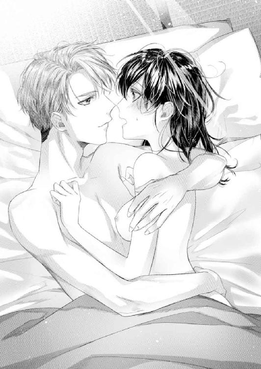

| 押しかけ御曹司の新妻にされそうです！【初回限定SS付】【イラスト付】 (チュールキス文庫) | |
| 葉嶋ナノハ | |
| 株式会社ジュリアンパブリッシング (2018) | |
この作品はフィクションです。
実際の人物・団体・事件などに一切関係ありません。
イラスト・瀧順子
深い眠りの底にいた私......白坂琉衣は、まぶしい光に目を覚ました。
梅雨寒を連れていた雨は上がったようで、部屋全体がとても明るい。元気な鳥の鳴き声が朝を告げている。
薄目を開けるも、すぐにまぶたが下りてしまう。布団の中でまどろみたい欲求と戦いながら、突如襲ってきた頭痛に顔を歪めた。
「う......、頭痛い......」
そういえば私、昨夜はいつ帰ってきたのだろう。まったく記憶がない。
頭痛と、なぜか全身の筋肉痛に襲われている。さらに下腹というか......大事なところがひりひりと痛むのだ。
昨日、会社帰りにジムに寄ってワークアウトをしたのだろうか。そのわりにランニングマシーンで走った覚えも筋トレした覚えも、泳いだ覚えもない。
（とにかく晴れているなら、すぐに洗濯しないと）
今は六月。梅雨真っ最中だ。またいつ晴れ間が訪れるか、わからない。私は痛みをこらえながら、まぶたをえいっと開けた。
「......おはよう」
「えっ？」
真後ろから届いた低い声に、身が縮む。
自分以外に誰もいないはずのワンルームで、なぜ人の声が......？
恐怖におののいた私は急いで布団を出ようとしたが、後ろから誰かに抱きしめられていることに気づいた。
「だ、誰!? 何これっ！」
半ばパニックに陥りながら叫ぶ。
「うわっ、どうしたの？」
「は、離して......！」
男性の声でさらに驚いた私はじたばたするも、相手の腕の力が強くて逃げられない。
温かな人肌が私を包んでいる。この感触は......相手も私も、裸だ......！
「なんで私、裸なの!?」
飛び起きようとした私は、さらに抱きすくめられた。
「落ち着いて、ね？ 大丈夫だよ、僕は怪しい者じゃない。こっちを向いて、琉衣」
「え」
琉衣、と私の名前を呼ぶ。ということは知り合いなのだろうか。私は男性の腕の中で恐る恐る振り向こうとする。その途端、男性に向かい合わせに抱え直された。

「琉衣......」
知り合いではない。だが、間近でこちらを見つめる顔に見覚えがある。明るい色の瞳に白い肌、栗色のふんわりした髪、鼻筋の通った、全体的に色素の薄い美形男性......。
「......もしかして、昨日、会社帰りに私が傘を差しかけた人......？」
ぼんやりした記憶の中に、彼との出会いが甦った。
「そうだよ。君が僕を傘に入れてくれたんだ。もしかして寝ぼけてるのかな？」
彼がホッとしたように微笑む。
昨日雨の中、傘も差さずに佇んでいたこの男性を、私の傘に入れてあげたのは間違いない。けれど、なぜ今私の部屋で裸のまま布団に入っているのかはわからない。
「怪しい者じゃないって言っても、この状況は十分怪しいです！ とにかく私から離れて......！」
私は泣きそうになりながら、彼の腕の中で無理やり自分の胸を隠し、彼に訴えた。すると彼が不満そうに眉根を寄せる。
「僕らはゆうべ婚約したんだから、この状況はちっとも怪しくないじゃないか」
「......は？」
私とこの人が婚約？ ゆうべ......？
いきなり何を言っているのだろうか。疑念をこめて男性を睨むと、彼が慌てて説明を始めた。
「だからゆうべ、僕らはこの部屋で将来を誓い合ったんだよ。僕がプロポーズをして、君がそれを受けてくれた」
「う、噓......！」
「噓じゃないよ。まさか......全然覚えてないの？」
眉毛を下げたその表情は、普通の女性ならばそこで落ちてしまうかもしれないと思うほど、憂いを帯びたものだ。
こんな状況だというのに、ときめきそうになる。戸惑う気持ちを隠しながら冷静な声を出した。
「プロポーズどころか、どうしてあなたが私の部屋にいるのかわかりません。説明をお願いします」
彼が小さくため息をついた。
「君が僕をこの部屋に誘ってくれた。そして僕らは心も体も合わせて、たくさん愛し合ったんだよ......。僕はもう君無しではいられないほど、君に夢中になってしまって──」
「心も、体も......？」
この状況なら、それ以外のことは考えられないとはいえ、衝撃だった。やはり私はこの人とセックスしてしまったんだろうか。......初めてだったのに。
「それで僕がプロポーズをしたら、君は嬉しそうに僕の気持ちに応えてくれたんだよ？」
「どのように応えたんでしょうか」
「よろしくお願いしますって、優しく微笑んでくれた。それなのに覚えていないなんて、まさか僕を騙したの？ 琉衣......っ！」
「あうっ」
体を引き寄せられ、再び強く抱きしめられた。
温かい素肌がぴったりと密着する。男性の体は、どこもかしこも硬かった。私は彼の腕の中でもがきながら、少しずつ蘇る記憶を必死に辿った。
昨日の夕方のこと。
目の前にいる彼は......小雨の降る中立ち止まり、灰色の空を仰いでいた。
傘も差さずに何をしているのだろう。大通りから一歩入った道とはいえ、普段は人通りがあるのに、今は私とその男性しかいない。
曇り空に吹く風がさらに暗い色の雲を押し進めてくる。湿ったアスファルトの匂いが強くなった。今日は朝から梅雨寒で雨粒も冷たい。
そのまま通り過ぎてしまうのも気が引けた私は、微動だにしない男性に近づいた。
「あの、どうぞ」
腕を伸ばして傘を差しかける。
百八十センチを超えているだろう上背のある男性が、私を見下ろした。
「え......？ ああ、すみません。大丈夫ですよ」
私を見て驚いた彼は、すぐに穏やかな微笑みを見せた。けれど、どこか寂しげに見えたのは気のせいだろうか。そこまで思って、彼の容姿にハッとする。
ふんわりした栗色の髪と、同色の明るく大きな瞳。通った鼻筋に少し大きめの口。男性は肌の色も含めて全体的に色素が薄く、儚げな印象の美形だった。
「......でも、結構降ってきちゃったから、どうぞ」
何やらときめいている胸の内を隠しながら、彼に伝える。
雨足が強まってきたのは本当だ。好みの男性だから食い下がったわけではないのだけれど、勘違いされたかもしれない。彼は私を見つめたまま、何も言わないでいる。
引っ込みがつかなくなったのもあり、私は続けた。
「どちらまで行かれるんですか？ そんなに遠くへはご一緒できませんが、傘を売っているコンビニくらいなら──」
「どちらまで、って」
表情を曇らせた彼が言い淀む。
おかしなことを聞いてしまったのだろうか。傘を勧められたことがイヤなのかもしれない。それならばと、立ち去ろうとした、その時。
「わからない」
ぽつりと、寂しげな声が届いた。
「わからない？」
「......わからないんだ」
悲しく笑った顔が、私の胸に突き刺さる。私も彼と同様、その場から動けなくなった。
雨音とカクテル、そして素敵な笑顔の男性が隣に座っている。
私が傘を差しかけた相手だ。お腹が空いているという彼と一緒に食事をし、その後、このバーに来た。
彼のスーツの袖から覗く腕時計は、夜の九時半を指している。
小さなランプが等間隔に置いてあるカウンター席は、座り心地がとてもいい。口数の少ないマスター。流れてくるクラシックギターの音楽。振り向くとテーブル席の向こう側に見える窓越しの夜景が、きらきら輝いていた。いい雰囲気の店だ。
「おいしい......」
「よかった」
カクテルを口にした私のつぶやきに、彼が微笑んだ。
普段の私はバーになど絶対に近づかない。なのに今夜は彼に誘われるがままついてきてしまった。ぜひ一緒に、という彼の熱い視線と言葉に負けてしまったのだ。
ほとんど飲み干したカクテルグラスから視線を移す。同時に彼と視線がぶつかった。穏やかな瞳を向けられて、胸がきゅんとときめく。見れば見るほど素敵な人だな、と思う。
頭がふわふわして、気持ちに余裕が生まれている。いつの間にか、自信の持てない私はどこかへ消えたようだ。それが嬉しくて、勝手に頰が緩んだ。
私の自信のなさは外見にも現れている。ストレートの黒髪を後ろで結い、硬い印象の伊達メガネをかけ、常にパンツスーツという地味系女子。人と必要以上に関わることが苦手でつい距離を取ってしまうし、自分の心を素直に表現することもできない。
けれど今夜は、いつもと違う自分になれる気がした。私の理想の、積極的で明るく振る舞う女性に近づけそうなのだ。
「ペース速いね。大丈夫？」
「大丈夫よ」
余裕の笑みでうなずく。そう、これくらいの量などなんてことない。
「強いんだな」
「わりとね。もう一杯飲みたいな」
「ああ、頼もう」
彼がバーテンダーに目配せした。
（私にとってお酒は「禁断の味」......というものだった気がするけれど、それはどうしてだっけ......？）
バーテンダーが二杯目を私の前に置く。赤く透明な液体が光に反射して美しい。今さっき同じものを飲んだはずなのに、どうしてもお酒の名前が思い出せない。
「......」
ひとくち飲んでグラスを見つめるも、やはりわからなかった。彼はスコッチを飲んでいる。それほど進んではいないみたいだ。
彼が楽しげに話しかけてくれるのに、話の内容までも、わからなくなってくる。
「ねえ、メガネを取って見せて」
「え？」
「君の素顔が見たいんだ」
「......どうぞ」
彼の願望通り、私は眼鏡を外した。人前で顔をさらすことは滅多にないのだが。
「綺麗だ。もっとそばで、もっと近くで見たい」
伸びてきた大きな手が私の頰をそっと撫でた。反応した私の体全体が、びくんと揺れる。彼の熱いまなざしを意識しながら、私は二杯目のカクテルを飲み干した。喉の奥だけじゃない、体中が熱くなっている。彼の視線のせいで、頭の中まで沸騰しそうだ。
初対面の男性に頰を触られたのに......イヤじゃない。それどころか心地よくて、もっと触ってほしくなる。この人なら、今夜ずっと一緒にいてもいい......なんて。
「メガネの度は強いの？」
「これは伊達メガネなの」
「わざわざ......、どうして伊達メガネを？」
「秘密」
ふふんと笑ってメガネを指で弾くと、彼が私に近づいて、いたずらっぽく微笑んだ。
「それ、好きなんだね」
彼がカクテルグラスを指差す。耳の奥に響くような、低く、優しい声だ。頭がクラクラする。
「甘くておいしくて、とても好き。でも普段は飲まないのよ」
「どうして？」
「どうして......だったかな？ 変ね、思い出せない」
なんだか妙におかしくなってクスクス笑うと、
「はぐらかさないでよ」
と、彼が困ったように笑うから、胸がまたきゅんとする。
それにしても私、本当にどうしてこんなにおいしいものを、普段は飲まないのだろうか。何かとても、いけないことだったような──。
「......」
そもそも私、なぜこんなイケメンの隣に座っているのだろう。私、この人のことを知らない。どこで出会ったのだろう？ なんだかとても眠くて眠くて、うまく考えられない。
「ん？ どうした？」
「ううん。なんでも」
まぁ、いいか。楽しいし、紳士的で素敵な人だし。
「僕の名前は賢一郎だ。君の名前も教えてくれる？」
「私は琉衣」
「年齢、聞いてもいい？」
「二十五歳よ。あなたは？」
「今年で三十三歳」
「結構離れてるのね。えっと、五歳差かしら......？」
ぼうっとした頭で答えると、彼がくしゃっと笑った。
「ははっ、八歳差だよ。計算苦手なの？」
「あ、そうね。ごめんなさい」
「可愛いな。ずっとこうしていたい」
「......私も」
しばらくしてからお店を出ると、黒く濡れたアスファルトが印象的だった。冷たい雨は上がり、ひんやりとした涼しさだけが残っていた。
「どうぞ」
そう言って、彼をひとり暮らしの自宅に招いたのは、私だ。そして次の瞬間にはもう、私は彼とお布団の中にいた。
人肌があたたかくて心地よいことを初めて知った。緊張するかと思ったけれど、六畳一間の自分の部屋にいるせいか、それほどでもない。
「本当にいいの？」
私の瞳を覗きこんできた彼が、真剣な表情で問うた。茶色がかった瞳に私が映っている。綺麗だ。
「あなたなら、いい」
そう思ったのは噓じゃない。だから口にしてみる。
「ありがとう......！」
「んっ」
迫ってきた美しい顔に唇を奪われた。同時に、力強く抱きしめられて息が詰まる。
今日初めて会った男性にファーストキスを捧げてしまった。彼に何度も唇を重ねられて、そのたびに体が小さく震える。
「琉衣」
私にのしかかる彼が目を細めた。
「好きだよ」
「え？」
「琉衣。僕が探していた人は君だ。君こそ僕の理想の人だよ」
「それは......、んっ」
違うの、と言おうとした唇を再びふさがれた。
この人は勘違いしている。本当の私は外見通りに地味で、自分に自信の持てない人間──。
今夜の私はなぜか、理想の女性を演じることができているだけ。普段はこんなに大胆に振る舞えない......。
柔らかな唇が何度も押しつけられたあと、生ぬるいものが口中に入ってきた。それが彼の舌だとわかると同時に私の舌は絡めとられ、深く舐めつくされた。ふわふわしていた私の思考は初めての感触による羞恥に埋め尽くされる。
布団の上でもつれあいながら長いことキスをした。私、上手にキスができただろうか。
「琉衣、僕の名前を呼んで」
彼の指が私の濡れた唇をなぞった。ゆっくりと左右を往復し、撫でさする。
「ええと......」
さっき聞いたような気がするけど、忘れてしまった。
「賢一郎だよ」
睫毛が触れそうなくらいの近さで彼がクスッと笑う。
「けんいちろう......」
「そう、賢一郎。忘れないでね、琉衣」
「けんいちろう、さん」
「琉衣......、琉衣......っ！」
シャワーを浴びたのか浴びていないのか、そんなこともう、どうでもよかった。
たくさん触られて、体中舐められて、私も彼の体をいっぱい触ってキスをした。夢の中にいるみたいに、自分の声が遠くに聞こえる。現実から遠のいてしまったような不思議な心地だ。私の体に触れる彼の手が、とても優しい。
避妊具をつけるね、と聞こえた気がする。
途切れ途切れの記憶の中で、突然、濡れて疼いていた足の間に裂けるような痛みが走った。
「い、痛っ......！」
「え、ごめん......！」
彼が慌てて動きを止め、顔を歪めた私を心配そうに見る。
「あの、もしかして君......初めて、なの？」
「ええ、初めてよ」
彼の顔を見て思う。やはり、二十五歳で処女は驚かれる対象なのか。
「......そうだったのか」
「迷惑？」
「そんなことあるわけないじゃないか......！」
私の問いに、彼が真剣な顔で答えた。
「琉衣が僕でいいと思ってくれたんだ。とても嬉しいし、本気で幸せだよ」
「本当？」
「ああ、本当だ。大丈夫だからね。僕に全部......任せて」
途中まで私に挿入っているらしい彼が、顔を苦しそうに歪ませた。彼も私同様、さっきから低い喘ぎ声を出している。そんなひとつひとつの動作も、夢心地の気分で私は見ていた。
手を伸ばして彼の首にしがみつく。ゆっくりゆっくり、私のナカへ彼が挿入ってくる。
「あ、あ......」
痛いけれど、我慢できそうな痛みだ。
「琉衣、大丈、夫......？」
「あなた、は？」
「僕は、よすぎて......大変だよ、イかないようにこらえるのが」
彼が無理に笑った。その表情がとても切なくて......。
お互いの名前を何度も呼び合って、好き、とか、愛してる、なんて言葉をかわして、体を動かした。
「琉衣、聞いて」
ずいぶん長いこと揺さぶられていたようだ。いつの間にかセックスは終わったらしく、私は彼の腕の中でまどろんでいた。
「......ん......？」
全身が熱で溶かされたアイスみたいに、とろとろになっている。もうずっと、眠くて眠くてたまらない。そろそろ限界だ。
「僕と、結婚してくれ」
「結婚？」
「君がいいんだ。君じゃなくちゃ、イヤだ」
「でも」
「お願いだよ、好きなんだ。愛してる......！」
せっぱつまった声と、抱きしめる手の力強さに身を任せていると不思議な気持ちになった。
──結婚まで考えてくれるほど真剣に愛してくれるのなら、こんな私でも、幸せになれるかもしれない。
「琉衣。僕は本気なんだ」
「......」
「幸せにする。絶対に」
「......私でいいの？」
眠くてたまらない。
「君がいい。だから、いいね？」
「......はい。よろしく......お願い、しま、す......」
「ありがとう......！ 一生君を大切にするって、誓う──」
「......ん」
「琉衣......？ 疲れちゃった？」
「......」
「眠ったのか。おやすみ。愛しい人」
私は下りてくるまぶたの重さに抗えず、とうとう目を閉じた。
プロポーズをされた私は......あなたの理想の女性なんかじゃ......ない......。
──途切れ途切れではあるが、昨夜の情事が私の頭を駆け巡った。彼との出会い、食事後に彼に誘われてバーへ行き、そして私がこの部屋に彼を呼んだ──。
「確かに私、あなたをここに誘って......、ああっ、もーっ！ 恥ずかしいっ！」
数々のやらかしを思い出して、顔から火が出そうだった。思わず布団に潜りこもうとしたが、彼の手に阻止される。
「よかった、思い出してくれて！」
私を抱きしめる手にまた力がこめられる。
昨日声をかけた時は着やせして見えた。けれど実際の彼の体にはしっかりと筋肉がついていて、そのギャップに魅力を感じてしまう。さっきから男性と裸の体をくっつけ合っているというのに、私の体も心も拒否反応を起こさないのは、昨夜ああいうことがあったからなのか。
「それで、どうなんだ？ これはひと晩だけの過ちで、君は僕を騙したのかな？」
「だ、騙したわけじゃないと思うんですが、その過程をよく覚えていないというか、記憶が途切れがちというか、その時はよくわかっていなかったというか......」
バーに行った私は自らに禁じていたお酒を飲んでしまった。あれほど警戒して、口にするのをためらっていたお酒を、なぜか彼の前では飲んでしまったのだ。そこからの記憶が曖昧だ。
「僕を愛していると言ったじゃないか」
ぐるぐる考えている間に、端整な顔に迫られていた。
「ちょっ、ちょっと待っ──」
「あんなに愛しあったのに、どうしてそんなにイヤがるんだ。ひどいよ、琉衣......！」
「ん......っ！ んふぅ」
唇が重なり、私の口中はあっという間に彼の舌に蹂躙されてしまった。生ぬるく柔らかな舌が私の舌をむさぼっている。ゆうべ、同じようにキスした記憶が呼び覚まされた。
「んっふ、んっ」
急激に体が熱くなる。息が苦しい。彼の苛立ちが激しいキスから伝わった。
「ん、はぁ......っ」
唇が解放されると、耳や頰、首筋にまで彼の唇が這い回る。
「大好きだ、琉衣。目が覚めても僕の気持ちは変わらなかった。ひと晩だけだなんて残酷なこと、言わないでくれ......！」
「あっ、やっ......んっ」
昨日会ったばかりの人と、こんなことをするなんて私の意志に反するのに......体に浸透してしまった彼の感触が私の体を昂ぶらせる。
大きな手のひらが私の背中を優しく撫でた。何度も何度も。体をよじらせると余計に肌が密着してしまい、それに反応した彼の息が荒くなる。なんだか私まで変な気分に──。
「いや、ダメ......ッ」
ハッとした私は、彼の胸に手を置いて思いきり押した。私に触れていた彼の手が止まる。
「まったく......傷つくなぁ」
彼が大きなため息を吐いた。そういえばこの人の名前は......？
「私、本当にあなたと......最後まで、したんですよね？」
かきくけこ、の行の名前だった気がする。かずと、かずや......違う。きいちろう......近い感じだ。くろう、違う。
「ああ。君の処女はいただいたよ」
「......っ！」
にっと笑われて顔に血がのぼった。
「嬉しかったよ、ありがとう、琉衣」
この甘い声を、ゆうべ何度も聞いた。
痛い頭の中に意識を巡らせて、どうにかこうにか記憶を引っ張り出す。
かきくけ......、けん。けんいち？ けんいちろう......！ そうだ、けんいちろうという人だ。歳は私より上だった。何歳差かは忘れてしまったけれど。
「しかし、本当にそこまで覚えてないなんて、どういうことなんだ？」
がっかりした口調で彼が言う。
「......いえ、だいぶ思い出しました。あなたに誘われてバーに行った私は、かなりたくさんのお酒を飲んだんですよね？」
「いや、飲める人なら、あんなもんじゃないかとは思うが。記憶をなくすほどの量ではないよ。飲みすぎているようなら、その場で僕が止めている」
「違うんです......」
一番してはいけないことを、やらかしてしまったのだ。
私は顔に全く出ないタイプの下戸だ。具合が悪くなることもないため、周囲には気づかれない。だが当の本人は飲んだことすらほとんど記憶に残らないくらいに、お酒に弱いのだ。
お酒を口にした私は饒舌で、誰彼かまわず馴れ馴れしく接する女性になるらしい。学生時代にそれをやらかして、先輩や友人らにドン引きされた経験がある。それ以来、もう二度と飲まないと誓っていた。会社の飲み会ですら、ソフトドリンクで通しているのだ。
「ごめんなさい。こうなったのはすべて私がいけないんです」
「どうして謝るの」
「実は私、とてもお酒に弱くて......下戸なんです」
「えっ！ ......噓だろう？」
彼の表情で確信した。お酒を飲んだ私は、やはり饒舌で余裕のある女性になりきっていたのだ。
「お酒に弱いどころか、強そうに見えたでしょう？」
「ああ。まったく酔っているようには見えなかった。顔色は変わらないし、口調も足取りもしっかりしていた」
「昔からそうなんです。本当に......ごめんなさい」
「それじゃあ君は、酒の勢いで僕とこうなったって言うのか......？」
「え」
強い視線を向けられて、思わず目が泳いでしまった。
お酒に近寄ることすら避けていたのに、なぜ私は彼についていってしまったのだろうか。
バーの前に彼と行った食事がとてもおいしかった。彼が話し上手で楽しかった。
彼は仕事のためにアメリカから帰国したのだと聞いた。しばらくホテル住まいの予定だったが、ホテルを探す気になれなくてうろうろしていたところ、声をかけたのが私だという。
私も自分の話をした。会社はこの近くで、趣味は資格を取ることや体を動かすこと。他愛もない内容ばかりだったけれど話は尽きず、とても気が合うと思った。
けれど、それよりも気になっていたのは、最初に彼の後ろ姿を見つけた時のことだ。とても寂しそうに見えて、なんだか放っておけなかった。振り向いた彼の悲しげに笑った顔が、今も心に焼きついている。
彼のその表情は、無理して笑う昔の自分に似ていた。似ていると思った。
だからきっと心を許してしまったのだろう。心だけではなく体まで......彼に。
びっくりするほど私の好みということもあるけれど、それだけじゃなかったのも、事実だ。
「勢いだけで、そういうことはしないと思います。酔っていても『あなたならいい』と、その時の『私』が判断したんでしょう」
「そうか。それなら安心したよ」
彼が心の底から安堵した、というふうに息をついた。
「あなたこそ、どうして私と結婚したいだなんて言うんですか」
「君が僕の探し求めていた人、だからかな」
「たったひと晩一緒にいただけで、そんなことがわかるんですか？」
「......まぁね」
いったい私の何をそんなに気に入ったのだろう。美人ではないし、地味だし、会社で先を期待されるようなキャリアウーマンでもない。
自慢ではないが私はコンプレックスだらけの人間だ。
幼い頃から父母には期待されず、何をしても褒められない。だからダメな人間だという考えから抜け出せず、理想の女性像で塗り固めたＳＮＳのアカウントを作って書きこむことで、なんとか自分を保っているような、そんな人間。だからここまで男性に好かれるわけがない。
「あ、そうか」
彼は、ゆうべの私しか知らないのだ。
「聞いてください。あなたは勘違いしています。あなたが好きになったのは、お酒を飲んで余裕のある女性として振る舞っていた私で、普段の私は全然違うんです。だから──」
「何を言っているんだよ。酒に酔う前の君だって、僕は好きだよ」
「え？」
「ねえ、琉衣。いつ籍を入れようか。結婚式はどこがいい？」
うっとりした表情で私の瞳を覗きこんでくる。人の話を聞こうとしない彼のセリフに疑念が浮かんだ。
「まさか......結婚詐欺じゃないですよね？ 私そんなに貯金はありませんので」
「ちょっ、僕がそんなことするように見えるの？」
「ひと晩過ごしただけで結婚結婚と言うほうが怪しいでしょう。とにかくゆうべの私は......、あーっ！」
「ど、どうした!?」
「噓っ！ 七時半過ぎてる！」
時計を見た私は、彼を振り切って起き上がった。ガンガンという頭の痛みを我慢しながら、畳に散らばる下着をかき集める。片手で胸は隠していても、お尻が丸見えなのが恥ずかしい。
「ああ、七時半過ぎてるね」
のんきな声にイラッとしつつ、彼に背を向けてブラを身につけた。さっとショーツも穿く。
「私はこれから仕事なんです！ 今日は大切な日なのに遅刻しちゃう！」
「会社は近いんでしょ？」
「近いですけど、この時間じゃ急いで支度をしないと間に合わない、あ、メガネ！」
「ここだよ」
彼が枕もとにあったメガネを、こちらへ差し出してくれる。
「ありがとうございます」
「ねえ、どうしてメガネするの？」
「どうしてって、メガネが必要だからに決まってるでしょう」
「......ふーん。まぁ、いいや」
妙なことを聞く人だと思いながら立ち上がる。すると彼も起き上がった。
「じゃあ僕も行くね」
「え？ あ......、きゃっ」
全裸で立ち上がるから、悲鳴を上げてしまった。体を合わせたとはいえ、朝の明るい部屋で男性の裸を見てしまうのは、さすがに動揺する。昨日まで処女だった私には刺激が強い。
「ああ、ごめん。ちょっと洗面所貸してね。すぐに着替えるから」
彼が部屋を離れ、私は急いで部屋着を着た。そして布団をたたみ、会社用のバッグの中身を確かめる。昨日のままだ。スマホを取り出し、メイク道具を用意したところで彼が戻ってきた。
「お邪魔しました。またあとでね、僕の大事な人」
スーツ姿にどきりとする。昨日の、彼だ。私の目を惹きつけた素敵な男性がここにいる......。
「ん？ あとで？」
見とれながら、彼の言葉に引っかかりを覚えた。
しかし、彼はさっさと玄関へ向かってしまう。そして革靴を履いてドアノブに手をかけ、追いかける私のほうに振り向いた。
「じゃあね」
笑った彼の髪は跳ねてるし、顔も洗っていない。第一こんな朝早くから、どこへ行くというのか。
「ちょっと待ってください。あとでって、ここに戻ってくるつもりなんですか？」
「バイバーイ」
彼は自分のスーツケースを玄関に置いたまま、ドアを開けた。
「えっ、ちょっとこの荷物は!? 私これから出かけるんですけど!?」
手を振りながら、彼は行ってしまった。アパートの階段を下りていく音だけが耳に届く。
「ああっ、こうしてる場合じゃない！」
呆然としていた私は、自分の頰を両手でパンと叩いた。
今日は勤務先の会社で新社長が就任する日なのだ。こんな日に遅刻しては一日中人事部長に嫌みを言われるのは必至だ。
いつも通りの薄いメイクをして伊達メガネをかけ、パンツスーツを着こんだ私は、急いで玄関に走った。横目で彼が置いていったスーツケースを睨む。
「今日はジョギングも掃除もできなかった。帰ってからする。絶対する......、あ、いたたー......」
足の付け根や腰回りの痛みが引かない。普段からワークアウトをしていて、筋肉痛になることはないのに。
「あ......やだ」
普段と違う筋肉を使ったからだと気づいたとたん、顔がかぁっと熱くなった。
ようやくしっかり目が覚めたのだろう。彼と肌を合わせた記憶が鮮明に甦る。彼の肌の温度、熱く漏れる吐息、喘ぎ声、押し入ってくる痛み──。
「だから、そんなこと考えてる場合じゃないの......！」
ドアを閉めた私は鍵をかけ、アパートの階段を急ぎ足に下りる。
──彼だったらイヤじゃない。
出会った時から感じていたその思いを振り切るように、私は会社までの道のりを走った。
「よかった、間に合って」
Ａ５サイズの手帳を胸に抱き、ホッと息をつく。所属する人事部の人たちとともに、大会議室へ入った。
私は大手リゾートホテルグループである、東川リゾート本社の人事部で事務をしている。
東川リゾートは京都、軽井沢、湯布院、富良野、仙台、金沢、伊豆、箱根、鎌倉、宮崎、奥日光など、国内にいくつもの高級リゾートを持ち、日帰り施設や駅に直結したホテルなども経営する大企業だ。五十年以上続く会社だが、一時は低迷していた。それを払拭するため、私が入社する数年前に大改革を行ったのだ。その際、ひとつひとつのリゾートに新たなテーマを定め、老朽化した宿泊施設には大掛かりなリノベーションを施した。一から立て直したといってもいいだろう。
それらのリゾートはテレビ取材や雑誌、ｗｅｂニュースなどに度々掲載されている。今では国内に留まらず、海外に進出するリゾート計画が進んでいた。
東川リゾートが復活することになった大改革。これを提案したのが現社長の息子であり、本日新社長となる人なのだという。
今日はその新社長就任、そして前社長の会長就任の発表があるのだ。こんな日に遅刻して、その理由が男性と寝ていたから、などということはあってはならない。遅刻しなかったとはいえ、ぎりぎりに会社へ到着するのは初めてだ。
容姿も仕事の能力も人より劣っているのだから、これ以上ダメにならないようにもっと自分を律しなければ。私は人事部の人たちと椅子に座り、姿勢を正した。
「このたび東川リゾート社長、そして総支配人に就任しました、東川賢一郎です」
けんいちろう、の名が聞こえて胸がずきっとする。今朝まで一緒にいた男性も「けんいちろう」だった。関係ないのに心臓がドキドキと高鳴る。
「私は就任するまでのこの一年、東川リゾートにおける今後の展望について会長と──」
しかも、名前が一緒だっただけではなく、マイク越しの声が今朝の彼の声と重なって聞こえるのだ。
（いくら今朝のことが衝撃的だからって私は何を考えているのよ）
大会議室にずらっと並んだ席の端に座っていた私には、新社長の顔がよく見えない。前に座る人事部長の頭が邪魔だ。
ありえないことだが、社長の顔が気になった私は体をずらしてみた。しかしタイミングの悪いことに、部長が同じ方向に体をずらしたため、さっきよりも見えにくくなってしまう。
「ねぇ、新しい社長、すごく素敵じゃない？」
「ほんとね。社長の息子さんなんだよね？」
「ということは、三十代？ 若いよねー」
人事の先輩と総務の女性が、ひそひそと話している。そこでやっと人事部長が座り直して、私にも社長の姿が見えた。
「え......？」
思わず声が漏れる。
（まさか......!? 噓でしょ!?）
私は伊達メガネを外して目を凝らした。
（あ、あの人が......社長!?）
全体的に色素が薄く柔らかい印象の男性。背が高く、美形の彼が......こちらを見た。視線がバッチリ合ってしまい、心臓が跳ね上がる。
けれど彼──東川社長は私を凝視することなく、すぐさま目をそらした。
「あ......」
「白坂さん、どうしたの？」
人事部の先輩、三浦さんが心配そうに声をかけてくる。
「あ、いえ。なんでもありません。すみません」
見間違いじゃないし、確かに目が合ったのに......。もしかして、そらされたのだろうか？
ひと晩過ごして、私の初めてをあげてしまった、そしてついさっきまで一緒にいた「けんいちろう」という男性が、東川グループの新社長だったとは。私は社長と体の関係を持ってしまったの......？
（ど、どうしよう......）
プロポーズまでされてしまった。今朝だって結局、私の意見なんて無視して結婚の話を進めようとしていた。
（でも、私が社員だとわかったらプロポーズはすぐに取り消すはず。社長夫人なんて私みたいな一般人から選ぶわけがないんだし......。こんなこと本気にするほうがどうかしてるよね）
だから視線をそらされたのだ。
私とこれ以上関わりたくないという、彼の無意識の行動だろう。
あの男性が何者なのか、それがわかっただけで十分だ。彼にとって私の存在は迷惑になるだけ。今夜彼が荷物を取りに来て、おしまい。それでいい。
彼ならいい。そう思って体を合わせたのだ。覚えていないことは所々あるけれど、一夜の大切な思い出として、ゆうべのことは心の中に閉じこめておこう。
ピンポン、とインターホンが鳴った。東川賢一郎──彼だろう。
「はい」
「琉衣、僕だよ。入れてもらえる？」
私は鍵を開けてドアをひらいた。今朝と変わらず、優しい笑みでこちらを見つめている。私の胸が小さく震えた。
（何を今さら、ためらうことがあるのよ）
ひと晩過ごしただけで、そんなにも情が移ってしまったのだろうか。人と深く関わることが苦手な私に限ってそんなことはない、と思いたい。
「夜遅くにごめん」
「いえ、大丈夫です。どうぞ」
玄関先で荷物を渡して終わりにしようと思っていたけれど、自分の会社の社長だ。今後、お互い何事もなかったように会社で振る舞ってもらうために、きちんと話をしよう。
部屋の座布団に座ってもらい、私は麦茶を持っていく。
「会社で人事部長があなたに説明した通り、私はあなたの会社の社員です。今日、初めてそれを知りましたが」
大会議室での社長就任発表後、人事部に戻っていつも通り仕事を始めた。しばらくすると、彼、東川社長が部署の様子を見回りに来たのだ。私はそこで彼と対面した。東川社長は驚く様子もなく、部長が紹介した私の名前を聞いて、うなずいただけだ。
「ああ、そうだね」
未だ落ち着き払った彼の態度に疑問が湧く。
「まさかと思いますが、私が東川リゾートに勤務していることを知っていたから『あとで』なんて言ったんですか？ 酔った私がそこまで話したのかもしれませんけど......」
「いや知らないよ。ただ、琉衣が自分の勤めているのは近くのリゾート会社だと言っていたし、今朝は大事なことがあるなんて慌ててたから、多分東川リゾートのことだろうと思ってね」
麦茶を飲んだ彼は、おいしいね、と無邪気な笑顔を見せた。
東川社長が私の部屋にいる。改めてそう思うと、妙に緊張してきた。
「ねえ、琉衣。僕、考えたんだけど」
「......はい」
私に口止めをするお願いだろう。それとも、ゆうべのことはなかったことにしてくれとか？ 先に言ってくれるのなら、それはそれで話が早い。
あと、普通に名前で呼ばれているけれど、会社では絶対に気をつけてほしい。私だって間違ってもゆうべのように「賢一郎さん」などと口走ってはいけないのだから。
「僕、ここに住んでもいい？」
うつむいて考えている私に彼が言った。
「......はい？」
顔を上げて聞き返し、ずり落ちそうになったメガネを押さえる。
「琉衣の部屋に住まわせてもらいたい」
「はっ!?」
いろいろ考えていたことが、すべて吹っ飛んでしまった。
「君と一瞬でも離れたくないんだよ」
本気で言っているかのような口調に困惑する。
「なっ、というかですね、私と住みたいって......帰国したらどうするつもりだったんですか？ 社長なんですから、相応の場所が用意されているのでは？」
「ううん、ないよ」
彼は悪気のない声で返事をすると、立ち上がってスーツのジャケットを脱ぎ始めた。
「しばらくホテル住まいして、その間に物件を探すつもりだったから、まだ行く当てはないんだ。現住所は父のところになっている。前に帰国した時に役所関係の手続きは全部済ませてるから、怪しい者ではありません」
「無理です」
私も立ち上がって彼のジャケットを受け取り、ハンガーにかけた。社長のジャケットが皺になるのは社員としていただけない。一瞬香ったフレグランスにドキッとする。
「なんで無理なの？」
「なんでって、社長と同居なんて無理に決まってるじゃないですか......！」
きょとんとしている社長の前に座り、私は声を荒らげた。
「社長の僕がいいって言ってるんだから、いいじゃない。君が気にすることはないよ」
彼がやれやれと言ったふうに肩をすくめる。
「アメリカでどうだったかは知りませんが、日本でこういうことは困るんです。私が会社にいられなくなってしまいます。社長がいいと言うから大丈夫だなんて、職権乱用はやめてください」
「職権乱用のつもりじゃなかったけど......そうか、その手があったね」
彼はポンと手を叩くと、私に近づいた。
「琉衣、社長命令だ。一刻も早く結婚しよう。すぐに僕の妻になってくれ」
ぎゅうっと強く抱きしめられた。先程のフレグランスの香りで胸がいっぱいになり、眩暈がしそうだ。ゆうべのことがまたも思い出され、動揺しながら彼の腕の中でもがく。
「ちょ、ちょっと離してください。どうしてそうなるんですか......！」
「僕の妻になってよ。幸せにする。一生大事にするから」
「私の話を聞いてください。今朝も言いましたけど、どうして、たったひと晩一緒に過ごしただけで結婚につながるんですか。意味がわからない」
「雨の中、傘を差し出してくれた」
「え？」
「僕に声をかけてくれた」
ずれたメガネを直しながら顔を上げると、真顔でこちらを見る彼と視線がぶつかった。
「傘って、そんなことで......？」
「そんなこと、じゃないよ。迷っていた僕を助けてくれたんだ。琉衣は僕の運命の人だと思う」
道に迷っていたところを助けただけで、そんなふうに思うものだろうか。
「アメリカには素敵な女性がたくさんいらしたんじゃないですか」
「魅力的な女性はいたよ。だが、プロポーズをしたのは君が初めてだ。僕にはもう君以外の人は考えられない。誰も目に入らない。君が好きなんだ、琉衣」
「外国にいたからそんなふうに何度も好き好きアピールするんでしょうけれど、私にはかえってうさん臭く聞こえます。運命の人だなんて、会ったばかりなのにわかるはずがない」
つんとして答えると、彼が悲しそうな顔をした。
「僕にはわかる。だからそばにいたい。僕が泊まるホテルに琉衣が来てくれるのでもいい。そこでずっと一緒にいよう」
「そんなのイヤです。私の生活の場はこの部屋です」
「じゃあ今すぐ結婚しよう」
「だから、どうしてそうなるんですか......！」
「君と離れたくない。だから僕がここに住む。ダメ？」
まるで捨てられた子犬のように、首をかしげて私を見つめている。不覚にもきゅんとしてしまった。
これが昼間、大会議室で大勢の社員の前で厳しい顔をし、今後の東川リゾートの展望を語っていた社長だろうか。そのギャップに困惑する。
「私は自分のペースを乱されるのが苦手なんです。だからここで邪魔をされるのは困ります」
「邪魔なんてしない。君のそばにいたいだけなんだよ」
「......そんな顔して見つめないでください」
「くじけそうになっちゃう？」
さらに反応しそうになった心臓を抑えて、唇をきゅっと嚙む。図星とまでは言わないが、彼の読みが外れているようにも思えない。だって私、疑っているクセに彼のことがとても......気になっている。
「少しは僕のことが気になるんじゃないか？ どうして僕に処女をあげてもいいとまで思ってしまったのか......とか、知りたくない？」
思っていたことを言われて動揺した。
「素直になって、琉衣」
「......少しだけ、思いました、けど」
うつむいてもう一度口を引き結ぶと、頭上からクスッと笑い声が聞こえた。
「君の顔を見ていたら本気で職権乱用したくなっちゃうなぁ。可愛いよ、琉衣」
職権乱用やセクハラを理由に訴えて、彼を追い出すことはできるかもしれない。けれど。
「琉衣が僕を誘ったクセに」
「っ！」
「僕のプロポーズも受けてくれたクセに」
口を尖らせて私の顔を覗きこんでくる。
確かに、彼を自分からここへ招き入れておいてセクハラも何もないだろう。観念するしかないか。
「......わかりました。でもきっと、私と一緒にいたら幻滅して、プロポーズしたことを後悔しますよ」
「どういうこと？」
彼が眉根を寄せる。
「一緒にいればわかります。あと、私たちは上司と部下という関係になったんですから、会社での名前の呼び方に気をつけてください。それから体の関係もお断りします」
「名前の呼び方は気をつける。体の関係は、君がその気になってくれるまで我慢するよ。約束だ」
東川社長は真剣な瞳でこちらを見ながら、こくこくとうなずいた。
昨夜の私と普段の私のギャップに、がっかりされることは間違いない。
コンプレックスだらけで見栄っ張りな噓の鎧をまとって生きている。そのせいで本当の自分を見失いかけている私を見ていれば、きっと自然に離れていく。
その時に傷つかないでいられるよう、彼に感じた好意的な気持ちは胸の奥にしまうことに決めた。右手で胸をそっと押さえて、二回、トントンと叩く。臆病で自分に自信のない私の、いつもの儀式だ。
「これ、どうにかならないのかな」
翌朝目が覚めた私は、ため息混じりにひとりごちる。
後ろから私を包む彼の腕をそっとほどいた。うーん、と彼が寝返りを打ったのを見計らって私はそろりと布団から出る。
東川賢一郎。大手リゾート会社、東川リゾートの新社長兼総支配人である彼の背中を見つめた。
布団がひと組しかないので無理やり一緒に寝たけれど、彼は私に何もしてこなかった。ゆうべの約束をきちんと守ったのだ。
（何もしてこなかったとはいえ、ひと晩じゅう抱きしめてくるって......どうなの）
こちらを振り返った彼のまぶたがひらく。布団の横で正座をしていた私と視線が合った。
「琉衣......おはよ」
優しく微笑まれて胸がきゅんとする。眉目秀麗な男性に色っぽい声をかけられたら、たいていの女性は同じ反応をするのではないだろうか。
「おはよう、ございます」
私は慌てて立ち上がり、彼のそばを離れた。やることがたくさんあるのだから、見とれている場合ではない。
彼は、掛け布団をぎゅっと抱きしめた。
「琉衣がそばにいない。寂しい」
「忙しいんです。お好きなだけごゆっくりどうぞ」
「この部屋ってさ、なんか安心する。よく知っているような......不思議な感じだ」
「？ そうですか」
私は着替えを持って洗面所で身支度を整え、トイレを済ませた。面倒極まりないが、彼がここにいることを許したのは私なのだから仕方がない。
そのままキッチンで白湯を用意する。毎朝の習慣だ。今朝の湯呑は粉引の器に決める。
「早起きだね。何撮ってるの？」
パジャマ姿の彼がやってきて、私の手もとのスマホを見た。
「もしかしてＳＮＳ用の画像？」
「そう、ですけど」
私は白湯が入った湯呑を、スマホの写真に収めていたのだ。
「ふうん」
もしや私、酔っている時にＳＮＳのアカウントを彼に教えてしまったのだろうか。
「あの、何か......？」
確かめるように彼の瞳を見つめ返す。
「いや、僕のアカウントを教えようかなって」
スマホを取り出した彼のセリフにホッとした。誰にも知られたくない私の秘密だ。いくら酔っていたからといって教えるはずはない。
（でも、私のＳＮＳの内容を知ったら、この人はすぐにでも離れてくれるかも......）
と考えて思い直す。せっかく自分ひとりで楽しんでいるアカウントなのだから、わざわざ教える必要はない。
私は白湯を持ち、部屋に戻った。彼もついてくる。
「あなたのアカウントは教えてくださらなくて結構です。私も教えるつもりはありません。私、リアルでお付き合いのある方とネットでつながりたくないんです」
「ああ、そう」
うなずいた彼は畳の上にスマホを置いた。あっさり引き下がられて拍子抜けする。私のことを好き好き言いながら、そこは気にならないんだ。
「軽くですけど朝食を作りますので、よかったらいかがですか」
「いいの？」
「ひとりでは食べづらいので」
「ありがとう。嬉しいな」
なんだか調子が狂う。
いつもだったら常備菜とごはん、昨夜の残りのお味噌汁だけで済ませるのに。今朝はベーコンエッグなんか作ろうとしている。
「琉衣、新妻みたいだね」
無邪気な笑顔と言葉にどきんとして、手もとが狂った。慌ててガスの火加減を整える。
「勘違いしないでください」
「勘違いじゃないよ。僕は結婚する気満々なんだから。ね？」
「......知りません」
男性とこんなふうに過ごした経験がないから、いちいち反応してしまうだけなのだ、きっと。
そこでふいに、苦い思い出が胸をよぎった。
大学生のころに彼氏ができた。彼とつき合うことになって間もなく、最悪の形でフラれてしまった。その後、誰ともつき合っていないので男性には免疫がなかった。
フラれた原因は、私の四歳年上の姉だ。
物ごころついたころにはすでに、私はいつでも姉の陰にいた。しっかり者のうえに美人で、勉強も習い事も秀でていた姉。そんな姉とは逆に、私は美人ではなく、何をするにも時間がかかり、成績は人並み、運動は苦手で習い事も続かない子だった。
父母は私を可愛がらないわけではなかったが、時折姉と比較して失望した表情を見せたり、できの悪い私にあえて期待をかけないという、悲しい気遣いの態度を取ったりしていた。
私にはそれがつらかった。言いたいことも言えず、自分に自信が持てず、反抗期すらない子供だった。
そんな私に、大学に入って好きな男性ができた。彼といい雰囲気になり、つき合って間もない頃のこと。家に彼を招いた日、仕事でいないはずの姉が午後休を取って家に帰ってきたのだ。彼は姉に一目ぼれ。私をフッたあとに姉に告白をするも撃沈。告白を断るのは当然だと姉は怒っていたが、私はすでに彼のことなど、どうでもよくなっていた。
所詮、姉には敵わない。そんな思いを強くしただけの出来事だった。
姉のことは嫌いではない。むしろ、彼女のようになりたいと憧れてやまない存在だ。けれど光り輝く彼女のそばにいることは、とてもつらい。だから私は就職と同時に家を出た。
あの時の思いは胸の奥に閉じこめていたつもりでも、こうして突然現れるから困る。他人から見ればくだらないかもしれないが、私にとっては思い出した瞬間に見動きすらできなくなる、苦々しい記憶だ。
それを思い出したくないから体を動かし、しなければならないことを次から次へと作って泥のように眠る。そしてトラウマに心が潰されないように、理想の自分をＳＮＳという虚構の世界に投稿していた。
手のひらで胸を押さえて軽く二回叩き、苦い思い出を閉じこめる儀式をした。
「すごいなぁ。いつもこんなふうに作りおきしてるのか」
彼の声で我に返る。
冬はこたつになる小さなテーブルに朝食を並べ終えると、東川社長が感心していた。
「無駄が減るんです。節約は大切ですから」
彼はいい匂いだなとか、これは何？ などと楽しそうにしている。そういえば、自分が作ったものを人に食べさせるのは初めてだ。まずくはないと思うけれど緊張する。
「あ、ちょっとすみません。画像だけ撮らせてください」
私はスマホのＳＮＳにログインし、朝食を撮影した。
「どうぞ、そのまま投稿しちゃっていいよ。待ってるから」
「あ、いえ、先に食べててください」
「じゃあ遠慮なく、いただきます」
ごはんの前で手を合わせた彼を横目に、私は画像とともにコメントを投稿する。
『作り置きのきんぴらと、ひじきの煮物。いつものお味噌汁。久しぶりにベーコンエッグを作った。すこやかな女性でいたいから、朝ごはんは丁寧に、体が喜ぶものを』
私は気まぐれに投稿を続けている。仕事で忙しい時は次の投稿まで一週間以上空く。時間がある時は一日に二回くらい投稿する。
私の理想は、ストイックに仕事や家事をこなして生活を楽しみ、美しく生きる女性だ。信頼し合う恋人と忙しさの合間を縫ってデートをし、恋人がいても自分のペースは崩さない。流行にとらわれずに好きなものを選び、おしゃれやメイクを楽しんでいる、そんな女性。
『人の意見を気にしてもなんの得にもならない。私は着たいものを着ているだけ。それが幸せだから』
『美術館に行き、好きな絵を眺める。今回の展覧会について私は、作者の意図をこんなふうに解釈した──』
『恋人に大好きと言えるのは、このうえない幸せ』
などという、現実では絶対に口にできないことや、噓の投稿をしているのだ。
けれど現実の私は、自信のない顔を隠すために伊達メガネをかけ、家でも外でも地味な服装をしている。本当は会社に着ていきたい服があるのだが、似合わないと思われるのがイヤで、家で撮影をしてＳＮＳに投稿するだけ。そこに三桁の「いいね」がつくのを見て満足して終わり。
投稿している内容の中で本当なのは、ごはんを作ることと、週に何度かワークアウトをすること、家の中をピカピカになるまで磨くことくらいだ。体を動かすことに集中して、イヤな記憶を思い出さないための習慣なのだが、本当の私を知らないＳＮＳの人たちは称賛してくれる。
我ながら悲しくなるけれど、自信のない自分を保つためにはこれしかなかった。
東川社長を部屋に誘った私は、ＳＮＳ上にいる『理想の私』だったんだろう。
そういえば一度だけ、ＳＮＳに弱音を吐いたことがある。
慣れない仕事が忙しく、時間がなくて部屋は荒れ、体調も芳しくない。会社と自室の往復に虚しくなって、つい愚痴を言ってしまったのだ。愚痴を言ったのは初めてで、それを見た人たちに引かれるのが怖くて、削除をしようとした時。
『お疲れ様です。休日にはおいしいものを食べてお風呂にゆったり浸かって、なるべくたくさん眠って疲労回復してください。体を休ませれば精神も安定して少しずつ元気が出てきますよ』
そんなコメントが入っていて、私は手を止めた。そして次の休日はそのコメント通りに、気力が湧いてくるまで眠り続けた。目が覚めるとお風呂に浸かって、それから湯豆腐を食べた。その温かさに胸がじんとして、涙がぽろぽろあふれた。食べて泣いてを繰り返すうちに、私は元気を取り戻していた。嬉しくなった私は、教えてくれたその人に、
『ありがとうございます。おかげさまで元気になりました』
と返事をすると、
『よかったですね。お気になさらず』
と返事が来た。余計なことを言わず、それ以上突っ込んでもこない様子に、私は好感を覚えたのだ。
「......いい人だったな」
「何？」
クスッと笑みをこぼした私に、東川社長が首をかしげた。
「いえ、なんでもないです」
コメントをくれた人は海外に住んでいる日本人だった。投稿が少なく、数枚の美しい風景写真くらいしかなかったので、どんな人かはわからずじまいだ。
「おいしかった。ごちそうさま」
食べ終わった彼は両手を合わせて、頭を下げた。
「お粗末さまでした。味つけ、濃くはありませんでしたか？」
「全然。ちょうどよくて体によさそうだなと思ったよ。ああ、そうだ、これ受け取って」
振り向いた彼はスーツのジャケットを探り、お財布を出した。そしてテーブルに万札を置く。それも一枚や二枚ではない。厚みからして三十万以上はある。五十万くらいだろうか。
「やめてください、いりません」
狼狽する私に、彼が首を横に振った。
「ダメだよ。僕はしばらくここでお世話になるんだから。家賃と食費と光熱費、その他諸々のお金だ。食器、洗わせてね」
食器を持った彼は、キッチンへ向かった。私も自分の食器を持っていきながら話を続ける。
「あんなにお金を出すのなら、こんな何もない不便なところよりも、ホテルに泊まったほうがずっと快適だと思います。ここはとても狭いですし、あなたが楽しめるものは何もありません。東川リゾートの社長に相応しくない場所です」
「やっぱり迷惑か......、それも洗うよ」
私の食器を受け取った彼は、洗い物を続ける。
「あ、ありがとうございます。迷惑というのは気にしないでください。酔っていたとはいえ、私があなたをここに連れてきたんですから。......ただ」
「ただ？」
「本気でここに居続けるというのなら、私のやり方に従っていただきますが」
「それは当然だよ。ここは君の部屋なんだから従うし、なんでもする」
洗いものを終わらせた彼が私に向き直る。
酔った勢いで理想の女性を演じていた私を早く忘れてもらわなければ。万が一にも私の気持ちが彼に向いてしまったら、取り返しがつかなくなる。幻滅されて傷つくのは御免だから先手を打っておくのだ。
私はこほんと咳ばらいし、彼の胸を人差し指でつついた。
「ではとりあえず、早起きをしてください」
「早起き？」
「はい。私は起きたらすぐに掃除をしたいんです。早朝に掃除機は近所迷惑なので、箒やぞうきんがけをします。そのあとにワークアウトをして、戻ったら朝食の準備をしながらお弁当を作るというのが、いつもの流れです。とにかく朝を大切にしているんです」
「いいね、ワークアウトか」
私の手を取った彼が笑った。彼の引き締まった胸の筋肉を思い出す。あの体つきは、普段から相当鍛えているはずだ。日々行う運動に関してはどうってことないのだろう。
取られた手を離して、私は部屋に戻る。ついてきた彼と畳の上に座り、向かい合った。
「朝のランニングはお天気次第ですが、週三、四回。仕事帰りに時間があればジムへ寄ります。行けない日は家でストレッチと筋トレをしています」
「君の美しい体はそうやって作られていたわけだ」
「う、美しくはないですけど」
「スタイル抜群だってことに自信を持っていいと思うよ。胸もこう、大きくて綺麗で、いい形だし──」
両手のひらで、私の胸を持ちあげる仕草をしている。あんなふうに触られていたのかと思うと体中が熱くなった。しっかり胸の形まで覚えられているとは。
「やめてください、その手つき」
羞恥に耐えてじろりと睨むと、彼がごめんと笑った。
「僕も琉衣と一緒にランニングしたいな。迷惑はかけないようにするから、いいだろ？」
「社長も普段から鍛えていらっしゃいますよね？ 私に無理につき合わなくても、社長は社長のやり方があるんじゃないでしょうか。それから、夜は食事の作り置きをしたり、読書をしたり、資格を取る勉強もしていますので、くれぐれも邪魔しないでくださ──」
彼が口を閉じて私をじっと見つめていた。さっきまでの笑顔がない。
「す、すみません。社長にこんな言い方して、失礼ですよね」
「いや、そんなこと全然気にしてないけど、君って......」
「......？」
「すごく真面目でストイックなんだね」
「私が、ストイック？」
「ああ、とても素敵だと思う」
ストイックな女性は私の憧れでもある。普段当たり前にしていることなのだが、理想に近づけているのだろうか。
「ねえ琉衣。ここでは僕のことを、社長って呼ばないでほしいんだけど」
「では、なんとお呼びすればよろしいでしょう」
「賢一郎」
「無理です」
また、何を言い出すのだろうかこの人は。
「即答だな。じゃあ......賢一郎さんで、お願い」
「同じじゃないですか」
私が半ば呆れ声で言うと、彼はこちらへ顔を寄せてきた。
「敬語もやめてほしいんだが」
「それも無理です。社長に向かって砕けた口調はできません」
「ここでは僕は『賢一郎』だ。君は琉衣。上司と部下の関係は捨てようよ」
「私、そんなに器用な人間ではないので」
「僕がいいって言ってるのに、頑なだなぁ」
すぐそばで顔を覗きこんでくるから、私は思わず視線をそらす。頑固な自分を指摘されたこともイヤだった。
「......社長の言う通り、私は頑なで頑固で、可愛くない女なんです。他にもイヤなところがたくさんありますから、知ったらすぐに出ていきたくなりますよ」
自嘲気味に笑って顔を伏せた。痛くなりそうな胸を押さえて、気持ちを静める。
「僕をバカにしないでほしいな」
「きゃっ」
低い声とともに、体を引き寄せられた。あっという間に彼の腕の中に収まってしまう。
「軽い気持ちで君と一緒にいたいと言っているわけじゃない。君をここから連れ出して、強引に僕のところに置くことだってできる。僕はそういう立場にいる」
静かな怒りの声が私を黙らせた。
「それをしないのは、君の気持ちを尊重したいからだ。君は僕の中で時間とともにどんどん大切な人になっている。だからここで君のそばにいたい。そのためにはなんだってする」
本当の私を知ったとしても、そんなふうに思えるのだろうか。愛したり愛されたりなんて私には縁遠かったこと。今後もそれは変わらないと思っている。
そんな私の頑なな考えを、彼が覆したとしたら。
「出ていくのは、イヤなんですよね？」
期待はしないけれど、試してみたくはなった。
「うん」
「私のそばにいたいんですよね？」
「ああ、いたい。もっともっと君を知りたい」
私は顔を上げて彼の表情を確かめる。恋愛初心者の私だけれど、噓は言っていないように見えた。
「ではここにいてください。今からあなたのことを名前で呼びます。......賢一郎さん」
「琉衣......！」
「たった今から敬語もやめます。自分の部屋でくつろげないのはイヤだから、いつも通りにする」
「うん、それでいい」
東川社長──賢一郎さんが嬉しそうに笑って再び私を抱きしめた。
本当の自分の姿を見せる。それでも彼の気持ちが変わらなかった時、私はどうするのだろう。
＋ ＋ ＋ ＋ ＋
社長室前の廊下を挟んだ斜向かいに会長室がある。ノックをして部屋に入ると、かすかに父の香りがした。
「会長、この書類に署名を」
「ああ」
デスクにいた会長が書類を受け取る。窓を背にして座る彼の重厚なデスクの隣に秘書用のデスクがあった。革張りのソファやコーヒーテーブル、花が活けられた大ぶりの花瓶、壁際の巨大な本棚。彼の時代に流行ったのであろう、ありがちな会長室だとつくづく思う。
「改めて言わせてもらうが、よく戻ってくる気になったな、賢一郎」
書類に目を通しながら会長が言った。
東川リゾートの創業者であり、僕にその座を譲った前社長。そして僕の父でもある東川総一朗会長は、今年六十二歳を迎えた。彼が第一線を退くのは、まだ早すぎると僕は思っている。
「まぁ、いつまでもフラフラしているわけにはいかないですからね。出戻りさせていただいて感謝しています」
僕は大学で経営学を学んだあと、東川リゾートに就職した。だが、彼の期待に応えることなく、二年で退社。その後、アメリカへ飛んだ。
一年はアルバイトをしながら各地を旅した。旅に飽きた僕は、ロスで海外における日本のあらゆる業界をリサーチ、提案、営業を行う会社に就職。営業先はフード、家具、建築など、さまざまな分野に及んだ。旅をした経験と、仕事関係でいろいろな場所を泊まり歩いた結果、改めて日本の宿泊施設のよさを実感した僕は、東川リゾートの大改革を思いつき、今に至る。
「私はお前が戻るのを待っていたからな。五年前、お前に指摘された改善点を取り入れたことで、今や東川リゾートは国内のみならず、海外からも注目を浴びるようになった。日本ブームが海外に浸透しつつある昨今、お前のような者がいてくれると助かる」
「たいしたことはしていませんよ。僕は自由にさせてもらった間に、さまざまな国を見て感じたことを会長に伝えただけです。ありきたりなホテルではなく、日本ならではのモダンを取り入れれば国内外で注目される。それだけです」
「そのお前が社長になることに誰も反対しなかった。私もだ。それだけお前の実力を認めているからだろう」
僕は会長の視線から離れるべく、壁際にずらりと並ぶ書籍へ視線を移した。ビジネス書の他に小説や雑学の本などもある。
「やっぱり日本はいいね。こっちにいる時は鬱陶しかった梅雨が、なんだか懐かしく感じるよ。匂いも、植物も、何もかもね」
「賢一郎。就任祝賀会は本当にやらんでいいのか？」
自分の話へ強引に持っていくところは変わっていない。僕もそういうところはあるが、彼の場合は常に威圧的なのだ。
「やりませんよ。無駄以外の何ものでもないじゃないですか。別のことにコストや見栄をかけてください」
「お前がそこまで言うなら仕方ない。だが、個人的に私から紹介する相手もいるからそのつもりでいなさい」
「それはわかっています」
ゆっくりと振り向き、デスクにいる父を再び見た。彼もまた僕へ視線を向ける。
「今はどこにいるんだ」
「近くの知り合いのところへ転がりこみました」
「知り合い？」
父は怪訝な顔をしつつ、続けた。
「まぁいい。十年近く方々を飛び回っていたお前だ。いい加減、きちんとした場所に腰を落ち着けなさい」
「ええ、そうするつもりですよ」
「とはいえ、母さんの墓参りには必ず帰国してたんだな」
「......知っていたんですか」
「ああ」
──重苦しい。
唐突に話題を変えられた僕は、動揺を顔に出さない努力をした。
たとえきつくとも、仕事のことなら大抵の苦しさは受け入れられる。だが、父との見えない確執という重圧に耐えられるのかは、未だに自信がなかった。
父のこちらを見る視線。その中に宿る、憐れみと憎しみの入り混じったもの。それを感じたくなくて僕は日本を離れた。
僕を苛む父の視線に、負けたのだ。
しかし、心のしこりに蓋をし続けることには、いい加減疲れていた。いい大人がいつまでもわだかまりを持つなどあっていいわけがない。そう心に決めて帰ってきたのだが。
「......まだまだ、だな」
「なんだ、賢一郎？」
「いえ、なんでも。では失礼します」
会長室を出て、社長室に戻る。
旅を続けたあとの僕は、ロスに渡ってから死に物狂いで働いた。だが、東川リゾートを継ぐことを免れたわけではない。それは母が僕に呪いをかけたからだ。「お父さんのお仕事を助けてあげてね」と、父がいる前で言った母の声が、どんなものだったのかはもう覚えていない。
呪いの言葉をかけられたのは、僕と母が事故に遭う前のことだ。
中学三年生だった僕は、塾帰りに迎えに来た母の車に乗っていた。交差点に突っこんできた車と衝突し、その事故で僕だけが助かり、母は逝ってしまった。母だけを逝かせてしまった罪悪感から逃れるためには、母の言葉を守らなくてはならない。
だから僕は時々、東川リゾートの様子を窺いに、そして母の命日にも帰国していた。
母の願いは、父の会社を息子の僕が助け、繁栄させていくことだった。
父もまた皮肉なことに、母のその言葉の呪縛から解き放たれることはない。母亡き後の父の本音が、僕に東川リゾートを継がせたくないというものだとしても。
建設会社の役員たちと昼食会がある。会長室で感じた複雑な気持ちを胸に秘めたまま、僕は秘書と階下へおりた。
「あ」
エレベーターを出た瞬間、つい声を出してしまった。
視線の先に琉衣がいる。彼女はこのビルの出口へ向かっていた。弁当が入っているだろうバッグの鮮やかなブルーが目に留まる。どこか別の場所で、あれを見た気がするのだ。
心に引っかかりを覚えたまま、僕は彼女を凝視した。
グレーのパンツスーツに身を包んだ琉衣は姿勢がよく、歩き方も美しい。伊達メガネで素顔を隠しているものの、綺麗な肌や切れ長の目、うっすらと血色のよい頰などから美しさが滲み出ていると思う。黒く艶やかなストレートの髪をきりりとひとつに結わえた琉衣のうなじは白く、色っぽい。薄い耳たぶがかすかに光っている。あれは小粒のパールピアスだ。今朝、彼女がつけていたのを僕はこっそり眺めていた。
装いは地味かもしれない。だが僕はその下に隠されている彼女の美しさを、すべて知っている。僕だけが知っているのだ。
そう思うと、体の奥に熱が灯った。
情熱的に愛し合った夜をもう一度彼女と味わいたい。
悶々としながら歩みを進めると、ふいに琉衣がこちらを振り向いた。どきんと胸が痛む。そして嬉しさのままに微笑むと、足を止めた琉衣は遠くから僕にお辞儀をした。そして冷静な表情をたたえたまま、何事もなかったかのようにビルの出口から行ってしまった。
「......こちらも道は長そうだ」
小さく息を吐いてつぶやく。
がっかりしているのではない。彼女をどうやって落とそうか。そんな考えを巡らせることが楽しいのだ。心がふっと緩み、抱えていた重苦しさは一瞬でどこかへ消え去ってしまった。こんな気持ちは何年ぶりだろう。母を亡くしてからその後、常に気を張って生活していたことしか記憶にない。
僕は秘書の石田とともに、地下の駐車場へ向かう。琉衣がどこへ弁当を食べに行ったのか気になって後ろ髪を引かれる思いだ。
「あの青いバッグ......」
琉衣の弁当作りを目の前で見ていたが、袋まで気にしたことはなかった。
「どうされました？」
僕のつぶやきに、石田が振り返る。
「すまないが、先に車の準備をしておいてくれ」
「何か緊急のことでも？」
「プライベートのことだ。すぐに行く」
「かしこまりました」
僕は駐車場の入り口で立ち止まり、ポケットからスマホを取り出した。あの青いバッグを確かＳＮＳで......。
「これか」
ＳＮＳで僕がフォローしている女性の投稿画像に同じものがあった。
この女性とＳＮＳでつながったのは一年半ほど前だったと思う。日本に戻ることを決めた僕が、日本の様子をもっと知りたくて作ったアカウントだ。
彼女が投稿した画像には、フォトジェニックな場所や料理、ブランド物の洋服に人気のコスメなどといった、女性が好みそうな目立つ画像はない。
その代わり、日常のさりげない風景や彼女がお気に入りの持ち物、肩から下の美しいプロポーション、健康や美容に気をつけている食事、読書中の本などの画像が貼られており、それが僕の目を引いたのだ。
それらに添えられた言葉には品があり、時に彼女の強さ、弱さが少しだけ垣間見える。それを目にするたびに、彼女はどんな女性なのかと想像力をかきたてられた。憧れに近い思いで投稿を楽しみにしていた。
帰国して忙しくなった今は、ログインすらしていなかったのだが......。
青いランチバッグが置かれたキッチンに、やはり見覚えがある。
慌てて彼女の投稿を遡った。部屋の一部、壁、置き時計、窓際に揺れるカーテンの画像──これらすべてを僕は知っている。
震える手で、彼女の最新投稿に戻った。
そこには朝食が映っている。今朝僕が食べたメニューと同じだ。料理が載せられた皿も同じ。
間違いない。これは、琉衣の部屋だ。この女性は琉衣だったのだ......！
「だから彼女の部屋を懐かしいと思ったのか」
琉衣の様子では僕とつながっていることに気づいていない。これは、なんという奇跡だろうか。琉衣は本当に僕の運命の人だったと思える。
感動に胸が高鳴ると同時に、気がかりが訪れた。
このＳＮＳの彼女には恋人がいるという投稿があったはずだ。
琉衣に恋人が？ 僕にそれを隠している？ いや、彼女は処女だった。恋人がいる素振りはないし、見ている限り恋人にかまける時間すらなさそうだが。
僕の前に車が停まり、運転手の今田が下りてきた。彼がドアを開けた後部座席へ乗りこむ。
「いかがされました？」
助手席に座る石田が僕に問いかけた。
「いや、なんでもない。出してくれ」
石田の指示通りに、車が目的地へ向かう。
外は曇り空の合間から日が差していた。多摩川に近いこのあたりには緑が多く残っており、環境がいい。とはいえ都会だ。駅周辺は多くの人々が行き交っている。
二子玉川から新宿へ向かうのなら、電車に乗ったほうがよほど速そうだが、この立場になるとそうもいかないらしい。
「社長。東京駅構内における、我が社の全国リゾートイベントの件ですが」
助手席から石田が振り向いた。
「ああ、初日の挨拶は岸田専務に任せてあるよ」
「では、その日は日帰りで奥日光に行かれますか」
「うん。一度見ておきたいからね」
奥日光のリゾート地は二年前に造られたばかりだ。東川リゾートは全国にいくつもあるので、僕が訪れていない場所がまだまだある。社長になった今、とにかく早めにすべての場所を回りたかった。
「予定を調整しておきます。それにしても......道が混んでいますね」
「だから電車でいいって言ったのに」
不満をたれると、石田の視線がこちらへ突き刺さった。
「そういうわけにはまいりません。今田さん、渋滞を回避するルートでお願いします」
「かしこまりました」
石田は七年前から、父のもとにいる有能な秘書だ。父の社長引退と同時に僕の秘書となった。歳は僕の十ほど上で、少々口うるさいのだが頼れる男である。
僕が提案した東川リゾートの大改革を実行する際、父は大変な量の仕事を抱えたはずだが、健康を維持できたのは石田がそばで体調を細かく管理してくれたおかげだろう。
「まだ早いとは思いますが、来月中旬に長野の松本市に、建設中のリゾートへ視察を控えておりますので、そちらのご準備もお忘れなく」
「わかってる。大丈夫だ」
「松本は三泊四日の滞在です」
「ああ」
東川リゾートが今、一番力を入れている場所だ。同時に海外進出の開発も進んでいる。どちらも失敗は許されない。短期間で考えることが多すぎる。
「......」
石田に聞こえないよう、長いため息をついた。
恐ろしいほどのプレッシャーと仕事量に押しつぶされそうになっている僕の、唯一の癒しは琉衣だ。
彼女の心を射止めるには、どうしたらいいのか。忙しい仕事の合間の楽しみとして、こちらも真剣に考えよう。
しかし琉衣の恋人のことだけは、帰ったらすぐにでも確かめたい。ただ、僕とＳＮＳがつながっていたことを知らせるのは時期尚早な気がする。リアルの人間とつながりたくはないと言っていたのだから、避けられてもおかしくない。いずれ明かすとしても、いまは伏せておこう。
「私に恋人？ いるわけがないじゃないですか」
琉衣の部屋に戻るなり問いかけた僕に、彼女が顔をしかめた。
「恋人がいたら、あなたをここに住まわせるわけがないですし、私が......処女だったのも知っているでしょう」
夕飯の洗い物をしながら、呆れ声で言った。外で食べてきた僕は彼女の後ろで、落ち着きなくウロウロしている。
「......つい最近まで、いたとか」
「いません。そんなヒマがないのはわかってるクセに、なんなんですかいったい」
「いや......そうだよな。恋人がいたら僕と同棲なんてしないよな」
「遠距離恋愛をしているとでも思ったんですか？」
「そんなことないよ。疑ったりしてごめん」
聞くまでもない当然のことなのに、不安に思う自分が情けない。まだスーツ姿でいた僕は、着替えをしようと部屋に入る。洗い物を終えた琉衣も僕の後に続き、自分のスマホを手にした。
「はい、どうぞ」
「え？」
彼女は僕にスマホの画面を見せた。
「私のメッセージ履歴です。最近はあなたとやり取りしているものくらいしかないので、ご確認を」
「そこまで君を疑ってはいないよ」
「いいから見てください。友人はいますが、その他は会社の同僚との連絡事項、姉とごくたまに連絡を取り合うくらいです」
疑われたことがよほどイヤだったのか、琉衣は無理やり僕に画面を見せてくる。
「本当だ......」
「男性との交流は仕事以外にありません。学生の時に、つき合ってすぐフラれた経験があるくらいです」
スマホの画面を閉じた琉衣を、僕はじっと見つめた。
「何か？」
「そこまで教えてくれるとは思わなくて驚いたんだ。もう何も疑っていない。おかしなことを聞いて申し訳ない」
「わかっていただければ結構です」
つんとした声で言い、彼女は座布団の上に座った。
意外と負けず嫌いなのだろうか。そんな彼女も可愛いと思えてしまう。僕は自分の着替えを持ち、洗面所に入った。
琉衣に恋人がいなかったことに安堵しながら部屋着に着替える。顔が自然にほころんでいた。やっとこれでスタート地点に立てただけだというのに、ニヤニヤしすぎだろう。
「いや、でも......」
本気で僕をここから追い出したいのなら、恋人がいると噓をついてもいいわけだ。それをしないどころか、「違う」とムキになったということは、少しは僕に脈があると思っていいのかもしれない。
嬉しい気持ちが顔に出てしまったのだろう。琉衣は部屋に戻った僕を見るなり、「着替えることがそんなに楽しいんですか」と、不可解そうに言った。
琉衣の部屋に来て三日目の朝。
彼女は敷きっぱなしの布団の中へホースのようなものを突っ込んだ。ホースとつながった機器のスイッチを入れると、ぶーんという音とともに掛け布団がふっくらと持ち上がる。
「ねえ、これって何？」
最初は空気清浄機か加湿器かと思ったが、それにしてはコンパクトだし、ホースを布団に突っこむ意味がわからなくなる。
「これは布団乾燥機。ふたりで寝てるから、布団が汗をいっぱい吸ってるでしょう？ 平日はお布団を干して出かけられないから今のうちに」
僕の質問に呆れるでもなく、琉衣は淡々と説明をしてくれた。僕の望み通り、敬語を使わないでいることに慣れてきたようだ。
「布団乾燥機か......。これは便利だね」
「タイマーもついてるからとても便利よ。全然知らないの？」
「なるほど。実家で使っていたのかもしれないが、気にしたことがないからわからないな。海外にもなかったと思う」
「そう」
母はいつも家のことにマメな人だったから、僕が学校に行っている間に使っていたかもしれない。亡くなる前の母の記憶は、だいぶ曖昧になっている。思い出すことを無意識に拒否しているのかもしれないが。
「でもリゾートの宿泊施設にはあると思うから、今度総務に聞いてみたら？」
「そうだね。僕が知らないことはまだまだありそうだ」
日本の各種業界をリサーチする会社にいても、かすりもしない情報はあるものだ。
「でも、海外暮らしが長そうなのに、言葉は綺麗な日本語よね」
「年に一、二回は帰っていたのと、向こうで日本人とかかわる仕事だったからかな。ＳＮＳでやり取りを続けていると、今使われている日本語はなんとなくわかるからね」
琉衣の部屋はアパートの二階、東南角部屋で日当たりがいい。それほど古い建物ではないようだ。六畳の部屋は四畳半の畳部分と、床板部分に分かれている。
床板側の壁に一間分のウォークインクローゼットがあるのだが、琉衣はそこを半分しか使っていなかった。年頃の女性とは思えないほど物が少ない。海外生活が長い僕も荷物は少ないほうだが、女性は荷物が多いものだと思いこんでいたので、これには驚いた。
彼女はその空いている半分を僕に貸してくれた。僕の荷物はその半分にすべて収まった。
秘書の石田に、僕のスーツが少なすぎるとうるさく言われたので、仕方なくスーツやワイシャツを数着新調し、ネクタイや靴、ビジネスバッグも買い足したのだが、それらは社長室のクローゼットに突っこんである。
「賢一郎さん、玄関の三和土の拭き掃除もお願い」
「わかった」
「こっちのぞうきんを使ってね」
手渡されたぞうきんを持って、ごしごしと玄関の三和土を拭く。ぞうきんにほとんど汚れがつかないことから、彼女が毎日拭いているのがわかる。
「拭き掃除は毎朝やってるの？」
僕の問いに、彼女は手を動かしながらうなずいた。
「前にも言ったけど、早朝に掃除機は迷惑だから箒で掃いて、そのあとを拭くの。畳の上は週に二回、固く絞ったぞうきんでさっと拭きあげる感じ。他の場所は毎朝水拭き、掃除機は土日にしてる」
「すごいなぁ」
「無心で掃除をしていると、イヤなことも、どうにもならない自分の性格のことも、忘れられるから」
「どうにもならない......？」
僕の言葉を無視した彼女は、自分のぞうきんを洗面所で洗った。
「ではランニングに行ってきます」
「待って、僕も行くよ」
お互いウェアに着替えてからストレッチをし掃除に取りかかっていたので、そのままの格好で外へ出る。
「会社の誰かに見られたら、ランニング中に偶然会ったことにしてね」
「僕は誰に見られてもいいけど、琉衣は迷惑だもんな」
「うん、迷惑」
はっきり言ってくれるもんだ。彼女の立場からしたら当然のことだろうが、わかってはいても多少傷つく。
外はどんよりとした曇り空だ。今日も雨が降るのだろう。今年の梅雨は長引くのだろうか。日本は自然に左右される国だ。日本の天候とマーケティングとの関連性を今一度確認しておかなくては。
「琉衣はどれくらい走るんだ？」
その場で体を揺すりながら訊ねる。
「天候にもよるけど、五キロくらい。月によって多摩川沿いのルートと、商業施設と公園の周りを走るルートに分けてるの。今月は商業施設のほう。距離が少なければ賢一郎さんは延長して」
「出勤前だ。それくらいがちょうどいいね」
「じゃあ行きましょう」
外でも軽くストレッチをして、走り始めた。少し広めの路地を朝日に向かって進んでいく。
道端に紫陽花が咲いていた。大ぶりの葉の緑に丸い花の青のコントラストが美しい。木々の緑がみずみずしく、湿った土の匂いがむせ返るようだ。季節ごとに香りや彩りがくるくる変わる日本の自然が好きだと、しみじみ思う。
琉衣の斜め後ろを走った。彼女のフォームはなかなかのものだ。一、二年走ったくらいではこうはいかない。僕も毎日走っていたからよくわかる。
しばらく行くと国道に出た。交差点の信号待ちで足踏みしながら、ふと、左を見る。青い道路標識に書かれた地名が目に入った。
その先にある通りは......。
心臓がドクンとイヤな音を立て、僕の体を強張らせた。
今の季節とは真逆の、秋の終わり。高校受験を控えた僕は塾に通っていた。今夜は寒いから、母が車で迎えに来ると言った。
「どうしたの？ 苦しい？」
「いや......」
琉衣に心配されるほど動揺してどうする。僕と母が事故に遭った道につながっているだけだ。ここから近いわけじゃない。
これを乗り越えるために、日本で東川リゾートを継ぐことに決めたのだ。目をそらしてはいけない。
──賢一郎。今日は塾、どうだった？
──別に、いつもと一緒だよ。
──別にってことはないでしょう。
塾帰りで疲れていた僕は、母の言葉を口うるさく感じた。そして反抗的な声で、思ってもいない質問を母に投げた。
──僕がお父さんの会社を継がないって言ったら、どうする？
──え......？ それって......。
何度も考えた。
あの時、僕の言葉が母を動揺させ、彼女の運転に影響が出たのではないかと。実際は信号無視で交差点に突っ込んできた相手のせいだった。
だがやはり、何度も思う。僕があんな話を振らなければ、突っこんでこようとする車に母が気づけたかもしれない。もっと早くにブレーキを踏めたかもしれない。母は助かったかもしれない──。
「賢一郎さん、帰りましょう」
琉衣の声で現実に引き戻された。
「どうしたんだ、急に」
「賢一郎さん、顔色が変だよ。走るのはやめて歩いて帰ろう？」
琉衣は心配げな表情を浮かべて、僕を見つめている。そんなにもおかしい様子だったのか。......情けない。
「大丈夫だよ」
笑って見せるも、かえってそれがよくなかったらしい。彼女は僕の前に立ち、
「いいから」
と、足踏みをやめて、くるりと背を向けた。もと来た道を歩き始めたので、仕方なく彼女についていく。
「疲れているのに、無理して私につき合ったりしたらダメだと思う。お仕事、とても忙しいんでしょう？」
路地へ曲がる手前で、琉衣がぽつりと言った。怒った口調の裏に彼女の優しさが垣間見える。
「そういうつもりじゃなかったんだが......最近走っていなかったからなぁ。油断は禁物だな、ごめん。それとも歳かな？」
心配させないように明るく答えてみせると、琉衣がやっとホッとした顔を見せた。このまま話題を変えてしまおう。
「そういえば昨日、昼前にどこへ行こうとしてたんだ？」
「どこって、お弁当を食べに近くの公園へ」
「いつもひとりなのか」
僕の質問に琉衣は一瞬、口を引き結んだ。ひとりで食事を取ると、自分のペースを保つことができ、午後の仕事の前にリフレッシュできるものだ。だからいい意味で訊ねたつもりだったのだが、失礼な聞き方に感じられたのかもしれない。
すると琉衣はこくんとうなずく。
「週に一度は先輩たちと一緒にランチか社食。あとはお弁当だよ。お天気のいい日はひとりで公園、悪い日はデスクで食べてる。私にはひとりの時間が大切なの。お弁当は健康にいいし倹約にもなるし」
怒ってはいないようだ。
「僕もひとりになれる時は、なるべくそうしてる。お弁当はいい心がけだね。買ったほうが安上がりだと思っていたが、そうでもないんだな」
「そういう時もあるけど、なるべくね」
「僕は面倒だから、いつも外食か買ってきたものだった。ラクしてなるべく作らない方向。というか、まともなものは作れない」
だから彼女の弁当作りや、おかずの作り置きが物珍しく思える。海外生活では日本のような手の込んだお弁当というものに出会わなかったせいもあるだろう。最近は日本製の弁当箱が海外で流行っているらしいが。
「日本に来てからも、ほとんどそうなるでしょ？ 会社だと特に」
「まぁ、そうなりそうだけど......でも今度、僕も社員食堂へ行ってみるつもりだ」
「そんなことしたら、みんなに驚かれない？」
「ボスが部下と一緒に食事を取るのはいいことだと思うけどね。日本じゃイヤがられるのかな？」
「あ、ううん。そうよね、それは......いいことだと思う。思いこみは捨てないとダメね」
何度もうなずきながら真面目に答える彼女を見て、僕は先ほど感じた体の強張りと汗の滲む緊張から解放されたことに気づく。昨日、会社で琉衣を見かけた時のように気持ちが緩み、ホッとしているのだ。
大きく息を吸いこんで空を見上げると、ぽつんと雫が落ちてきた。
「雨か......？」
「えっ、今日は午後から降るって言ってたのに！ 賢一郎さん、やっぱり走ろう！」
勢いよく振り向いた琉衣に、ぐいっと腕を摑まれた。その瞬間、僕の心が曇り空とは正反対のすがすがしい気持ちに切り替わる。
「ああ、走ろうか。いいね、......ははっ」
立ち止まり、灰色の空を仰ぐ僕に声をかけてくれる。固まった心と体を、彼女が解きほぐしてくれるんだ。
「笑ってる場合じゃなくて、早く！ たくさん降ってきたら風邪引いちゃう」
「ごめんごめん、ははは......！」
「何がそんなにおかしいの、もう」
彼女に引っ張られながら走り出す。
琉衣。僕にとって君はやっぱり、大切な人なんじゃないかな。
この街に戻ってきたことに、今さらためらっていた自分を救ってくれたのは、琉衣だ。
あの日、琉衣を食事に誘ったのは単に傘のお礼がしたかっただけではない。ずぶずぶと靴底がアスファルトに沈んでいきそうになった僕を、現実世界に戻してくれたのが、琉衣だからだ。もう少しだけ、一緒にいたいと思った。
食事に誘って話してみると、素敵な女性だった。前から知り合いだったように話が弾んだ。もっと一緒にいたくてバーに誘い、そして抱いた。
だが、ひと晩過ごしただけで運命の人だというのは、思いこみに過ぎないのではないかという考えが頭の片隅にあったのは否めない。本当は僕だって絶対の自信はなかったんだ。
けれど、それでも君と一緒にいることを決めた僕の直感に間違いはなかった。今再び、琉衣が僕を解放してくれた。僕らは知らないところでつながっていたけれど、それを抜きにしたって、君は僕の運命の人だ。
人の直感って結構信頼してもいいものだと、確信に近い思いを抱き始めている。
君にもいつか、僕と同じように感じてもらえたら嬉しい。僕を部屋に誘ってくれたのは間違いではなかったと、あの時の直感を大切に思える日が君に訪れると......信じたい。
琉衣の部屋に転がりこんで、もうすぐ三週間になろうとしていた。梅雨がそろそろ明けようとしている、七月中旬。
この期間でわかったことがたくさんある。琉衣はとにかくマメでストイックだ。僕とつながっている彼女のＳＮＳからも感じていたままの女性だった。
今も琉衣の投稿を見てみたい気持ちはあるが、彼女の秘密を知った日からＳＮＳにログインはしていない。そばにいるのに知らない振りをして覗き見るのは気が引けたからだ。
琉衣が自分からＳＮＳのアカウントを教える気になるまで、待つつもりでいる。
久しぶりの爽やかな風の心地よさに目が覚めた。窓が少し開いているようで、カーテンが風になびいている。
「琉衣？ ......おはよう」
「おはようございます」
「また何か書いてるの......？」
起き上がると、琉衣は早朝から書き物をしていた。
「今日のスケジュールと、今感じてることを思いのままに書いてるの」
朝、ノートに思いついたことをつらつらと書くのは、アイディアが浮かびやすいとかなんとか聞いたことがある。
「それって楽しい？」
僕は眠い目をこすりながら彼女に問いかけた。
「楽しいというか、頭がスッキリするし、ストレス解消にもなるから。今日一日を無駄にしないためにも日課にしてる」
「ノートに、自分の思いを聞いてもらう感じか」
「え......」
「僕も時々手帳に書き殴る時があるよ。パソコンやスマホにメモをするより、不思議とスッキリするんだよね」
何気なく話した僕の言葉に琉衣が聞き入っている。
「どうした？」
「私も同じこと思ってたから、ちょっと驚いたっていうか。ネットにはそういう人がたくさんいるけど、身近で聞いたことがなかったから」
「スケジュール管理と一緒にメモも日記も、すべてアプリにしている人のほうが多いのかな。僕は両方使うけど」
「私も両方使っていいとこどりはしてる。でも紙の手帳が好きだから、そういうふうに言ってくれる人がいて......嬉しい」
はにかんだような笑みに、僕の胸がぎゅっと苦しくなった。狭い空間で意外な表情を見せられるのは酷だ。彼女を抱きしめたい衝動を抑えて、
「僕も、朝に書いてみようかな」
とつぶやくと、彼女は表情を一変させ、困惑の表情を浮かべた。僕に真似されるのがイヤなのだろうか。
「集中したいから、一緒にやるなら話しかけないでね」
「そういうことか。わかったよ」
何事も真面目な彼女らしい理由にホッとする。
彼女の表情にひとつも腹が立たないどころか、そんな顔も可愛いと思ってしまう自分がいる。
僕が目覚めた時、琉衣はすでに何かしらの作業をしていることが多い。
コーヒーを飲んでいる日もあれば、ベランダの花に水をやっている時もある。すでに掃除が始まっている日もあった。早起きをしろとは言ったが、仕事に疲れて寝入っている僕を琉衣は無理に起こしたりしない。彼女の優しさをありがたく思いつつ、目覚めた僕はすぐに家事に参加する。ここでは琉衣に従うと約束したのだから、甘えるのはお門違いだ。
僕が洗面所で身支度を終えて戻ると、彼女は筆記用具を片づけ始めている。ペンにこだわりがあるようで、美しい縞模様や、レジンを施したと思われるキラキラした軸の万年筆を数本使っていた。
「できた。よし、っと」
うーん、と伸びをした彼女の背筋が、とても美しかった。
「琉衣。今日、ランニングは？」
「今日はなしの日だから、少しゆったりめの朝だよ」
と言いつつ、彼女は味噌汁の準備をし、具が煮える間に拭き掃除を始めた。僕もそれに倣う。風は気持ちよかったが、体を動かすと少し汗ばんだ。
炊飯器のタイマーは掃除が終わる頃に炊きあがる設定だ。掃除と同時進行で作った味噌汁、冷蔵庫の作り置きを確認した琉衣は弁当を作る。
「いただきます」
「どうぞ」
琉衣の朝食の準備を手伝い、彼女が弁当の準備を終えたら、一緒に朝食を食べる。
「ああ、うまいなぁ。琉衣の手料理は最高だよ」
「体を動かしたからよ。たいしたものは作ってないんだから」
どうやら琉衣のこの不機嫌そうな顔は、照れ隠しらしかった。眉をひそめつつも、よく見れば必ず頰が赤く染まっているのでわかる。そんな部分を知るたびに僕はますます彼女に夢中になっていた。
食事を終えたら食器を洗い、軽くシャワーを浴びて会社へ行く準備を整える。
琉衣はこれらすべてができる時間の確保のために、会社に近いアパートを借りたという。
「賢一郎さん。これ、よかったら使って」
僕が着替え終わると、スーツ姿の琉衣が何かを差し出した。
「......鍵？」
手のひらで受け取ったものに驚く。
「私よりも帰りが早い時は、先に入ってていいから」
「もしかして、この部屋の合鍵？」
「遅くなった時に不便だろうと思って」
「いや、僕のわがままでここにいるわけだから、そこまでさせたら申し訳なさすぎる。万が一君より早い時はどこかへ寄ればいいだけだし、遅くなったら今まで通りでも......」
基本的に僕は琉衣より仕事が終わる時間が遅い。
役員たちとの長時間の会議、取引先との打ち合わせ、会食、東川リゾート各地の視察などに日々追われている。
また、東川リゾートについてこの一年、できる限り勉強はしてきたつもりだが、社長となるとその時々で覚えることが山のようにある。わからないものは素直に会長へ伺うことにしているが、彼は彼で昔からつき合いのある企業の役員たちと連日会合に明け暮れているため、社内にいないことが多い。結局自分で調べなくてはならないのだが、それもその日の仕事にめどがついたあとなので、結果帰宅は遅くなる。
早くて午後九時、遅い時は零時を回ってしまうのだ。琉衣は遅くとも十一時に就寝するため、それまでに帰れそうにない日は早めにスマホへメッセージを送って先に寝ていてもらう。僕は近くのビジネスホテルに泊まるようにしていた。だから琉衣に鍵をもらわなくても大丈夫といえば大丈夫なのだが......。
「必要ないならいいけど」
悶々としていた僕に、琉衣が言った。
「君がいいなら、ものすごく欲しいです......！」
思わず本音を言ってしまう。
「ふっ」
琉衣が噴き出した。彼女のこんな笑い方は初めて見る。その笑顔が胸に沁みこんで、今までとは違う胸の高鳴りを起こさせる。僕は動揺した。
「わ、笑うことないだろう」
「だってすごい勢いなんだもの、賢一郎さん」
「本当はものすごく嬉しかったんだ。でも本当にいいの？」
今の衝動はなんだったのだろうか。
「別に見られても困るものはないから、どうぞ」
「ありがとう。気を遣わせてごめん。遅く帰ってきた時は、琉衣を起こさないように気をつけるからね」
「あなたが......」
「ん？」
「悪い人じゃないってわかったし、何かあっても身元は確かだから、トラブルにはならなそうだし......それだけ」
またもさっきと同じ胸の高鳴りが僕を襲う。
「琉衣、ありがとう......！」
彼女を胸に引き寄せて抱きしめた。そっけない口調は相変わらずだが、言葉の端々から彼女の優しさを感じ取れて嬉しかった。
けれど、今までと何かが違う。抱きしめたとたん、なんともいえない甘酸っぱい感情が胸にあふれている。ただ幸せというのではなく、どこか苦しい。
「なっ、ちょ、ちょっと」
「僕のことを認め始めてくれたんだね」
噓は言っていないのに胸が痛む。いつもと同じ琉衣の香りが、朝から僕を妙な気持ちにさせた。
「だから、か、勘違いしないでくださいっ」
「いずれ僕の妻になる日が来るよ。ああ、琉衣の新妻姿が楽しみだなぁ」
これまでと同じように心のままに伝えているのだが、自分で自分のセリフが白々しく思えた。こういうことを伝えたいわけじゃない。もっと真剣な僕の気持ちを言いたいのに、どう言えばいいのか、わからない。
その時、僕の胸を琉衣がぎゅっと押し、あっという間に僕の腕から離れてしまった。泣きたいくらいの寂しさに覆われる。
「早く会社に行ってください。行ってらっしゃい」
「......うん、行ってきます」
僕は自分の感情を持て余しながら、琉衣の部屋を出た。
今夜は琉衣にもらった合鍵がある。
そう思うだけで一日中、楽しく仕事に励むことができた。現金なものだ。
夜の会食は早めに切り上げた。琉衣のアパートへ帰り、早速部屋のドアに鍵を差しこむ。くるりと回して、ドアを開けた。いい気分だ。
「ただいま。というか、お邪魔します」
「お帰りなさい。お疲れ様でした」
部屋に入ると、座布団に座っていた琉衣がこちらを向いた。
「早速鍵を使わせてもらったよ。ありがとう」
「いいえ」
「また勉強してたの？」
「うん」
彼女は資格試験の勉強をしていた。夕飯と片づけとシャワーも終えているようだ。
「いつもえらいね。琉衣もお疲れ様」
僕が帰ると、彼女はたいていこうして勉強をしている。
そして僕がシャワーを借りている間に日記を書いて、僕が部屋に戻ると「おやすみなさい」と規則正しい一日を終えて、眠る。僕がいない日もそうしているのだろう。
「おやすみ、琉衣」
「電気お願いね」
「ああ、すぐに寝るからちょっと待って」
「明かりは別に気にならないから、好きなことしてて、賢一郎さん」
彼女の部屋にはテレビがない。情報は新聞とネットだけで十分だという。彼女が眠る直前まで、心地いい静かな音楽がわずかな音量で流れているだけだ。
僕は自分の手帳とスマホをテーブルに置き、明日の予定を確認しながら、琉衣のことを考えた。
余計なものがないシンプルな部屋。琉衣が節約をしているのは老後に向けてのこと。結婚するつもりはなかったので、ひとりで生きていくために資格を取っていると言った。
僕は、こういう女性と出会ったことがない。
たいがいの人はネット上で大きく見栄を張るものではないだろうか。
今はもう見ていないが、琉衣のＳＮＳアカウントはこういったストイックな生活の一端や自身の考え方を淡々と載せていただけだ。事実と異なるのは、服装と恋人がいるのをほのめかしていることくらいで、彼女の生活を見ていれば大半は真実だとわかる。
にもかかわらず、現実世界でそのアカウントを教えたがらない。琉衣はこんなにも自分を律し、ＳＮＳ上とさして変わらない生活をしているというのに、現実の自分に自信が持てていないように見えた。
どこか張りつめた空気を身にまとい、無理をしているのだ。自分の部屋にいるのに、彼女は何かに怯えているようにさえ感じた。
「......」
寝息を立て始めた琉衣のほうを見る。枕もとに置いてある彼女のメガネケースが目に入った。
琉衣は伊達メガネだということを僕が知らないと思っているので、口には出さない。伊達メガネをかけなくてはいけないほどに、自分に自信がないのだろうか。
何がそこまで彼女を頑なにさせているのか......。
僕は琉衣の内にあるものに興味が湧いていた。
そこまで考えて手帳を閉じる。僕は明かりを消し、琉衣の隣に体を横たえた。ずれた薄がけの布団を琉衣にかけ直す。
もともと結婚願望の強い自分だったが、理想の女性に出会うまではと、恋愛には慎重なほうだった。そんな僕が、たったひと晩で彼女以外の女性は考えられなくなり、思いのままにプロポーズをした。
そのことを後悔するどころか、ますます琉衣に惹かれる毎日だ。
「......琉衣」
もっと君を知りたい。そう思いながら彼女をそっと抱きしめた。
琉衣を思うたびに胸が苦しくなり始めた週の、土曜日。仕事を終えた僕は彼女がいるアパートへ戻る。彼女は休日だ。
静かに階段を上がり、二階の角部屋へ向かう。琉衣の部屋の隣は空室、その隣は琉衣と同じ独身女性で、下の階は老婦人。老婦人の隣は若い夫婦が住んでいるらしかった。
「ただいま。そしてお邪魔します」
「おかえりなさい」
ドアを開けると、琉衣が僕を玄関まで迎えに来てくれる。この瞬間が好きだ。まだ拒まれていないという安堵と、仕事ではない彼女の顔を見られることが本気で嬉しい。
琉衣は綺麗なミントグリーンの、半そでのワンピースを着ていた。部屋着に着替えてくつろいでいる時間だと思ったのに、どうしたのだろう。
まさかこれから出かけるのだろうか。誰と......？ もやもやとしたものが僕の胸に広がる。その感情を隠しながら靴を脱ぎ、彼女に訊ねた。
「そのワンピースいいね。琉衣も帰ってきたばかりだったの？」
「ううん。ＳＮＳに投稿してたの。顔出しはしないで首から下だけ撮って投稿してるんだ」
それは、知ってる。
ごくたまに投稿された彼女の姿は、華奢で可憐で印象深かった。滅多に自撮りを載せなかったから、よけいに心に残っているのだろう。
「琉衣はスタイルがいいから、たくさん『いいね』がつくんじゃない？」
「そんなことないよ。本当に素敵な人は顔出しもしてるし、可愛いし、『いいね』の桁が違うから」
「琉衣だって可愛いし、素敵だよ」
僕の言葉に彼女の頰が反応した。頰だけではなく、耳や首筋までみるみる桃色に染まった。口を引き結んで目を泳がせている。僕はこの彼女の照れ隠しが大好きだ。
「琉衣。しばらくその格好でいてね」
「......どうして？」
「ずっとそのワンピース姿を見ていたいからだよ」
笑いかけると、今度は真っ赤になっている。なんて可愛いのだろうか。とにかく、今から出かけるのではないとわかってホッとした。相手が男だったら、などという妄想に囚われてしまったではないか。
僕のもとからすぐにでも逃げ出しそうな彼女へ、僕は紙袋を差し出す。
「はい、お土産」
琉衣が首をかしげて、僕の手もとを見た。
「お土産？」
「いただきものなんだけど、よかったらどうぞ」
袋を受け取った琉衣が、眼鏡の向こうにある瞳を輝かせた。
「これクリームパン専門店の袋ね......！ 抹茶とプレーンと......あ、すごい、限定のレモンクリームパンも入ってる！」
彼女のまぶしいほどの笑顔に胸がドキリとする。ここ数日僕を悩ませている、胸の苦しみがまたも始まった。
「そうらしいよ。知ってるの？」
「大好きなんです。あ、大好きなの」
敬語を使った自分に気づいて言い直している。彼女らしい真面目さに思わず笑みがこぼれた。
「そうか、よかった。食べなよ」
嬉しそうにしているのが伝わって、仕事の疲れも吹き飛んでしまう。彼女が笑ってくれることが自然と自分の喜びにつながっているのだ。
そしてまだ心臓がドキドキと鳴っている。もしやこれは......。
「いいの？」
「どうぞどうぞ」
ジャケットを脱ぎながら、小さくため息をつく。
なるほどこれは、ときめきか。
彼女を好きになってしまったとはいえ、この年齢で高校生のような胸のときめきを感じているとは思いもよらず、今まで気づかなかったのだ。
「あ、でも......こんな時間に食べるのはダメね」
琉衣は夜に果物以外の甘いものは食べない。食べるなら昼間、と決めているらしい。だが、さっきの口調からして本当は今すぐにでも食べたいのだろう。
「いつも我慢してるんなら、たまにはいいじゃないか。このクリームパンの誘惑に負けたことにしちゃいなよ」
「......そうする」
「ははっ、こういう時は素直なんだね。それにしても、琉衣が負けを認めるほど、おいしいクリームパンなんだ？」
「賢一郎さんも食べてみて、絶対においしいから。お茶用意しなくちゃ。紅茶にしよう」
いそいそとお湯を沸かし始める。
こんなに喜んでもらえるなら今度僕も買ってこよう。そう思いながら部屋に入り、部屋着に着替えて洗面所に行く。手を洗いながら鏡に映った自分の顔を見て驚いた。なんという間抜けな顔だ。
国内有数のリゾート地を持つ東川リゾートの社長が......何千人もが働くグループの頂点に位置する者が、なんてざまだ。クリームパンを喜んでもらえただけでこのニヤけ顔とは。
両頰を両手でパンッと打って、目を覚ます。自分に呆れながら部屋に戻ると、部屋着に着替えた彼女が待っていた。部屋は淹れたばかりの紅茶の香りに満たされている。
「開けてもいい？」
「もちろんだよ」
保冷用のバッグを開けた琉衣は、紙に包まれた丸いものを取り出した。
「ふわふわしてる」
「包み紙の上からでも柔らかいのがわかるね」
「うん」
琉衣はテープを丁寧にはがして包みを開けた。小ぶりのパンが現れる。彼女は「いただきます」と言って、パンにかぶりついた。唇についたクリームをぺろりと舐める仕草に、思わず僕の体が反応してしまう。
「クリームがとろっとろでおいしい」
嬉しそうに笑う琉衣を見てホッとする。動揺したのを悟られたかと思ったが、大丈夫だった。
「賢一郎さんは食べないの？」
僕に訊ねる唇から目が離せなくなっている。手を伸ばせばそこにあるのに、どうにもできない苛立ちが僕を支配した。
ここに来て一か月近く。新社長としての仕事の忙しさと、琉衣につき合って掃除やランニングなどをしていたおかげで、どうにか辛抱できていたのだが。急激に彼女を抱きたくてたまらない衝動に襲われた。目の前の唇を奪って舐めつくしたい。
しかし、約束は約束だ。強引に押し倒すことはできるが、彼女の気持ちを尊重したい。大人の余裕も見せたい。僕はこんなにも君の信用に値する男なんだよ、ということを証明したい。......非常につらいが。
そんな気持ちをおくびにも出さず、僕は穏やかな笑顔を彼女に向けた。
「ひとくちちょうだい」
「えっと、他の味が箱の中にあるよ」
君の食べかけが欲しいんだよ、という苛立ちを腹の中に隠して、琉衣の手もとを指さした。
「一個は食べられないから、ちょっと味見するだけ。他のクリームパンも全部琉衣にあげるからさ」
欲望を転換させようとしている僕は、内心必死だ。それくらいならいいだろうという気持ちが、言葉の節々から伝わってしまいそうである。
「じゃあ......どうぞ」
琉衣は渋々といったふうに、クリームパンを差し出した。クリームがとろとろなので、手で割って分けられないのだ。
「ありがとう、もらうね」
受け取った僕は、琉衣の食べかけを口にした。本当に少しだけ口に入れたのだが、バニラビーンズのよい香りが広がる。これは旨い。
「おっと」
気をつけてはいたが、クリームが親指にくっついてしまった。
「ありがとう。これ、本当においしいね」
笑顔でクリームパンを返しながら、僕は自分の親指についたクリームを舐めて見せた。少しはあの夜のことを意識してほしいものだ、と思いながら。
「なんか......」
琉衣がぽつりと言う。
「ん？」
わざと首をかしげてわからない振りをした。
「......なんでもない」
赤くなった琉衣が目を伏せる。感じ取ってくれたのだろうか。
いつでも僕は君にこういうことができるんだけど、というささやかな主張だったのだが、少し意地悪だったかもしれない。こんなことで嫌われたら困るので話題を変えることにした。
「今日は何してたの？」
「豚の角煮を作ってる間にお掃除をして、午後はジムでワークアウト。夕方からおかずの作り置き。夕飯を食べて、お風呂に入って、勉強の合間に自撮りしてた」
テーブルに置いたスマホを琉衣が指さす。きっと美しい姿が彼女のＳＮＳに載せられているのだろう。
「そういえば今日、人事部長と話している時に琉衣の話題が出たんだよ」
「えっ、私、何かしたの？」
焦った琉衣は、メガネの縁を押さえて身を乗り出した。
「いや、その反対だ。部長から渡された資料が、とても見やすかったことを褒めたんだ。そうしたら『同じ部の白坂さんが作成した』と教えてもらった。白坂さんは真面目で、どんなに小さな仕事でも丁寧に正確に取り組んでくれる、ともね」
「あの部長がそんなことを？」
「ああ。僕もそう思う。君の丁寧な暮らしぶりを見ていれば、よくわかるよ」
「そんなことないけど、でも......嬉しい。ありがとう」
琉衣は、うつむいた。よっぽど嬉しかったのか、耳まで赤くしている。
「真面目にやっていれば、みんな見ていてくれるさ」
僕は紅茶を飲み、仕事の話題からつなげて来週の予定を教える。
「月曜なんだが、僕は松本に出張なんだ」
「東川リゾートが手がけている新しい場所ですよね。人事事務で人材派遣や新スタッフの面接資料を作りました」
琉衣はとたんに仕事モードに入ってしまった。難しい表情をしている顔もまた、可愛い。
「ああ。そのあとすぐに、リゾート開発中のバリに行かなければならない。それでしばらく君と一緒にいられないから、明日の日曜日は僕とデートしてほしいんだ」
「......え」
眉根を寄せていた彼女の表情が戸惑いに変わる。
「改めて言わせてくれ。琉衣、僕とデートしてください。それとも君は何か予定がある？」
「ない、けど」
「じゃあ僕と出かけよう。君の好きなところに行こうよ。どこでもいいよ。そうだ、クルーズで食事でもする？ 三ツ星のレストランでもいいが」
半ば強引に話を進めた。そうでもしないと断られそうな雰囲気だったからだ。
どうしたら喜んでくれるだろう。慎ましく暮らしている彼女に、金の力に任せたデートはイヤがられるだろうか。僕にしかできない、僕にしかわからない、彼女の行きたい場所──。
「それとも、美術館に行こうか」
「美術館？」
やっと明るい顔になった。
琉衣のＳＮＳで美術館や博物館めぐりをしていたのが記憶にあったのだ。僕が行きたい美術館を教えると、彼女の目がますます輝く。
「そこで今展覧会をしているんだが、もうすぐ終わりらしいんだ。ぜひ見てみたいと思っててね、君も一緒にどうかな？」
「うん、行きたい......！」
琉衣が嬉しそうにうなずく。
「美術館でいいの？ 他に行きたいところは？」
「私も見たいと思っていたの。もう少しで終わるのなら、今のうちにそこへ行きたい」
「わかった、そうしよう。楽しみだね」
思った以上の反応だ。断られなくてよかった。
日曜だと、六本木あたりは駐車場の確保が難しそうだ。近くまで今田に車を出してもらうか。
今田なら口が固いから会社の人間に話したりはしないだろう。
「何を着ていこう。いつものパンツスーツでいいかな」
「さっきのワンピースでいいじゃないか。とても可愛かったよ」
明るいミントグリーンのワンピースが、彼女にぴったりだった。
「あれは撮影用だから」
琉衣が首を横に振ってうつむいた。
「どうして撮影用にこだわるんだ？ よく似合ってるのに」
「ＳＮＳで全身の自撮りを見せていないのは、私みたいな地味な顔には似合わない服装ばかりだから、ああやって楽しんでるだけなの。実際に外には着ていかな──」
「似合ってるよ！」
思わず声を上げてしまった。驚いた琉衣が顔を上げる。
「ど、どうしたの、そんなにムキになって」
「あ、ごめん。とにかく似合ってるんだから、そんなふうに思わないで。着るか着ないかは君の自由だけどさ」
翌日──曇り空は昼前に晴れ渡り、夏の空気を漂わせている。気温はそれほど高くないが、日差しがまぶしかった。
「やっぱり混んでるな。このへんで降ろしてくれ」
「かしこまりました」
今田に車を停めさせる。美術館まであと二百メートルはある場所だが仕方ない。
僕の隣に座っていた琉衣が今田に頭を下げる。
「ありがとうございました。お邪魔いたしました」
「お気をつけて行ってらっしゃいませ」
にこやかに笑った今田に迎えはなくていいと告げ、僕と琉衣は車を降りた。デートの時間が読めないし、帰りはタクシーでかまわないだろう。
「ごめん、歩かせることになって」
「ううん。いい天気だから、こういうのも楽しい」
琉衣が空を仰いで、気持ちよさそうに深呼吸した。すらりと伸びた手足が健康的で美しい。
「そうだね。久しぶりにいい天気だ」
僕も同じように青空を見て、深く息を吸った。濃い緑の匂いと肌にまとわりつく湿気、強い日差し。日本の夏の始まりだ。琉衣が隣にいるせいもあり、気分が高揚する。美術館に行って絵を見るだけなのに嬉しくてたまらないのだ。
「琉衣、やっぱりとても似合ってるよ」
「......ありがとう」
彼女は恥ずかしそうにしつつも、小さく笑った。
琉衣は直前まで迷っていたが、結局昨日のワンピースに着替えてくれたのだ。
ミントグリーンのワンピースを着ている君はそんなにも美しいのに、どうしてそれを自覚することが怖いんだ......？
日曜の美術館は結構な人の出入りだった。
巨大なガラス壁の正面入り口から建物へ入る。館内はガラス壁のおかげで、とても明るかった。エアコンがほどよく効き、快適だ。
美術館独特の香りが僕と琉衣を包んだ。
人が多いのだがマナーを守る人たちのおかげで静かだ。小声で品評し合う年配の夫婦、熱心に鉛筆でメモを取る学生、そして僕たちのようなカップルが大勢いる。
琉衣は頰を紅潮させて絵画に見入っていた。
正直に言うと、僕はこういった芸術方面に明るくない。絵や彫刻のタイトルを見ても、そうなのか、と思うだけで読み取る力がない。ただ、作者の圧倒的な熱量を受け取ることはできる。
僕が仕事にかける情熱と近いものを感じられるからだ。自分の仕事に対する姿勢を改めて考えるいい機会だとも思う。
琉衣は熱心に絵を見て何を思うのか。あとでゆっくり聞いてみたい。
しかし比べてしまうのはよくないとは思うのだが......、琉衣はここにいる誰よりも可愛いな？
琉衣の隣に立ち、彼女を見下ろす。
すっと伸びた背筋や、ひとつにまとめた髪のおくれ毛が首にまとわりついている様子、メガネの下に隠された濃い睫毛と切れ長の大きな瞳。それらの美しさによって、目の前にある著名な絵画の印象が薄められてしまった。
いつまでも見ていたい。飽くことのない彼女の横顔を──。
「とてもよかった。誘ってくれて、どうもありがとう、賢一郎さん」
ぼんやりしていると、いつの間にか出口にいた。
「あ、ああ。満足した？」
「うん、大満足よ。素晴らしかった」
穏やかに微笑まれ、僕の心臓が早鐘を打つ。頭に血が上り、痛いくらいだ。
「賢一郎さん？ どうしたの？」
琉衣が不思議そうに僕を見る。ダメだ。どんな表情をされても、狂おしいほどに彼女を抱きしめたくて仕方がない。こんな公共の場で、僕は何を考えているんだ。
「賢一郎さん？」
「いや、琉衣が......かわい──」
「ねえ、お母さん。お腹空いちゃった」
「外に食べに行きましょうね」
後ろから来た子どもの声にさえぎられてしまった。
「え、何？」
「いや、なんでもない」
「......変なの」
可愛くてしょうがないと伝えたかっただけだ。
琉衣に惹かれた自分は、我慢できずに強引に彼女の部屋に転がりこんだ。琉衣にその気がなくてもいずれ振り向かせる自信はあったし、これからどうやって彼女を落とそうかと楽しみにする余裕もあったのに。
いまや彼女の態度や言葉に一喜一憂し、見ているはずの絵画や彫刻品が、ほとんど目に映らない状態だ。僕の五感は琉衣のことしか認識してくれない。
琉衣の顔が見たい、声が聞きたい、なんでもいいから話してほしい、その瞳で僕をもっと見てほしい。彼女の匂いを吸いたい、肌に触れて体温を感じ、その柔らかな唇を味わいたい。
「......参ったな」
まったく余裕のない自分がいる。
「ねえ、あっちにミュージアムショップがある。見てもいい？」
これは......恋だ。
「あ、ああ、行こう」
完璧に琉衣に落ちてしまった僕は今、この歳で片思いの状態にある。
好きだ、素敵だ、結婚したい、しよう、と言っていた時だって、もちろん恋をしていたと思うのだが、それよりもっと、切実に彼女を求める気持ちが強くなっている。なのに、琉衣に応えてもらえないことにつらさを感じている。だから胸が苦しく痛んでいたのだ。
僕は琉衣に気づかれないよう、小さく深呼吸した。とにかく落ち着こう。今までも僕は本気で結婚したいと思って接していたんだし、今後もその気持ちは変わらないのだから。
「ねぇ賢一郎さん、見て」
「っ！」
軽く腕を叩かれただけで、体がびくりと反応し、思わずあとずさってしまった。
「ご、ごめんなさい。そんなに強く叩いたかな？ 痛かった？」
琉衣が戸惑っているではないか。いや、それ以上にこんな反応をした自分に、僕自身が驚いている。
「いやっ、全然なんともないよ......！ ええと、なんだって？」
「この絵葉書とレターセットが、さっき見た絵と同じなんだけどね。これを──」
恋に気づいてしまった今ではもう、僕にとって琉衣は女神だ。まぶしすぎて、彼女の顔を直視できない。
ひとり、ごくんと喉を鳴らして、琉衣の話に耳を傾ける。いい声だ。高すぎず低すぎない、僕の耳に一番心地よく入ってくる。鈴を転がすような声というものを、初めて実感した。
「可愛い。これも買おうかな」
琉衣は陶器でできたペンダントトップのネックレスを手にしている。モチーフは今回の展覧会で代表作となっていた百合の花だ。それを弄っている彼女の指先が、なぜかいかがわしく見える。僕はドキドキしながら、
「僕にプレゼントさせてよ、琉衣」
と、どうにかこうにか言葉を吐き出した。これだけ言うのが精いっぱいだなんて我ながら情けない。
「でも」
「無理やり住まわせてもらってるお礼だよ。これくらいならいいじゃないか。ああ、レターセットも一緒に買おう」
僕は彼女より八歳年上なのだ。大人の余裕を見せなければいけないというのに。
「ありがとう。大切にする。私、もらってばかりね。この前、お土産もいただいたばかりなのに」
「そんなことないさ。本当はもっと、君の好きなものをなんでも買ってあげたいんだが」
「それはダメ。そこまでしてもらう理由はないんだから」
「琉衣は絶対にそう言うと思った」
謙虚なところもいい。
洋服やアクセサリーなど、本気でなんでも買ってあげたいと思っている。だが彼女はそれを望まない。クローゼットや部屋の物の少なさや、使っている物へのこだわりから、僕が勝手に買ってきたら迷惑になる恐れもある。
しかし、これだけは言いたい。
「いつか、君の薬指に合う指輪をプレゼントさせてほしい」
「ちょっ、こんなところでやめて」
「誰も聞いてないよ」
焦る琉衣の腰に手を回し、美術館の外へ促す。何度も触れてきたはずなのに、今は緊張で手が震えそうだ。
手のひらに琉衣を感じて煩悶する。
琉衣の腰はこんなに細かっただろうか。毎晩香る髪はこんなにもつややかだったろうか。肌の滑らかさや、足首の締まり方、そして......。
「はぁ......」
「どうしたの？」
「いや、なんでも」
今すぐにでも琉衣のすべてを確かめたい。あの夜味わった、彼女の体をもう一度むさぼりたい。熱いため息と喘ぎ声、上下する胸のふくらみ、生ぬるい雫が呼びこむその場所に自身を挿れ......。
「暑いね」
彼女のひとことで現実に引き戻された。
真昼の公衆の面前で僕は何を考えているのか。頭を横に振り、背にしていた美術館を振り返った。
「琉衣、この美術館の外観は撮らないの？」
「ここは撮らない、かな」
琉衣もまた美術館を見やる。
「前は画像を撮ってＳＮＳに投稿してたこともあるけど、美術館や博物館めぐりは私の大切な趣味だって気づいた。だから誰かに見せないで、心にとどめておくだけにしようと思って。日記に感想を書いて、おしまい」
そこまで言って、琉衣がクスッと笑った。
「一緒にいてわかったと思うけど、私......根が暗いの」
琉衣が心に隠しているものを感じ取った僕の胸が、ずきっと痛んだ。でも琉衣はそれ以上何も語らないので、僕が口をひらく。
「僕も根は暗いよ」
「......噓言わないで。無理に話を合わせてなくてもいいから」
伊達メガネの真ん中を押さえた琉衣が、ぎゅっと眉を寄せた。
「別に合わせてなんかいないさ。社のトップが暗くなってもしょうがないから隠しているだけ。社員の士気にもかかわるしね」
「会社に関係ない時だって、賢一郎さんは十分明るいと思う」
「君に見せていないだけだよ。僕だって根は暗い。まぁ誰でも、そういう部分はあるんじゃないかな」
母のことにしろ父のことにしろ、陰になっているものを十年以上も背負いこんで、うじうじしているのだから、十分根は暗いのだろう。
「私には賢一郎さんみたいな人って、憧れだけど」
「憧れ？」
「そう。自分の気持ちを素直にさらけ出せるだけで、すごいと思う」
琉衣の気持ちが僕の胸を熱くする。とても嬉しいと思った。
「僕が自分の気持ちをさらけだすのは、琉衣にだけだよ」
「噓」
「どうしてさっきからそう、僕を噓つき呼ばわりするのさ」
笑いながら訊ねると、琉衣も困ったように笑った。
「ねえ、琉衣。また美術館に誘ってもいい？」
「うん、ぜひ誘って」
琉衣の笑顔が夏の日差しよりも輝いて見える。
「あ......うん。誘うよ」
またも体の奥が疼きそうになり、なんとかそれを抑えた。
とにかく、明日から出張へ行くのは僕にとって都合がいい。彼女と離れたくはないが、冷静さと余裕を取り戻そう。このままそばにいたら彼女を強引に抱きかねない。彼女を傷つけることだけはしたくない。
いつか琉衣が心から、僕に抱かれていいと思ってくれる日までは......我慢だ、我慢。
＋ ＋ ＋ ＋ ＋
梅雨が明けた七月中旬。
あんなにも毎日空を覆っていた灰色の雲は、いったいどこに消えてしまったのかというくらいに晴天が続いていた。
東川リゾートの本社の人事部は、部長と課長と主任、そして人事事務の十数人で構成されている。最近は事情拡大の影響で新卒採用部門が忙しくなり、この人数では足りないくらいだ。
「山口さん、さっきのＰＤＦができましたので確認をお願いします。あと、総務に提出する資料のコピーをまとめたら少し手が空くので、他に何かありますか？」
私は上司の山口さんのパソコンへＰＤＦを送ってから、彼女に声をかけた。
「ありがとう。じゃあ、こっちをお願いできる？」
「はい。ええと......」
渡された資料を見た私は、少々驚いた。
「新リゾートの新規採用者用の資料作成......」
先日、賢一郎さんが下見に行った長野県松本市に設営される新リゾートだ。
東川リゾートが、ここ最近で一番力を入れている事業だと聞いている。施設の建設は順調に進んでおり、そろそろ新規採用者の募集をかけなければならない。大事な新規事業にかかわる資料を私が作ってもいいのだろうか？
「白坂さんのまとめ方って、とても丁寧でわかりやすいからお願いしたいと思って。もちろん、あとから精査が入るから、それほど緊張はしなくていいけど慎重にね。わからないことはすぐに私に聞くか、部長にお伺いして」
以前、賢一郎さんからも、同じことで褒められた。
「ん？ ダメだった？」
黙っていた私に、山口さんが首をかしげる。
「いえ、嬉しいと思って。ありがとうございます。頑張ります」
私は資料を胸に抱いて軽く頭を下げた。三年目にもなると、こうして任されることが増えるんだ。そして先輩から褒められたことが素直に、とても嬉しかった。
「白坂さん、そうやって笑ってるほうがいいよ」
「え」
山口さんの隣にいた私のひとつ上の先輩である三浦さんも、こちらへ笑いかける。
「私もそう思う。白坂さん、最近いいほうに雰囲気が変わった感じがする。柔らかくなったよね」
「......ありがとう、ございます」
顔と同時に胸の奥が、ぽっと熱くなる。
人事部に配属されて三年目。こんなふうに先輩たちから言われたのは初めてだ。
一緒にランチへ行くのも、飲みに誘われてたまにつき合うのも仕事だから。それ以上のつき合いはしないし、自分の体調や性格を知られることに意味はないと思っていた。仕事さえしっかりやり遂げればそれでいい。
そんな私が「嬉しい」という言葉をぽろりとこぼしたのは、自分でも意外だった。
変わったのは賢一郎さんと一緒にいるから？
彼は日々一緒にいて、私のイヤなところも見ているのに、それすら丸ごと受け入れてくれる。その態度に安心して私は少しずつ肩の力が抜けていくのを感じていた。他人と毎日狭い部屋で過ごすなんて息が詰まるだけだと思っていたのに、逆だったのだ。
一枚の布団で身を寄せて眠る時は、仕事や運動でくたくたに疲れたあとよりも、ぐっすり眠れている。
（いつの間にか賢一郎さんの存在が、私にとっていいものに変わっている？ ううん、それどころか、なくてはならない存在になっているような......）
パソコンを前にそんなことを考えていると、部署の入り口がざわついた。
「社長！ お帰りなさい！」
「お疲れ様でした！」
「ああ、ただいま」
聞き慣れた声に私の胸がきゅんっ、と痛んだ。たった今考えていた人、賢一郎さんだ。出張から帰ってそのまま会社に寄ったのだろうか。
「出張、お疲れ様でした。すみません気づかずに」
部長は慌てて席を立ち、賢一郎さんへ駆け寄った。部長も彼が直接ここへ来るのを知らなかった、ということは、緊急の用があるのだろうか。
「松本リゾートの件だが、当初の計画よりも新規募集を早めにかけようと思ってね。準備を急いでもらえないか」
うなずいた賢一郎さんは部長に言った。
「わかりました」
「役員にも伝えたんだが、どうやら近くに別のホテルが建つという噂がある。それがリゾートなのか規模の小さいものなのか、いま不動産会社に問い合わせ中だ。それで──」
賢一郎さんは話しながら部長とともに、面接室へ入っていった。
「うわー......、ライバルが近くに来るかもしれないんだ」
「新規募集を早めになんて、早速忙しくなりそうね」
山口さんと三浦さんが顔を見合わせた。
「松本リゾートの支配人と主任は決まってるらしいけど、事務要員は総務と人事事務から数人出すんでしたっけ？」
「三年前の京都リゾート立ち上げの時もそうだったから、今回もオープニングスタッフとして駆り出されると思うよ。向こうが落ち着くまでは」
「行くことになったらどうしよう」
「誰が行くかは部長が決めるんでしょ？」
離れた席の人たちからも、不安げな声が上がる。
新リゾート立ち上げのオープニングスタッフか。
私はパソコンの画面を見つめながら考えた。
東川リゾートの本社から、事務要員として誰かが異動になる。仕事内容は事務だけにとどまらず、新規採用者の指導も請け負い、彼らと一緒に様々な仕事をこなすのだと先輩に聞いたことがある。そうして一定期間働いた後、また本社へ戻ってくるのだ。
相当大変そうだけど、現場で働くのは先々のことを考えればキャリアアップにつながると思う。
「それって、立候補もありなんでしょうか」
私は三浦さんに訊ねた。
「まさか白坂さん、行きたいの？」
「いえ、別にそういうわけじゃないんですが、もし行きたいと思った場合にです」
この様子では立候補して現場に向かう人は稀のようだ。
「うーん、どうだろう。やる気がある人を行かせるんだろうけど、こればっかりはさっき言ってた通り部長次第かな」
「ですよね」
「まぁ、ここで働いていて、指名もされないのに自ら行こうとする人はいないんじゃない？ 知らない土地に行って、てんやわんやのオープニングスタッフとして働くのは、結構キツイよ？」
「ええ。でも勉強にはなりそうですよね」
「ポジティブに考えればそうだけどね。もし本気で行きたいなら部長に聞いてみたら？ まだここで覚えることはたくさんあるんじゃないかな。焦らなくてもいいよ」
「はい」
苦笑いする山口さんに合わせて、私も小さく笑った。
仕事をだいぶ覚えて楽しくなってきたから、というのはある。でもそれだけじゃない。
先輩たちに褒められるよりも前に、賢一郎さんが私の仕事を褒めてくれたからだ。些細なことだけれど、とても嬉しかった。仕事のことだけじゃなく、彼は私のありとあらゆる面を褒めてくれる。
だからほんの少し自分に自信がついて、さっき先輩たちに褒められた時も素直に受け入れることができたのだ。
そんな自分を試したくなったのかもしれない。今までも自分に自信をつけるために、いろいろな勉強をし、資格を取得しつつある私だ。
オープニングスタッフは大変だろうが、余計なことを考えずに仕事に没頭できる環境だとも思える。
とはいえ、どうなるのかは上司次第。だから──とここまで考えて、いつもの悪いクセである思考が胸に湧きあがる。
たいして仕事ができない身で、そのような場所に行っても逆に迷惑をかけるかもしれない、と。
賢一郎さんは普段の私を見ても受け入れてくれている。でも、仕事仲間の前で同じ気持ちでいることは許されない。失態なんか見せたら、すぐに信用を失うに決まっている。なのに立候補だなんて、図々しいにもほどがある。
（賢一郎さんだってこの先、いつ私の何を見て幻滅するか、わからないんだから）
彼の顔を思い出すと、仕事のことを考えるよりもずっと胸が痛み、軋んだ。
どうしてこんなにも痛むのか。心のどこかでわかっているような気はしても、今はまだ向き合えない自分がいた。
賢一郎さんは出張から帰ったばかりということで、珍しく早くに私の部屋へ帰ってきた。ふたりでくつろぎながら、長野土産のおやきを食べている。
「賢一郎さんと一緒にいると、どんどん太りそう」
「おやきくらい大丈夫だよ。苦手なのはなかった？」
私は野沢菜、彼は切り干し大根の具だ。しっかりした味付けの具と、もちもちした皮がたまらない。いくらでも食べられそうだ。
「おやきはなんでも大好きなの。特に野沢菜が入ってるのは、いっぺんに二個食べちゃうくらい好き。だから困るの」
「ははっ、そうか。喜んでくれてよかった」
「これは......あめせんべい、っていうの？ 私、食べたことない」
もうひとつの袋をながめて、私は問うた。
「そこは松本で有名な店だよ。断面が綺麗なんだ。明日食べるといい。あとこっちも」
綺麗な紙袋を手渡される。袋の文字に驚いた。
「ここのコスメ、気になってたの......！」
「そうなんだ。よかったら使って」
「ありがとう、嬉しい。どこで買ったの？」
「帰りに東京駅でね。開けてみて」
彼に促されて中の包みを開ける。
「えっ」
「どうした？」
入っていたのは私が以前から欲しいと思っていたパウダーだ。
「前から欲しかったものだったから、ちょっとびっくりしちゃって。何種類かあるのに色もこれがよかったの。だからすごい偶然だなって」
驚いている私に、賢一郎さんが優しく笑った。四日ぶりのせいか彼の笑顔が胸にじんと沁みる。
「ええと......」
この感情がよくわからなくて、他の話題を探した。
「ん？」
「あの、賢一郎さんって、体力あるのね」
「それを言うなら琉衣のほうがあるんじゃない？ ワークアウトに毎日の家事に仕事にってさ。僕にはとても真似できないよ」
「賢一郎さんだって私と一緒にやってるじゃない」
「それは、琉衣と一緒で楽しいから疲れないんだよ」
笑って言う彼だが、激務のあとにジムへ行く時もあるようだ。だから私なんかが敵いっこないのに、彼はいつだって私を褒めるほうへ持っていく。
出会ってからずっとそれは続いているのだけど、今夜はやけにくすぐったく感じた。
「来週から一週間、今度はバリに出張でしょう？」
「うん、そうだね」
「だから体力があるなって。でもあまり無理しないでね」
「え......」
湯呑を持ちあげていた賢一郎さんは、それをテーブルに置いた。私をじっと見つめている。思わず出た言葉に何かを悟られたかもしれない。
「えっと、だって社長が倒れたら社員の私たちだって困るし、あなただって大変でしょう？ だから、その──」
「ありがとう、琉衣」
言い訳する間もなく、彼は座布団から腰を上げて私のそばに来た。そして私のことを優しく自分の胸に引き寄せる。
「た、食べてるから」
「じゃあこれは、そっちに置いといて」
大きな手のひらに、私が持っていたおやきを取り上げられる。食べかけのそれはお皿にのせられた。
「メガネも外しちゃおう」
なぜか拒否できず、彼にされるがままだ。
持て余した私の右手を賢一郎さんが握る。そしてその手は、賢一郎さんの口元へ持っていかれる。
「あっ」
手の甲に、ちゅっとキスをされた。伝わる感触が私の体を小さく震わせる。
「これくらいならいいよね？」
彼の問いかけに顔が熱くなった。手の甲も、握られている指も、とても熱い。
「しかし僕もよく我慢していると思うよ、まったく......」
すぐそばの賢一郎さんの胸が、大きく深呼吸した。エアコンが効いていて涼しいけれど、彼の肌の熱がＴシャツ越しに伝わってくる。
「僕の心配をしてくれたんでしょ？」
「......そう、だけど」
彼の手が私の背中をそっと撫でる。私も薄手のＴシャツを着ているから、彼の体温を体で感じ取れる。
しばらくそうして、じっとしていた。賢一郎さんは何も言わない。音楽は止めてあるから、彼の息遣いや鼓動ばかりが耳に届いて緊張する。
さっきから胸のドキドキが収まらないのはなぜ？ 毎晩一緒に同じ布団で寝ているのに、今夜は恥ずかしくてたまらない。いつもはもっと強く抱きしめてくるのに、触れるくらいの力なのはどうしてだろう。
小さく息を吐くと、賢一郎さんが口をひらいた。
「琉衣が僕の妻になってくれそうな日が、少しずつ近づいているって期待してもいいかな」
「......」
「返事をしないということは、まんざらでもないのかな？」
いたずらっぽい笑みで私の顔を覗きこんでくるから、慌ててうつむいた。赤くなっているのを見られたくない。
「琉衣？」
「あっち行って。見ないで」
彼の腕から逃れようとしたのに。
「琉衣、可愛いよ」
「ひゃっ」
ぎゅうっと、強い力で抱きしめられる。いつも通りの強い力だ。彼の匂いで心がいっぱいになってしまった。
「可愛いよ。君はとても可愛い」
負けてしまいそうだから、私は必死に別の逃げ口を探した。
「可愛くなんてない。私は、あなたにそんなふうに思ってもらえるような、素敵な女性じゃないから」
負ける？ 何に？ 賢一郎さんに？ それとも──。
「君は、どうしてそんなに自信を持てないんだ？ 僕が言っていることがどうしても信用できないみたいだね」
彼の不満げな声を浴びる。
「......それは」
私は、自分に負けたくないのだろうか。
「賢一郎さんはどうして、イヤにならないの？」
「え？」
こんな感情は初めてでよくわからない。
「もうわかったでしょう。私と一緒にいても面白くもなんともないってことが。忙しいあなたをこき使って、そのうえ、いつもつっけんどんな返事しかできなくて、素直になれない私といても時間の無駄だって......」
私はようやく彼の腕から離れた。ホッと息をついて、食べかけのおやきを摑む。
「僕は楽しいよ」
穏やかな声で言う賢一郎さんを無視して、私は野沢菜のおやきを口に入れた。
「部屋をこんなに隅々まで掃除したのは初めてだし、君と一緒に走る景色は綺麗だからいつまでも走っていたくなる。君が作る朝ごはんは最高だ」
どうしてこの人は怒らないのだろう。私だったらこんな女はイヤだ。
神経質で、自分に自信がなくて、地味で、そのクセＳＮＳでは見栄っ張りで承認欲求が強くて。
おやきをごくんと呑みこんだ私に、笑顔で彼は続ける。
「夜中に目が覚めた時、窓から入るかすかな光で君の寝顔を見るのが好きだ。僕が褒めると照れているのを必死に隠しているのが可愛い」
「べ、別に照れてなんかいません......！」
「そうやって、つんけんされるとますますかまいたくなる。冷たくされようが、怒られようが、嬉しくて可愛くて仕方がないよ」
「マゾなんですか、あなた」
さすがにどうかしてると思う。
「僕はそっちではないけど、琉衣になら何をされてもいいよ」
テーブルに片肘をついた賢一郎さんは、手のひらで自分の顎を支え、まだ私を見つめている。
おやきを食べ終わってしまった私は、どうにも落ち着かなくて目を伏せた。
「ねえ、琉衣。僕がいない間、寂しかった？」
「......たった四日なのに、寂しいも何もないでしょう」
「ふうん、残念。僕は寂しくて眠れなかったのに。このあとの出張で、またすぐ会えなくなるのがつらいよ。今度は一週間だからなぁ」
もう寝よう、って彼に言えばいいのに、なんだか言い出せない。
「だから今夜は琉衣を抱きしめながら眠ってもいい？」
賢一郎さんの言葉に、胸がとてつもなく苦しくなった。驚いただけにしては......変だ。
「だ、抱きしめてって、毎日私のこと抱きしめて寝てるじゃない」
「えっ、毎日？ 僕が寝る前に琉衣を抱きしめたのは、数回だけだったと思うんだが......」
とぼけているのかと思ったけれど、本気でわからないらしい。
「眠っている時は何もしてこないけど、目が覚めた時は......毎朝、賢一郎さんに抱きしめられてるよ、私」
「知らなかった。本当に？」
「本当」
「じゃあ今夜は、眠る前からずっと抱きしめたい」
彼が言葉を発するたびに胸がきゅうきゅう痛む。
「大丈夫。君の信用を勝ち取るまでは何もしないから。ね？」
結局、甘いささやきに負けてしまった。
寝支度をして一緒の布団に入る。
賢一郎さんは私を優しく抱きしめ、そのままじっとしていた。
彼の髪も体も、私と同じ香りがする。一緒に生活をしていて何度も感じたことなのに、今夜はそれがやけに近く思えてなかなか寝つけない。
さっきお土産をもらった時から賢一郎さんを意識しているんだ。たった四日離れていただけなのに、彼の笑顔がとてもまぶしく思えて......。
本当はさっき、松本リゾートの配属について聞こうと思っていた。立候補を受け入れてもらえるのかどうか、社長である賢一郎さんに聞けばいいって。でも彼と一緒にいて、そんなことはすっかり忘れてしまった。賢一郎さんとの会話でいっぱいいっぱいで、私......。
梅雨の気配をわずかに残した、夏の始まり。
弱めに効いたエアコンのおかげで汗ばむほどではないけれど、お互いの肌がしっとりと熱い。
窓際に視線を向ける。
今夜は月明かりが強く、部屋全体がカーテン越しに薄青く照らされていた。
私をくるむようにしている手のひらと腕の温もりを感じながら、静かに目を閉じ、無理に眠りを引き込んだ。
「僕はまたここへ帰ってきてもいいんだよね？」
出張へ行く支度を終えた賢一郎さんが玄関先で言った。
来年、初めて海外に進出する東川リゾートが選んだ場所は、自然豊かなバリだ。社長就任後の彼の仕事の中で、松本リゾートと同じくらいに大切な事業なのだと本人から聞いた。
「帰ってきてもって、今さらどうしたの？」
「いや、さすがに図々しいかなと思い始めて」
「ぷっ」
賢一郎さんの困ったような顔を見て、思わず噴き出してしまった。
「な、何笑ってるんだよ。僕は琉衣にイヤがられたらどうしようかって」
「だって本当に今さらじゃない？ 散々人の家にいて、くつろいで、合鍵も使って出入りしてるのに、そんなこと聞くなんて」
嫌みではなく本当のことだ。彼はずいぶん前からそうしていたみたいに、すっかり私の部屋に馴染んでいる。
「それはそうだけどさ」
私が笑っていると、彼が口を尖らせた。恥ずかしいのか、珍しく彼の頰が紅潮している。
「賢一郎さんが、やっぱり私と生活するのは無理だ、って思うなら、帰らなくてもいいんじゃない？」
なんだか面白くて、つい意地悪なことを言ってしまった。とはいえ笑顔は残したままだから冗談だと理解してくれるだろう。
すると、一緒に笑ってくれるかと思った彼の表情が真剣なものに変わった。
「いや、それはない。絶対にない。だから僕はここへ帰ってくるよ。いい？」
真面目に言われて胸が熱くなる。
この間、賢一郎さんが松本から帰ってきた日から、私は彼の言動に胸を痛め、いちいち動揺していた。
「お好きにどうぞ。気をつけて行ってきてくださいね」
私はなんでもないという顔を彼に見せたが、まだ胸がドキドキしている。
「ああ、行ってきます。......あの」
「何？」
「電話してもいいかな？」
たった一週間なのにとてつもなく悲しげな顔だ。
「疲れてなければどうぞ。バリとの時差は？」
「バリとの時差は一時間だ。うん、電話するよ」
「行ってらっしゃい」
私が促すと、賢一郎さんは一歩進んでまたも振り返る。
「ねえ、琉衣」
「何？」
「僕がいない間にお酒を飲んじゃダメだからね？ 僕以外の男についていっちゃダメだからね？」
「わ、わかってます......！」
そんなことはしない。あの日だって、賢一郎さんだからついていったようなものだ。他の男性に誘われることがあったとしても、ついていくなんてない。
（賢一郎さんだからついていった？ 他の人にはついていかなかった......ということは、私......）
「琉衣」
「あ、はい」
「寂しくなるから、もう部屋に入っていいよ」
「わかった。気をつけてね」
手を振ってドアを閉めようとすると、また彼の足が止まった。結局こちらを振り向いている。
「ねえ、琉衣」
「もう、わかったってば......！」
私が呆れ声を出すと、彼は私を見つめて目を細めた。
「好きだよ」
「っ！」
不意打ちをくらわされて、かっと顔が熱くなる。また心臓が大きな音を立て始めた。
「僕は本気で君を好きだ。それだけは忘れないでくれ。じゃあ、行ってくる」
今日、数回目の行ってらっしゃいをして、私は玄関の扉を閉めた。ドアに寄りかかって心臓を押さえる。
これから一週間、久しぶりに長い間ひとりになる。この感情を落ち着かせるには、ちょうどいい時間かもしれない。
「ねえ、今度の社長ってさ、あんな優しげな顔して意外と怖いらしいね」
「私もそれ聞いた。営業部長がかなり絞られたんだって。部下に任せっきりでそのクセ威張り散らしてた人だからいい気味だって、営業部の男性たちが喜んでたよ」
仕事が終わった帰りのロッカールームで、総務の女性たちが賢一郎さんについて話していた。私も帰り支度を整えながら、彼女たちの話に耳を傾ける。
「ロスで別の仕事をしながら一年の準備期間はあったらしいけど、社長は恐ろしく仕事ができるって秘書課の人たちも言ってた」
「東川リゾートが変わったのだって、あの社長のおかげなんでしょ？ 会長ですら頭が上がらないっていうじゃない」
私の知らない賢一郎さんの姿だ。
（賢一郎さんは私の言うことをなんでも素直に聞いて、いつも優しくて、怒ったりしたことなんて一度もないのに、会社では意外と怖い存在なんだ。ものすごいギャップじゃない......？）
彼女たちはメイク直しをしながら、夢中で話していた。
「頼りになって、イケメンで、そのうえ御曹司かぁ」
「まだ未婚らしいから狙っちゃえば？」
「私でもイケる？」
「うーん......イケるということにしておこう」
「ひどーい」
話に混ざっているわけではないのに、私はどぎまぎしていた。賢一郎さんが私の部屋に住んでいることを知ったら、どうなってしまうんだろう。
私は心を静めるためにペットボトルの水をひとくち飲んだ。
「でももし結婚したら会長がお義父さんでしょ？ それはちょっと怖そうでイヤだわ」
「すでに婚約者はいそうだけどね」
「誰かにプロポーズしてたらどうしよ～」
「んぐっ、ごほっ」
いけない、思わずむせてしまった......！
「えっ、あ、白坂さん？ 大丈夫!?」
口紅を塗り直していた総務の大塚さんだ。
「だ、大丈夫、です、すみません」
大塚さんの隣にいた女性たちも、一斉にこちらを振り向く。
「あ、人事の白坂さんだ。人事部の女性たちも、社長についてなんか噂してるんじゃないの？」
「さ、さぁ？ 私はよくわかりませんが」
「白坂さん、こういう話はあまり興味なさそうだもんね」
「はぁ......」
バッグから取り出したタオルハンカチで濡れてしまった口もとを拭く。私って、周りからそういうふうに思われてるのか。
「社長の結婚相手なんて、会長が見つくろってきそうだよ。どこかのご令嬢とかさ」
「わかんないよ？ 意外と庶民派かもしれないし」
「もういいって。虚しい妄想はやめよう」
「じゃあ白坂さん、お先にね～」
「あ、はい。お疲れさまでした」
賢一郎さんが人気なのは当たり前だ。
私だって賢一郎さんに出会った瞬間、彼の容姿や、なんとなく放っておけない雰囲気に惹かれたのだもの。
それに加えて御曹司のエリート。私の部屋にいること自体、どう考えてもおかしいのだ。本来ならば私とかかわることのない雲の上の人。
なのにどうして私は、こんなにも気落ちしているのだろう。
外に出ると生ぬるい風が吹き、遠くで花火が上がっている音が耳に届いた。もうすぐ、八月だ。
自宅での夕食後、スマホにメッセージが入っていることに気づいた。賢一郎さんかと思って送り主を見た私は、予想外の名前に愕然とする。
「お姉、ちゃん......？」
姉からのメッセージだった。普段からやり取りしているわけでもないのに、突然どうしたのだろう。もしや両親に何かあったのだろうか。
だがメッセージをひらくも、内容は慌てるようなものではなかった。
──琉衣、元気？ いくら仕事が忙しいからって、全然顔を見せないのはどうなの。今度のお盆くらいは帰ってきなさいよ？
メッセージとともに送られてきた姉の近況は、有名企業の社長との見合い話だ。
「お姉ちゃんが、お見合い？ なんだか似合わないなぁ」
姉は一流企業に勤め、バリバリと仕事をこなしている。華やかな姉は昔から男性にモテるし、恋人が途切れたこともない。
何事にも積極的で完璧にこなす優等生の姉は、実家住まいだ。
私が実家に帰っても結局は姉の話で盛り上がって、私は両親に比べられて、それでおしまい。社会人になっても幼い頃からなんら変わらない居場所のない状況が苦痛で......おととしの夏以来、帰っていなかった。
「琉衣にも誰か紹介してあげる......か」
姉の善意の言葉を素直に受け取れない私がいる。
「......お風呂入ろうっと」
お風呂の準備をしても、入浴剤を選んでいても、頭から姉のことが離れなかった。
私の心の底にこびりついている、姉へのコンプレックス。普段は閉じこめておいたつもりでも、ふとしたきっかけで簡単に現れてしまう。
洗い物をして、キッチンの床をごしごしとぞうきんがけする。いつもならそのあたりで気持ちが落ち着いてくるのだが、今夜は違った。胸をトントンと叩いても、お風呂に入ってお気に入りの香りをまとっても、気力は戻らない。
なんでもできる姉を誇らしげに思う反面、自分のダメさ加減に嫌気がさす。比べたくないのに比べてしまう。
髪を乾かして布団に横たわる。タオルケットの鼻をくすぐる香りに、賢一郎さんを思い出した。
「そろそろ賢一郎さんが帰ってくる時間──」
そこで、あっと気づく。
「じゃなかった。出張で一週間はいないんだった」
姉のことと、賢一郎さんがそばにいないことで、不安がどんどん大きなものになり、心が押しつぶされそうだった。
なんどもため息をついて寝返りを打ち、胸もとをさすった。いつの間にか強くなった風の音が、私の耳にまとわりつく。......心細い。
（賢一郎さんがいてくれたら、気が紛れたかもしれない。私、彼が来る前は、こんなに寝つきが悪かったっけ......？）
気づけば敷布団の端にいる。ここのところのクセで、布団の半分を空けて彼が寝る場所を確保していたのだ。そんな自分がなんだか滑稽に思えた。
（賢一郎さん、今頃どうしているだろう）
なんどもスマホを確認した。
もしかしてメッセージが入っているかも、などとつい見てしまう。かといって自分から送る勇気はなかった。勇気って、何？ 賢一郎さんに無事に着いたかどうかと聞くくらい、別に勇気なんていらないはずなのに。
（......声が聞きたい）
あの優しい声を聞いて安心したい。大丈夫だよ、と言ってもらいたい。
「どうしたんだろう、私。寂しくてたまらない......」
声に出してみるとよけいにつらくなる。私は無理やり目を閉じた。
姉の他愛もないメッセージに、こんなにも不安にさせられるなど思っても見なかった。
──あなたはお姉ちゃんと違って、何をやらせても上手にできないわね。もうピアノはやめちゃえば？
──琉衣。もっとお姉ちゃんを見習いなさい。そんなんだからお前はいつまでたっても、得意なものが見つからないんだ。
──ねえ、白坂さん。君のお姉さんって彼氏いるの？ あんなに綺麗だから当然いるよな。お姉さんって年下の男はどう思うんだろう。
「やめて......っ！」
私はタオルケットを頭までかぶり、体を丸めた。
久しぶりに思い出してしまう、私に向けられたつらい言葉の数々。まぶたをきつく閉じて息をゆっくり吐き出した。そしてすがるように賢一郎さんを思った。
──琉衣、君はとても素敵な女性だよ。
賢一郎さんからもらった言葉を私は頭の中で反芻する。何度も、何度も。つらい言葉に上書きするように、何度も。
なんとか落ち着いた私は、タオルケットから顔を出した。
（お姉ちゃん、誰とお見合いするんだろう......）
昔のことを思い出して悲しくなったのとは別に、心に引っかかることがある。
──姉がどこかの社長とお見合いをする。
（そうか......そうだよね）
姉のような女性が社長夫人に相応しいのだ。美人で仕事が完璧にできて誰とでも仲よくなれて、何をするにも器用なああいう女性が「社長」とお見合いできるのだ。
（賢一郎さんだって、わたしより、もっと相応しい女性がいる。それはわかっていたけれど、お姉ちゃんのことではっきり証明されるだなんて......つらいな）
暗い部屋に、私の思いがさまよい始めた。
自分の言葉に妙に納得できる。
初めから賢一郎さんと自分の関係は成り立つはずがないのだ。わかっていたのに胸が痛くて痛くて、よけいに眠れなくなった。
賢一郎さんが海外出張から帰った。複雑な気持ちを抱えたまま、彼を迎える。
「ただいま、琉衣」
「お帰りなさい。出張、お疲れ様でした」
「はいこれ。お土産だよ」
「......ありがとう」
「食べ物じゃないんだけどね。気に入ってくれると嬉しいな」
そう言って、彼は着替えを持って洗面所に向かった。
「開けてみて」
「あ、うん」
私はお土産の袋を開けて戸惑った。
「これって......」
中から出てきたのは香水だ。
「ん？ どうした？」
着替え終わった彼に問われる。
「う、ううん。これ欲しかったの......ずっと。どうもありがとう」
「それはよかった」
私は賢一郎さんの笑顔を受け流し、香水瓶をじっと見つめる。
これで二回目だ。一瞬デジャブかと思ったが、違う。
春頃、この香水がほしいとＳＮＳで言ったことがある。前に、賢一郎さんからお土産でもらったコスメは、香水のもう少し前に欲しいと言っていた。私が欲しがっていたものを立て続けにお土産でもらう偶然など、あるのだろうか。
ノートや手帳にも書いていないはずだ。もちろん、彼がそれらを勝手に見ることはないだろうと信用している。そこでイヤなことを思いついた。
（まさか、私のフォロワーに賢一郎さんがいる、なんてことはないよね......？）
「琉衣？」
「これ、洗面所に置いてくるね」
私は香水とスマホを持ち、洗面所に急いだ。その場でＳＮＳのフォロワーを確認する。けれど、数が多くて把握するのが難しい。私は匿名でしているから彼に見つかるなんてことはまずないだろう。でも、彼も匿名でＳＮＳをしていたら、それこそ確認のしようがない。
そこまでして、諦めた。
もし賢一郎さんがフォロワーにいたら、このアカウントが私だと気づくはずだ。部屋の画像を見ればひと目でわかる。それを彼が黙っているとは思えない。
第一、彼とつながっているなどと心配するほうがおかしいんだ。こんなにも世界中に利用者がいるアプリの中で、出会うわけがないのだから。
「......ふう」
大きく深呼吸をして平静を取り戻す。
姉にメッセージをもらった日から神経過敏になっているのだろう。だからおかしな思いつきをしてしまうのだ。
私は賢一郎さんがいる部屋に戻り、座布団に座った。彼が自分のノートパソコンをひらいて仕事を始めたので、私も勉強の続きをする。
けれど、手は動かしていてもさっぱり頭に入ってこない。
「あの、忙しかったら聞き流してね」
私は彼に話しかけることにした。黙っていると、妄想にとり憑かれてしまう。
「ああ、大丈夫だよ。メール返信しながらだけどいいかな」
賢一郎さんはパソコンの画面を見ながら返事をした。
「もちろん。賢一郎さんって、前はなんのお仕事をしていたの？」
「東川リゾートに来る前のこと？」
「うん」
アメリカにいたとは聞いているが、詳しくは知らないのだ。
「これという名称はないから説明しにくいんだけど......」
賢一郎さんは日本へ戻る前のことを話してくれた。
二年間東川リゾートで働いた彼はその後、アメリカへ渡った。旅をしたあと、彼はロスで海外における日本の各業界をリサーチする会社に入った。
営業やプランニングなどを担当し、仕事で各地を回ったという。その時の経験を活かして、東川リゾートの改革へ乗り出したのだ。
「そうだったの。すごいのね......」
素直に感心する。彼は私と同じ歳で海外に渡り、様々な経験をこなしてきたのだ。
「好きにさせてもらっただけで、何もすごくはないよ。琉衣はずっと東川リゾートで働いてくれているの？」
「新卒で入ってまだ三年目だもの」
「そうだったな。落ち着いてるから五年目くらいに見えるよ」
こちらを向いた賢一郎さんの、いつも通りの笑顔にホッとしつつ、胸がドキドキしてくる。
「あの、賢一郎さんは魚とお肉どっちが好き？」
「話が飛ぶね。どっちも好きだが......強いていえば肉かな。琉衣は？」
「私もお肉が好き。特に赤身が」
「僕も赤身が好きだな」
「賢一郎さんは出身も東京？」
「そうだよ。この近辺だ。琉衣は？」
「私も東京。一度引っ越しているけどそこも都内なの」
「じゃあ昔、どこかで一度くらいは会ってたかもね」
「うん。電車とかでね」
クスッと笑い合う。だいぶ気持ちが落ち着いてきた。
私は蛍光ペンを取り出して教材へマーカーを引いた。綺麗に引けて嬉しくなる。
「ねえ、賢一郎さんって──」
そこまで言った時、彼が噴き出した。別に変なことを言ったわけではないのに、何がおかしいんだろうか。
「賢一郎さん、なんで笑ってるの？」
「いや、質問攻めだなんて珍しいなと思って」
「えっ、そう？」
「そうだよ。賢一郎さんは？ 賢一郎さんは？ って可愛く聞いてくるもんだから、なんだか嬉しくてさ。笑っちゃった」
私を見る優しい瞳。私、彼がいない間、この瞳に会いたかった......。
「寂しかった」
「え......？」
賢一郎さんが驚いた顔をした。私、いきなり何を言ってしまったのだろう。
「あ、えっと、今回は出張期間が長かったから、家に私しかいないのって寂しいなと思ったの。うまく言えないんだけど」
早口で言い訳をしてみる。けれど彼の反応は意外なものだった。
前回の出張のあと同様、またぎゅうっと抱きしめられるかと思ったのに、彼は優しく微笑んでうなずいただけ。身がまえたりしてバカみたいだ、私。
黙っていると、賢一郎さんの笑みが意地悪なものに変わった。
「僕が今、抱きしめると思ったでしょ？」
「なっ、別に......！」
胸の内を読み取られて動揺する。
「この前は自制できたけど......今回は琉衣にそんなことを言われて嬉しすぎたから、抱きしめたら自制できそうにないんだよね。それで我慢したんだ」
私を見る瞳が熱い。その気を出せばいつでも私を抱ける状況にある、という視線に思えた。それでも我慢しているのだから、私に向ける彼の誠実さは信用に値するものだ。
「ねえ、琉衣。明日はワークアウトする日？」
私の手を取った賢一郎さんは、手のひらのツボを押し始めた。ちょうどいい力で、気持ちがいい。
「時間があればジムに行くけど、絶対ってわけじゃないの。あ、そこ」
「ん？ ここがいいのか？」
「もっと弱めにして」
「これくらい？」
「そう～、あー......最高......」
男性の指は大きいから、いっぺんにいろいろなところが刺激されて、うっとりしてしまう。
誠実で優しくて仕事ができて、そばで私のイヤな部分を見ても好きだと言ってくれて。
ここまで素敵な人に迫られておきながら、私はいったい何を拒否することがあるのだろう。私だって賢一郎さんのことが好きなのに。
「えっ」
心のつぶやきに自分で驚いてしまった。賢一郎さんを、好き？
「ごめん、痛かった？」
「う、ううん、違うの。痛くない、大丈夫」
私、賢一郎さんを好きになってた。だから、彼が言うことにいちいち反応して、ドキドキしたり安心したり、忙しい彼の体調を心配し始めたんだ。
他人と一歩距離を置いていた私が、賢一郎さんに対しては、いつの間にか違う思いを持っている。
ううん、違う。出会った時から私は、賢一郎さんを好きになっていた。
彼に声をかけたのも、彼と食事に行って、そのあとバーへついていったのも、私の家へ誘ったのも、彼に抱かれたのも......、彼に好意を抱いたからだ。
そんなこととっくに気づいていたのに、酔っていたことを理由に自分の気持ちから目をそらしていた。
「じゃあ明日、デートしないか」
彼の発言に胸がどきんと鳴る。
賢一郎さんが強引にここへ住むことになってから、彼の発言や態度にますます惹かれていたのだ。
私のそばで私のすべてを受け入れて、愛そうとしていること。私との約束を守り、体の関係を迫らないこと。私の生活を一緒に楽しみ、私のことをなんでも褒めて、嬉しいことは一緒に喜んでくれる。見た目がどうこうとか、社長だからとか、そんなことよりも私、彼の内面を知るうちに、こんなにも好きになっていた。
「デートって、でも明日は仕事でしょう？」
「仕事の後に会おうよ。金曜日だからいいじゃないか」
「あっ」
押されていた手のひらを、きゅっと強く握られて変な声が出てしまう。
「色っぽい声出さないでよ、琉衣」
「だって賢一郎さんが......」
「琉衣が疲れてるのかと思ってツボ押ししてるだけなのに、心外だなぁ」
なるべく見ないようにしていたわけすら、考えないようにしていた。
「し、新規人員募集が早まったから仕事が多いの。だから早く帰るのは無理よ」
「ああ、僕が頼んだんだっけ。でも、僕が社長になってから残業はなるべくさせない方向にしているはずなんだけど。もしかして部長が残業させてる？」
「ううん。前よりは早く帰っているかな。でも、賢一郎さんは大丈夫なの？」
「ずっと働き詰めだったから明日くらいいいさ。たまには外に食事に行こうよ。普段琉衣にお世話になっているお礼をさせて。何がいい？ 和食？ イタリアン？ フレンチ？」
「......うん」
「琉衣？」
「あ、なんでも大丈夫よ。好き嫌いないし、なんでも、うん。行きましょう」
笑ってみせると、賢一郎さんも嬉しそうに笑った。本当に心から嬉しそうな表情に、胸がきゅうっと痛くなる。これはときめきというよりも切ないほうの痛みだ。
「よかった。琉衣に拒否されるかと思った」
「拒否なんてしないよ」
「じゃあ明日は僕に任せてね。楽しみにしてて」
「はい」
最初からわかっていたこと。私は賢一郎さんに相応しくない。だから彼を好きになって傷つく前に、彼のほうから離れてもらおうと、自分の生活を見せた。その間ずっと自分の気持ちに蓋をして逃げていたんだ。
私は姉からスマホに連絡が入った日からＳＮＳが虚しくなり、投稿をやめていた。
翌日。仕事が終わった私は、約束通り賢一郎さんと待ち合わせをした。東京駅丸の内南口改札で待っていると、七時すぎに賢一郎さんが現れる。
彼はネイビーのスーツに身を包み、私を見つけるとこちらへ手を振った。彼は身長が高く、人ごみの中にいても目立つ。何よりその風貌が、周りにいる女性の視線を釘づけにしていた。
「ごめん、遅れて」
毎日見ているのに、いつもと違う場所で会うと新鮮だ。というか......賢一郎さんを本気で好きだと自覚したせいか、彼が素敵すぎてまともに見られない。
「ううん、大丈夫」
「行こう」
彼の手が私の背中に触れた。とたんに心臓がきゅーっと痛む。彼のそばはなんだか息苦しくて、酸素が薄く感じる。
賢一郎さんの横顔を見上げると、視線に気づいた彼が私に「ん？」という表情をした。ただそれだけなのに、泣きそうになってしまう。
仕立てのよいスーツを着こなす彼の肩先や、美しく磨かれた革靴が意外に大きいこと、形のよい鼻筋に唇、私を見つめる明るい瞳の色、歩調を合わせてくれる彼の歩き方......。
目につく彼のすべてが、今までと違って見える。
私......今日ぐらいは地味な格好をやめればよかった。
前に美術館へ行った時は思いきってワンピースを着た。けれど、今日は会社帰りなので濃いブラウンのパンツに白い半そでのブラウスだ。袖が少しフェミニンなくらいで、いつも通りのそっけない服装でいる。もっとおしゃれをしてくればよかった。
ああ、だから帰りのロッカールームにいる女性たちは、朝見る姿と少し違うんだ。
首もとにスカーフを巻いたり、まとめていた髪を下ろしたり。ジュエリーを替えているところもたびたび見た。会社帰りにデートをするために変化をつけていたのだ。
「着いたよ」
自分の格好に後悔していると、彼が言った。いつの間にか美しい赤レンガ造りの大きな建物の前にいる。
「あ、ここは」
「来たことある？」
「美術館でしょう？ 学生時代に一度来たことがあるの」
「ナイトミュージアムもいいかと思って」
「夜も開館しているのね。私、ナイトミュージアム自体が初めて。素敵ね......」
外のガス灯の明かりが建物を優しく照らしている。建物内部からの明かりも白枠の窓から漏れて、さらに建物を美しく浮かび上がらせていた。
近代的なビルが立ち並ぶ中に佇む赤レンガ造りの美術館は、明治時代に建てられたもののレプリカ再建だという。金曜日だけ午後九時まで開館していることを初めて知った。
館内はそれほど混雑しておらず、大人しかいない夜の美術館は、どこか秘密めいていて胸が高鳴る。
建物の内装も素晴らしく、絵や彫刻に対する感動もある。なのに一方で、賢一郎さんのことが気になって仕方がない。彼と別の美術館を訪れた時は絵画に夢中だったけれど、今夜は何を見ても気がそぞろだった。
彼のちょっとした仕草や、周りに迷惑をかけないように囁く低い声、靴音、絵について私に問いかける時のかがんだ姿勢と香り。彼の茶色がかったふわりとした髪に、つい自分から触れたくなる。
賢一郎さんには申し訳ないのだけれど、展覧会の内容をほとんど覚えていない。それほど私は彼に夢中で、不謹慎な客だった。
ひと通り見終わった私たちは建物の中庭に出る。ここもガス灯の明かりで照らされ、いい雰囲気だ。
「綺麗だな」
賢一郎さんはズボンのポケットへ片手を入れ建物を見上げた。
「......そうね」
彼のとなりにいるせいか、オレンジ色の明かりに照らされたこの場所が、妙に艶めかしく感じる。この雰囲気からすぐにでも離れないと、おかしなことを口走ってしまいそうだ。
「あの......」
「どうした？」
「ええと、お腹が空いちゃった」
本当は胸がいっぱいでお腹は空いてはいないのだけれど、ここから移動するにはそれしかない。
「ああ、そうだったね。ここにあるカフェもいいんだが、別の場所に行こうか」
「ええ。ありがとう、連れてきてくれて」
「楽しかった？」
「うん。また一緒に来たい、な」
ほら、言ってしまった。ゆうべのように、勝手に私の感情が理性を飛び越えてしまう。とにかく早く、ここを去らなければ。
「そうだね。僕もまた琉衣とここへ来たいよ」
彼は嬉しそうに言うと同時に、私の手を握って歩き始めた。
連れてきてもらったのは路地にある小さなお店。
雰囲気のあるレストランの壁には、書籍や雑誌がぎっしり並び、自由に読んでいいと言う。
「ブックカフェみたいね」
「そう。まだ全然知られていない穴場らしくてね。秘書の石田が教えてくれたんだ」
石田さんは会長の秘書をしていた人だ。いつもきりりとして隙がなく、少々堅物に思える男性秘書である。
「あの石田さんが、こんなに素敵な場所を知ってるだなんて意外......って、失礼よね。ごめんなさい」
「ははっ、意外なのはわかるよ。僕も教えてもらって驚いたんだ」
無邪気に笑う彼に釣られて、私も小さく笑った。
うるさくない程度のジャズが流れている。大人の雰囲気に満ちたレストランだ。
私たちは食事が運ばれるまで本の前で立ち話をした。
「本は僕の趣味なんだ。だからここを訪れるのを楽しみにしてたんだよ」
「私も本が好きよ」
「それはよかった。僕はね、電子書籍も読むんだが、やはり紙の本が好きなんだ」
一冊の本を手にした彼が私に笑いかける。同じ感覚を持っていることに嬉しさが湧きあがった。
「私も......！ ページをめくる手触りとか、紙の匂いとか。だから手帳も好きなの」
「いい匂いがするよな。古い本もまた独特の香りがする」
「私もその香りが好き、とても」
「いい表情するね、琉衣」
「あ......」
こちらを見る優しいまなざしが切なくて、逃げるように顔をそらした。
賢一郎さんとの楽しい会話をいつまでも続けていたい。こうしてまた、どこかでデートをしたい。
けれど心のどこかでブレーキがかかる。これ以上一緒にいたら彼に迷惑がかかってしまうのではないかと。
おいしい食事を終えてレストランを出た私たちは、駅に向かっていた。
金曜の夜だがオフィス街はとても静かで、人通りは少ない。真夏の生暖かい空気が私たちを包んだ。ビルの合間から夜空に星が二、三見える。きっと明日もまた晴れて、暑い。
「琉衣といつまでもこうして歩いていたいな」
ブックカフェにいる時から私が思っていたことを彼が言った。胸がずきずきと痛む。
「......早く帰って、お掃除しないと」
私は強制的に心にブレーキをかけ、話をそらした。
「そうか......」
「ごめんなさい」
「どうして謝るのさ。僕が勝手に琉衣の部屋にお邪魔してるんだし、君に従うのは当然なんだ。夜のうちに綺麗にしておいたほうが、朝起きた時に気持ちがいいもんな。君に教わって実感してるよ」
本当はこんな自分がイヤなのに。堂々と自分の気持ちを言えない自分が。
「ううん、違うの」
「違う？」
「綺麗にしておいたほうが気持ちいいっていうのはその通りなんだけど、そうじゃなくて、私......」
私だっていつまでもこうしていたい。これから先もずっとこうやって、あなたと......。
「琉衣？」
「なんでもない。ごめんなさい。帰ろう」
どうしていいかわらからず、混乱した私は足を速めた。
「待って、琉衣」
「あっ」
二の腕をぐっと摑まれ、引き留められる。
「今君が本当は何を言いたかったか、当ててみようか」
「え？」
顔を上げると、真剣な瞳が私を射抜こうとしていた。
「本当は僕と一緒にいたいのに、それを無理やり拒否しようとした」
「......っ！」
「自分の気持ちをごまかすために掃除だなんて言い出したんだ」
「離して」
「いや、ごまかしているわけじゃない。君にとって何かに没頭し、それを完璧にやり遂げるのはとても大切なことだ。そうしなければ生きていけないほどに」
賢一郎さんのひとことひとことが、私の胸に突き刺さる。
「君はいつも気を張りつめていて、部屋にいてもゆっくりできない。最初は僕のせいかと思ったが、どうも違う。隙間時間を埋めるように動いて、何かを忘れるように......いや、思い出さないようにしている。だから掃除やワークアウトをしたり、資格の勉強に没頭し......ＳＮＳに投稿を続けている」
「......」
「どこか自分に自信がない。だから完璧にしないと気が済まない。気が済まない、というか怯えている。完璧にしないとダメな人間だと思われてしまう──」
「離してってば......！」
「イヤだ」
振りほどこうとしたのに、彼の胸に引き寄せられてしまった。
「誰にも言えなくても僕には言ってよ、君の気持ちを。そんなことくらいで僕はがっかりなんてしない。君をもっと理解したいと思うから大丈夫だ。大丈夫なんだよ、琉衣」
優しい声が、言葉が、私の胸を震わせる。
「僕のお土産に買ってきたものを君が嬉しそうに食べた時、本当に嬉しかった。食べるのをためらうストイックな君も十分魅力的だと思う。僕が帰ると必ず遅くまで勉強している君も素敵だ。毎朝早く起きてぞうきんがけをしている君も、ランニングに出る君も。でも、たまにはいいんだよ。いつも頑張っているんだからさぼったっていい。ズボラな部分も、できないところも、僕に全部見せてよ」
心に浸透していく彼の温かい言葉が、私の目に涙を浮かばせた。
「そんなことで君を嫌ったりしない。僕は君をずっと好きでいる覚悟がある。だから僕を拒否しないで。心をほどいて、琉衣」
「......ひっ、っく」
「琉衣？」
彼の胸に顔を押しつけながら、私は抵抗した。
「どっ、どうして、そんなに優しいの......！」
「琉衣、泣いてるの？」
「私、あなたにそんなに優しくしてもらえるような、そんな女性じゃ、ない」
「まだそんなことを言ってるのか君は」
「......」
「気楽に生きるっていうのは大事だよ、何事においても。仕事は別だけど、一日中気を張る必要はない」
こぼれる涙をぬぐって彼の声を聞き続ける。
「誰も君を責めたりしないよ。もちろん僕も責めない」
「......責めない......？」
「そう、誰も君を責める権利なんか持たない。だからもっと自由に生きていい」
──もっと自由に。
自分で自分をがんじがらめにしなくても、いい......？
「......私」
「うん」
「人と違ってもいいのに自分を認められなくて、それで必死なの。必死にやっていないと誰にも認めてもらえないって。自分で自分を認められないのに、いつもそうやって生きてきた。そのクセ、人と一歩踏みこんでつき合うのが苦手で......、だから」
私の秘密をここで、言ってしまってもいいのだろうか。
彼の優しさに甘えてしまってもいいのだろうか。
もしかしたら軽蔑されるかもしれない。それでも、ここまで私を思ってくれる彼の気持ちに対して噓をついているほうが苦しかった。
賢一郎さんに身を任せたあの夜の自分は、私の心の奥にいる理想の自分だったのだと言ってしまおう。
「琉衣、大丈夫だよ。聞いてるから」
彼の手が私の背中を優しく撫でた。小さな子どもにするように、そっと。
「......私、自分に自信が持てないから、せめてこうなりたいっていう理想の女性像を作り上げて、それをＳＮＳに投稿して、なんとか自分を保っているの。最近はログインしてないんだけど」
姉と比べられていた昔の私を慰めたかったのかもしれない。
「積極的で自信があって堂々と振る舞う女性に、今も憧れてる。でも現実の私にはできないから、そういう情けないことをしていたの......ずっと。あなたと初めて会った日にお酒を飲んだ私は、酔った勢いでＳＮＳに上げていた理想の自分そのものを演じたんだと思う」
私を抱きしめていた彼が大きく深呼吸する。そして、つぶやく声が聞こえた。
「......知ってるよ」
「え......？」
私は顔を上げた。すぐそばで彼と視線が合う。
「僕の匿名アカウントと君のアカウントはつながっている。君と出会ってしばらくしてから知ったんだが」
「つながって、る......？」
頭を叩かれたような衝撃に足もとから崩れそうになった。
「本当だよ。ちょっと待って。......ほら、これが僕のアカウント。匿名だが」
彼はポケットからスマホを取り出して、私に画面を見せた。
「このアカウントは......！」
彼のプロフィールを見た私は、驚きのあまり心臓が止まりそうになった。私が落ちこんだ投稿をした時に、声をかけてくれた人だったからだ。絶対に、間違いない。
「一度だけ君にコメントをしたことがある。琉衣は覚えていないかもしれないが」
「本当なの？ これ、本当にあなたの──」
「本当だ」
彼は目の前で投稿し、証明した。
「......いつ、から......？」
手が震え、呼吸が乱れる。
「つながったのは一年以上前だと思う。僕が東川リゾートに戻ることを決めた一昨年、日本の日常を知りたくてＳＮＳを漁った時期があったんだ。たぶんその時に、琉衣のアカウントが目に入ってフォローした」
一年以上も前から......？
「君をずっと素敵な女性だと思っていた。いつも更新を楽しみにしていたんだよ。別にストーカーとか、そういうんじゃないけどね。だから君が珍しく落ちこんでいる投稿をした時、心配になって声をかけたんだ」
私は呆然としながら賢一郎さんの話を聞いていた。まだ頭がガンガン鳴っている。
「琉衣がその人と同一人物だとわかって、僕は驚愕したよ」
「どうしてわかったの？ いつ？ なんで言ってくれなかったの？」
何がなんだか、わからない。
賢一郎さんは私の目をしっかりと見つめ、静かな声で話し始めた。
「君が持っていた青いランチバッグだよ。僕らが出会う前に、君はそのバッグをＳＮＳに投稿していた。鮮やかな色と手作り弁当が目に焼きついていた。琉衣がそのバッグを持って社外に出た時、もしやと思ったんだ。君の投稿画像を順に見ていたら、ランチバッグだけじゃない。部屋の一部や食器、雑貨も、朝食のメニューまで琉衣と同じだとわかった。僕が君の部屋を不思議に懐かしく感じたのはそのせいなんだと、確信した」
「......」
「君と一緒にいて、本物はもっと魅力的な女性だと知った。これは運命に違いないと思ったんだ。今もそう思ってる」
私が......運命の人？
「じゃあずっと私のこれ、見てたの......!?」
「いや、帰国する前くらいからずっと忙しくてログインすらほとんどしていなかった。ランチバッグに気づいた時だけ、確かめるために見た。その日以降は何も見ていない。目の前に君がいるのに、こそこそするのはよくないと思って」
「だから、私に恋人がいるのか確かめたの？」
「ああ、そうだ。君はＳＮＳで恋人のことを仄めかしていたからね」
「美術館に連れていったのも、お土産も、知ってたから......？」
興味のある場所、欲しかったもの、それらをＳＮＳですでに知っていた。二度目のお土産に違和感を覚えたのは間違っていなかった。
「ああ。以前、君がそう言ってたのを覚えてた。お土産も、君が欲しがっていたものを覚えていた」
「いやっ......！ 恥ずかしい......っ！」
逃げ出したい衝動に駆られた私は、彼に背を向け、両手で顔を覆った。
「琉衣」
「見ないで、ほんとやだ......！ こないで......！」
猛烈な恥ずかしさで私はパニックになっていた。そうして、もう一度彼を振り向く。
「どうして教えてくれなかったの!? あなたの前で何度もＳＮＳに投稿しているの見てたでしょ？ その様子を見てバカにしてたの!? 本当の自分は地味なくせにって！」
訴える私に、賢一郎さんが申し訳なさそうな顔をする。
「タイミングを見計らってた。君は誰ともつながりたくないって前に言っていたから......。もう見ていないが、ブロックしてくれてかまわない」
「そんなのずるい......！ あなたがブロックして。そして、それを機に私のことは......忘れて！」
遠くで鳴る救急車のサイレンが聞こえた。
「何を言っているんだ、琉衣」
「あなたが憧れた女性は私が噓で作り上げた虚像なの......！ 本当の私じゃない！」
「だからそれは──」
「賢一郎さんが部屋を出ないなら私が出ていきます。さよなら」
「琉衣っ！」
駆け出した私は、またも賢一郎さんの手に捕まってしまった。今度はさっきよりも強引な力だ。振り払おうとして顔を上げると、迫ってきた彼に突然唇をふさがれる。
「んっ......！」
強く押しつけられた唇が私を離してはくれない。彼の舌が入りこみ、私の口中をねじ伏せる。
「んんっ、んふ、......んっ」
息が止まるほどのキスに意識が飛びそうだった。彼を好きな気持ちが私の体中を支配する。切ないくらいに苦しくて、再び涙がこぼれた。
ふらつく私を抱きとめながら、賢一郎さんがそっと唇を離す。
ため息をつく間もなく彼の強い瞳が私を捉えた。
「僕と結婚してくれ」
「......どうして」
そう言い返すのが精いっぱいだった。
「僕は本気で君を愛している」
「賢一郎、さん」
「琉衣が、僕の憧れていた女性だとわかったから、ここまで惹かれたわけじゃない。琉衣と過ごすうちにもっと素の君自身を知りたいと思ったんだ。そして、慎ましく暮らしている君も、意地を張る君も、はにかむ君も全部好きになった。それだけは信じてほしい」
宝物のようなたくさんの言葉をもらった私の心が......少しずつ溶かされていく。
「僕はね、琉衣。少ない期間だが、君と生活をともにしてわかったんだ。ＳＮＳでの君は虚像ではない。現実の君だってこんなにも頑張っているじゃないか。君はもうすでにその理想の女性というものをとっくに超えているよ。恥ずかしがることなんてひとつもない」
「......」
「君は真面目でストイックで、毎日自分を磨く努力をしている。人の悪口を言わず、控えめだが芯は強い。最高じゃないか。それ以上君は、どうなりたいんだ？」
自分はどうなりたいのか。彼に核心を突かれた私は、観念するしかなかった。
「私は......小さい頃からコンプレックスがあって、憧れの人みたいになりたくて、でもできなかった。できない自分を認められなかったから、彼女よりもっと素敵な女性になりたい、誰かが憧れてくれるような、そんな女性になりたいって本当は、ずっと......」
姉のようになりたかった。彼女のようだったら、賢一郎さんにも堂々と向き合えたかもしれないと思ってしまったのだ。
「コンプレックス、か。だから伊達メガネをかけているんだね」
そこまで知られていたことが心の底から恥ずかしかったけれど、私は素直にうなずいた。
賢一郎さんは私の目をじっと見つめ、それから何かを決心したように私へ言った。
「君の秘密を知ったんだから、僕の秘密も教えないとフェアではないな。君の負担になりそうなら話すのをやめるが......」
「賢一郎さんの秘密？」
「僕の根は暗いという話、覚えてる？」
「ええ。覚えてる」
「その理由だよ。君にはいずれ話さなければと思っていた。聞いてもらえるかな」
賢一郎さんが私を知りたいと言ったように、私も彼のことを知りたいと思うのは事実だ。
「......教えて。あなたの心の底にあるもの、言いたくないこと、人には知られたくないこと。私がさらけ出したように、全部教えて」
「ありがとう」
賢一郎さんは私から体を離した。
「君と出会った日、僕は帰国してすぐに父のもとへ行こうとした。だが、どうにもためらって動けなくなっていた。この街に帰ると決めたのは、僕が乗り越えなくてはならないことがあったからだ。そこから長い間ずっと逃げていた。だが、いい加減に目をそらすことをやめたかった」
「乗り越えなくてはならない、こと？」
「歩こうか」
苦笑いした賢一郎さんは、私の手を取り、ゆっくりと歩き始める。ビルとビルの間の路地を、ふたりの靴音が響いた。
「君と初めてランニングに出た時のことだ。途中で雨が降ってきた」
「賢一郎さんの顔色が悪くなった時ね」
「ああ。君が帰ろうと言ってくれた交差点。あのずっと先の道で僕は昔、交通事故に遭った。母と一緒に乗っていた車に別の車が突っこんできたんだ。そして僕だけが助かり、母は亡くなった」
「亡くなった......？」
彼の言葉に衝撃が走る。
「二十年近く前のことだ。子どもの僕から見ても、父は母を溺愛していた。彼の嘆きは......僕を傷つけるほどに大きなものだった。父は、なぜ僕ではなく母が生き残らなかったのかと、未だにそう思っている」
「そんな......！」
思わず上げた私の声に、彼は優しく首を横に振った。
「僕を苛む父の視線に耐えきれず、僕は海外へ逃げ出したんだ。母は僕が東川リゾートを継ぐことを望んでいた。父の中にも母の言葉が残っているから、たとえ本音はイヤだとしても僕に社長を継がせたんだろう。もちろん、実力を買ってくれたというのもあるけれど」
彼の苦々しい表情に胸が締めつけられる。
「とにかく僕は、長年の自責の念を乗り越えようと思い、帰国した。やるからには、今よりもっと東川リゾートを大きくしてやるという野心を持ってね。しかし、僕は帰国した当日、母のことがまるで昨日のことのように思えて......、そこから一歩も動けなくなったんだ。それまで何度も帰国はしているが、いざ腰を据えようとしたとたん、情けないことに足がすくんだ」
私が初めて彼を見つけた時に感じたもの。佇む彼の背中が寂しそうに見えたのは、彼の根底にある重たい枷を私が感じ取ったからだ。
「雨が降ってきたことも気づかずにいた。そんな僕を救ってくれたのが、琉衣、君だよ」
「......私が？」
「どうしていいかわからなくなっていた。灰色の空や足もとのアスファルトが僕を摑んで離さないように思えて、そのまま沈んでしまいそうだった。琉衣が声をかけてくれたことで、正気に戻っていったんだ。今さら何を思うことがあるのかと、進まなくてはいけない自分に気づかせてくれたのが、琉衣の声だったんだよ」
賢一郎さんは切ない笑みを私に見せた。
「父とは未だに見えない確執がある。僕はそう感じてる。いつまでも子供なのはお互い様かもしれないな。僕が本当に乗り越えなければいけないのは、父の存在だ」
賢一郎さんと会長の間にそんなことがあったなんて、微塵も感じられなかった。
「根が暗いって言ったのはこういうこと。なかなか解決の糸口が見つからずにいつまでも引きずって、罪の意識から逃げていた情けない男なんだよ。幻滅したかもしれないが」
「幻滅なんてしない。教えてくれて......ありがとう。つらいことだったと思うのに」
「いや。君には聞いてほしいと思ったから」
「......うん」
「とにかくこれで僕のことは全部だ。それを踏まえて、君に聞きたい」
賢一郎さんの靴音が止まった。私も立ち止まって、こちらを見る彼に視線を合わせる。
「出会った夜の琉衣は僕を好きだと、愛していると言ってくれた。じゃあ今ここにいる君は、僕のことをどう思っている？」
「どうって......」
「好きか、嫌いか」
突然の問いかけに私は目を泳がせた。
「嫌いだったら部屋に入れたりしない。けど」
「けど？」
「どうしたらいいかわからない。あなたの気持ちを信じたいけれど、私でいいのかって」
「どういう意味だ？」
「あなたは東川リゾートの社長で、そんな人に私のような女が──」
「君の気持ちを聞いているんだ。立場なんてどうでもいい。あの夜、どうして僕についてきたのかを教えてほしい」
イラつかせているのがわかってつらい。私だって自分の素直な気持ちをぶつけられたら、どんなにラクになれるだろうと思うのに。
「お酒を飲んだから、それで......」
「いや、その前だよ。琉衣は僕が食事に誘った時は素面だった」
傘を差しかけたすぐあと。お腹が空いているという彼を、私が好んでいるお店に連れていったのだ。そして......。
「君は酒に弱い。それを自覚していたんだよね？」
「......うん」
「でも食後に僕がバーに誘ったら、一度は断ったが、結局はついてきた」
「......そうね」
「どうしてだ？ 僕はそれをずっと疑問に思っていたんだよ。頼むから教えてくれ」
悲痛な声に私の心が反応する。
「それはきっと......」
逃げていても仕方がないんだと、卑屈な自分から離れなければ前に進めないんだと、私の心が声を上げさせる。
「きっと、あなたを魅力的に感じたからだと......思う」
「本当に？」
「本当よ。だから私、あなたを部屋に誘ったんだと思う。あなたならいいって、イヤじゃないって思ったのは噓じゃない。あなたと暮らして、あなたに触れて、毎日一緒にいて一度もイヤだなんて思ったことない......！」
私は自分から賢一郎さんの胸に飛びこんだ。
「私もあなたが好き......！ 好きになってたの、賢一郎さんのこと......！」
一度口にしてしまえば、ダメだと思う気持ちとは反対に、思いがとめどなく唇からあふれ出てしまう。
「ああ、琉衣。ありがとう......！ ずっと知りたいと思って聞けなかった。その日はやけになっていたから僕についてきたとか、誰でもよかっただなんて、そんな理由は聞きたくなかったから」
強い力で抱きしめられた。もう抵抗はしない。
「私、ずっと意地を張ってた。あなたにも、自分にも。気持ちを押しこめて、気づかない振りをしてたの。あなたを本気で好きになったらきっと傷つく。だから賢一郎さんに私のイヤなところを知って先に離れてもらおうって。......ごめんなさい」
「君のそういう素直じゃないところも、意地っ張りなところも、弱いところも全部、大好きだよ」
「本当に私でいいの？」
「君じゃなくちゃダメだと何度言わせるんだ。頼むから信じてくれ」
「......うん」
彼の気持ちを素直に受け止めていいのなら、もう迷いたくない。迷わない。
賢一郎さんが私の顎に指を置き、上を向かせた。
「もう我慢の限界だ」
幸せを感じてこぼれた私の涙を拭き取りながら、彼が目を細める。
「限界......？」
「君と愛し合いたい」
「賢一郎さ──」
もう一度、今度は優しいキスで唇をふさがれた。
幸福感に満たされた私は、賢一郎さんに促されるまま、彼に身を任せた。
＋ ＋ ＋ ＋ ＋
僕は通りに入ってきた空車のタクシーを見つけ、すぐさま停めた。
行き先を告げ、車が発進する。僕とつないだ彼女の手が小さく震えていた。これから僕に抱かれることに、おびえているのだろうか。
「大丈夫だよ」
小声でささやくと、琉衣はうるんだ瞳をこちらに向けてこくんとうなずいた。
先ほど食事をした場所は静かだったが、金曜の夜だ。銀座へ向かうにつれて人が多くなっていく。
この勢いのままに琉衣を抱いて愛を確かめたい。彼女の気が変わらぬうちにと思うと、気が急いて仕方がない。
だが一方で、初めて彼女を抱いた時よりも緊張していた。それは僕が改めて彼女に恋の自覚を抱いたせいだ。抱きたいのに緊張でダメになってしまったら、などと相反する思いに苦しめられる。そして、もうひとつ心配事があった。
琉衣はあの夜について、細かなことまでは覚えていないらしいのだ。
とすれば、再び彼女を初めての女性として扱ったほうがいいだろう。あれから一度もしていないのだから、また痛みがあるかもしれない。怖がって拒否されたら僕はその時我慢ができるのか。その自信はない。いや、そもそも緊張でダメだったら......。
「こちらでよろしいでしょうか」
悶々としているうちにホテルへ着いてしまった。
今夜、琉衣と気持ちが通じたら絶対に彼女を抱くと決めていた僕は、この外資系ホテルに予約を入れていた。今夜こそは、ふたりの関係になんらかの進展をさせるのだと意気込んでいたのだ。ダメならダメでキャンセルすればいい。
結果的にはよかったと思うのだが、この用意周到さが琉衣にイヤがられたら......などという不安が湧き起こる。
いや、やはりこれでいいのだ。迷っている男のほうが嫌われるだろう。
フロントでキーを受け取ると、コンシェルジュがスイートルームまで案内してくれた。
エレベーターを降りてすぐに、琉衣がこそっと僕に言う。
「ねえ、予約してたの？」
訊ねられてぎくりとするが、平静を装う。
「予約しないとスイートは取れないからね」
「......そう」
琉衣の釈然としない声色に内心ドキドキしていたが、今夜は知らん顔をする。
案内されたスイートルームは広々としていて、東京の夜景が一望できる。
出張などの外泊であれば、仕事の参考に室内のすみずみまでチェックをし始める僕だ。しかし今夜はそんな余裕など一切ない。
コンシェルジュが部屋をあとにしてすぐ、僕は琉衣を抱きしめ、そのまま壁に押しつけた。やはり勢いのままに琉衣を抱きたいのだ。
「賢一郎さん!?」
「我慢できないと言っただろう？」
「え、あ......っ」
琉衣の耳に口づけた。柔らかい感触を自分の唇に挟みこむ。
「ダ、ダメ、それ......」
琉衣のつぶやきを無視して、耳の周りを舐め回した。
「ん......」
以前彼女を抱いた際、耳が弱いことを知った。だからしつこいくらいにそこを攻めてみる。甘嚙みし、耳の中に舌を入れて舐め、何度もキスをした。
次第に琉衣の体の力が抜けていくのがわかる。
耳の下から首筋へ唇を移動させた。琉衣から発せられるなんともいえない快い香りに、めまいが起きそうだ。
「あ......、あっ」
僕が舐めるたびにびくびくと体を揺らしている。感じてくれていることに嬉しくなり、僕は彼女のブラウスのボタンを外し始めた。

「ダメ、待って」
「待ちきれないよ」
「先にシャワー浴びさせて」
「イヤだ」
琉衣の言葉を無視してボタンを外し続ける。早くその素肌を見たいんだ。僕の前で乱れる琉衣の体を早く......。
「汗掻いてるからダメだってば......！」
僕の手を押しのけようとする手を、優しく摑んだ。抵抗しても、やはり女性の力だ。どうしたって僕には敵わない彼女の非力さに、胸が締めつけられる。
「琉衣の汗も全部、僕にちょうだい」
乱れた胸もとに顔を寄せ、鎖骨をぺろりと舐めた。
「んっ、変態、やっ」
顔を真っ赤にして涙目になっている琉衣。そんな顔をされたら、さらに僕はあおられるのに、まったくわかっていないんだな、君は。
「おいしいよ、琉衣。もっと舐めさせて。そういう顔をもっと見せてよ」
「あ、ダメ、ほんとに......！」
ボタンをすべて外し、ブラウスを素早く脱がせる。床に落ちたブラウスにかまうことなく、露わになった肌に吸いついた。
「あうっ！ あ、痕がついちゃ、あっ」
「つけたいんだよ、僕のしるしを」
どうにもならない所有欲がそんなセリフを吐かせた。抵抗して体をよじる琉衣と壁の隙間に手を入れ、ブラのホックを外す。
「きゃっ」
「大丈夫、僕も脱ぐからね」
ブラを取り上げた僕は彼女のブラウス、そして自分のスーツのジャケットをリビングのソファに投げた。
「か、返して」
琉衣は両手で胸を隠しながら、僕を睨んでいる。
「往生際が悪いなぁ。ほら、僕も上半身裸になるから、おあいこだよ」
素早く脱いで、琉衣と同じ姿になった。口を引き結んでいた琉衣は、恥ずかしそうに顔を伏せる。そうはさせないとばかりに、僕は自分の素肌を琉衣に押しつけた。
「あ......」
「琉衣はあったかいね。ほら、手をどけてごらん」
胸を隠している両手首を摑む。優しく囁くと抵抗が薄れた。そっとひらかせ、胸を露わにさせる。
思わず僕はため息をついた。細く引き締まった腰と華奢な肩。そこから想像できない大きさのたわわな実りが形よく並んでいる。琉衣はかなり着やせするのだと、改めて思った。こんなにも素晴らしい体を持つ女性と、毎晩何もせずに過ごしていたとは。彼女のためとはいえ、男としては愚かだったのかもしれない。
「綺麗だ、琉衣」
興奮のままに腰をかがめ、尖り始めていた胸の先端にキスを落とした。
「ひゃっ、いやっ」
顔を横に振っていやいやをしているが、僕は乳首を口に含んで舌で舐め回す。
「だめぇ......あ......んんっ」
「感じる？」
「そんなこと、聞かない、で......あんっ」
硬くなったそれを、舌で飴のように転がすと、そのたびに琉衣が腰をくねらせた。汗を掻いていると言ったが、その肌がどこまでも甘く感じられるのはなぜだろう。
彼女の右胸を弄りながら左胸の先端を舐め続ける。抵抗していた声が甘いものへと変わっていた。交互に舐めると、さらに彼女の嬌声が増す。
強く吸いつき、舐め、また吸いつくを繰り返すと、琉衣の体の力が抜けていった。
「あっ、あ......、ん......っ」
しつこいくらいに繰り返したあと、僕は体勢を戻して琉衣の顔に近づいた。
「琉衣、大好きだよ......」
ずり落ちそうになっているメガネを外して唇を奪う。
「んっ、んんーっ」
路地でキスをした時よりも深く、嚙みつくようにしながら、そして時々優しく......彼女の口中を舐め回した。
琉衣の息が上がってきた。彼女も興奮してるのだと思うと、僕のモノが耐えきれなさそうに疼きを増していく。
緊張は、ない。ただ、琉衣のナカに早く挿入りたいという本能だけが僕を支配した。
「ベッドに行こう、琉衣」
「え、きゃっ」
お姫様抱っこをして寝室に行く。壁一面のペアガラスがダイヤモンドをちりばめたような夜景を映し出していた。琉衣と一緒に見られる東京の夜景は新鮮で、今まで生きてきた中で一番美しいと思えた。
キングサイズのベッドに琉衣をそっと下ろし、僕はズボンを脱いで彼女にのしかかった。
「け、賢一郎さん」
「ん？」
「どうしてもシャワーはダメなの？」
「そうか、僕も浴びたほうがいいか......」
わざとそう言って見せると、琉衣は首を横に振る。
「あなたは別にいいの。でも私が......自分が、恥ずかしいだけ」
「じゃあダメ。僕だって君がシャワーを浴びてないのは平気だよ。というか、そのほうがいいんだ。琉衣のそのままが欲しくてたまらない」
恥ずかしがる琉衣のグレーのパンツに手をかけた。スカートではないのがもどかしい。
「脱がせるよ」
腰についたファスナーを下げて一気に脱がせた。均整の取れた美しい脚が現れ、彼女はショーツ一枚の姿になる。僕と同じだ。
「そこまで気になるなら、セックスしたあと一緒に入ろうよ」
「い、一緒に？」
「イヤ？」
彼女の髪をほどきながら問う。
「イヤじゃない、けど」
「じゃあ決まりだね」
にっと笑いかけると、彼女が僕の頰を小さくつねった。
「いてっ」
「......強引なんだから」
僕を睨む顔が真っ赤だ。その表情が可愛いから、どうしても言わせたくなる。
「強引な僕が嫌い？」
「......好き」
「僕も琉衣が大好きだよ！」
嬉しさから、理性が飛びそうなほどの勢いで彼女の唇を蹂躙した。
「んっ、んんーっ、んうっ」
舌をめいっぱい伸ばして、彼女の舌と絡める。琉衣も一生懸命僕に応えて舌を絡ませてきた。健気な彼女の行動が恋しくて、愛しくて、僕は彼女の頰の裏や舌の根、歯茎までも舐めつくした。
「ん、はぁっ、はっ、苦し......っ」
ようやく僕の唇から逃れた琉衣は、つらそうに全身で息をしている。しかし、ホッとさせる間もなく、僕は彼女の下半身へ手を伸ばした。
「あっ」
ショーツの中央を指でなぞると、思った以上に濡れている。湿り気どころの話ではない。
「ねえ、琉衣。ここ、びしょびしょだよ？」
「んっ、言わない、で......！」
「僕に触られて、キスされて、こんなに感じちゃったんだ？」
薄い耳たぶのそばでささやきながら、ショーツの中にそっと手を入れる。くちゅ、と水音がした。その蜜は生温かく僕の指を濡らす。
「あっ、あ、ああ......」
琉衣はびくびくと腰を上げて感じている。もどかしくなった僕はショーツをはぎとり、彼女の足の間へ顔を近づけた。そして、小さく震える泉の入り口に唇を押しつける。
「えっ！」
気づいた琉衣が驚きの声を上げた。
「やだっ、本当にダメ！ 汚いから......！」
やめるつもりはないという意志を、彼女の両太ももを摑んだ手に力をこめて伝える。がっちりとひらかせているので、僕の目の前でそこは、無防備だ。
柔らかく赤く熟れた入り口を、下から上へべろりと舐めると、琉衣の体ががくんと揺れた。
「あんっ......！」
自分で出した言葉に驚いたのか、とっさに手で口を押さえている。彼女の反応をもっと見たい僕は、柔らかなひだを舐め続けた。内肉に舌を差しこんで舐めると、あとからあとから僕を欲しがる、生ぬるい蜜があふれ出てくる。
「も、いや......恥ずかしい......」
涙目になりながらよがる琉衣が可愛くて、さらにいじめたくなった。
「吸うね、琉衣」
「す、吸う......？」
目を丸くした琉衣は次の瞬間、魚のように腰を跳ねさせた。
「ああっ！」
包皮の奥に隠れる小さな粒を、僕の舌で剥いたのだ。思った以上の反応だった。僕はその真珠のようにつやのある丸い、小さな突起を吸い続ける。
「あっ、んあっ！ や......ぁあ！ いっ！」
琉衣は脚をぴんと張り、下半身をびくびくさせ......放心した。彼女が達したのが僕にもわかった。
琉衣が脱力しているその間に、ソファに脱ぎ捨てたジャケットを拾いに行く。内ポケットに入れておいたゴムを取り出す動作さえ、もどかしい。急いで琉衣のもとへ戻った。
「琉衣......？ 大丈夫？」
彼女は両手で顔を覆い、体を縮めて羞恥を隠している。
「......大丈夫、じゃない」
「よくなかった？」
「......すごく、よかった。けど」
「けど......？」
「恥ずかしくてたまらないの！ 洗ってないのに舐めちゃうなんて......もう、恥ずかしくて、死にそう......」
いつものように顔も耳も、首まで真っ赤だ。
「じゃあシャワー浴びる？」
「......今さらいい」
「ごめん、琉衣」
琉衣は体を丸めたまま、くるりと背を向けてしまった。すねている琉衣の髪にそっと触れる。
「琉衣のことが好きすぎて、暴走しちゃったな。ごめん」
「私のことが好きだから舐めるの？」
「それはそうだよ。琉衣だから舐めたいんだ」
「......本当に？」
「琉衣じゃなくちゃイヤだ。琉衣の全部が欲しい。琉衣の全部を知りたいんだよ、僕は。だから触りたいし、キスしたいし、味わいたい」
「......」
「こっち向いて、琉衣」
ボクサーパンツを脱ぎ捨てて彼女の横に寝そべり、美しい背中にキスを落とす。声は出さないが、琉衣の体が震えた。
「好きだよ、琉衣。好きで好きで、どうしようもない。たまらなく好きなんだ」
背骨に沿って何度も唇を這わせ、舐めた。
「あ......また、舐めてる」
「だっておいしいから」
「もう......！」
琉衣が僕のほうを向いた一瞬を逃さない。すかさず腕の中に収めた。
「やっとこっちを向いてくれた」
「......おいしいだなんて、変だよ」
「琉衣にだけだから、許して」
裸の彼女を優しく抱きしめ、眉根を寄せる琉衣の顔を覗きこんだ。
「大好きだよ、琉衣。君は？」
「......大好き」
「よかった」
こんなことで嫌われたらどうしようかと思ってしまった僕は、ホッとして彼女に笑いかけた。琉衣と過ごしていた間、いつも彼女に嫌われることを恐れていたから、クセになっているのかもしれない。
「ずるい。そんな素敵な笑顔を見せられたら、私......なんでも許しちゃう」
琉衣が苦笑いした。その笑みを永遠にひとり占めしたい。
「僕にだけ許してみせて」
「ん......」
どちらからともなく唇を重ねた。
舌を絡ませ合いながら呼び覚まされるあの夜の追憶が、僕を甘く溶かす。早く琉衣を僕のモノに、もう一度......。
もう我慢できない。唇を離した僕は琉衣の唾液を舐め取り、起き上がった。
「琉衣、挿れてもいい......？」
「うん......大丈夫。お願い」
枕もとに置いていたゴムに手を伸ばす。興奮しすぎて先走り、はちきれんばかりに硬く、そそり立っていた自身に装着する。
琉衣はどうしていいかわからないといった顔をして、どこかを見ている。初々しいその様子にたまらなくなった僕は、彼女の頰をそっと撫でた。
「挿れるよ」
「......うん」
緊張している琉衣の、暗く濡れた奥へとゆっくり滑りこませる。僕が一度ひらいただけのそこは、まだきつく、押し入れる力を加減するのが難しい。
「い、痛っ......」
「ごめん、まだ痛むか......」
余裕を持ってしてあげたいのに、難しい。生温かく湿った琉衣のナカが、彼女の意志とは逆に僕を吸いこもうとするからだ。あまりの気持ちよさに腰が砕けそうになる。必死にこらえていないと、すぐにでも負けてしまいそうなのだ。
「琉衣、キスしよう」
痛みを我慢する琉衣の唇にキスをする。ひとりで興奮しすぎだ。少し落ち着こう。
優しくじっくり口中を舐めていると、同時に僕をきつく締めつける琉衣のナカが、やや緩んだのがわかった。そのタイミングを見計らって徐々に腰を進め、根もとまでどうにか沈みこませる。
「全部、挿入ったから」
「ん......、賢一郎、さん」
艶めかしい姿態と琉衣の唇からこぼれた唾液が目に入る。
もう、無理だ。一瞬で理性が瓦解する。僕は琉衣を突き上げた。
「あんっ！ あっ、ああっ！」
僕のモノは琉衣の蜜と温かな内肉に締めあげられ、快感でどろどろに溶けそうだった。
「ごめん、琉衣。止まらない......っ！」
琉衣の両手を摑み、ベッドに押しつけた。そのまま僕は激しく腰を打ちつけ、思うままに快感をむさぼる。
「あっ、あっ、やあ、あっ」
ベッドがぎしぎしと軋み、彼女の体も僕によって揺さぶられ、そのたびに大きな胸が上下にいやらしく揺れた。
「琉衣、琉衣っ」
「賢一郎、さんっ......！」
僕が夢中で腰を振っていると、いつの間にか彼女も腰を動かしていた。琉衣の手を離した両手をその細い腰に回し、さらに自身を奥深くまで突き入れる。琉衣は僕にしがみついて嬌声を上げていた。
しばらく強弱をつけて出し入れし、その後、琉衣の柔らかく大きな胸にしゃぶりつく。
「んあっ、あぁ」
乳首を舐めて転がしながら琉衣を突いていると、僕を締めつける力がさらに強くなった。
「ああ、琉衣......っ！」
僕と同じように琉衣も限界なのだろうか。
「賢一郎さん、私、変なの......また......っ」
「いいよ、一緒にイこう」
僕はこうして琉衣の体を蹂躙しながらも、まだ心の隅に引っかかることがあった。そう、彼女はまだ、僕に何かを隠している。
「あ、賢一郎さん、賢一郎、さん......っ！」
「琉衣、僕に全部、委ねて」
コンプレックスの相手が誰なのか、なぜそこまで固執して、自分に自信が持てなかったのか。
「あ、もう......私、っ！」
言いたくないならそれでかまわない。だが今は、僕のことだけを考えてほしい。僕に愛されて、心も体も満たされて、一瞬でいいからコンプレックスを忘れてほしい。
「琉衣、僕のことだけ見て」
「んっ、賢一郎、さんっ」
「僕でいっぱいになるんだ、琉衣......っ！」
ずんずんと突いて、せりあがる快感を一気に放つ。
「愛してる、琉衣......っ！」
「私も、あっ、愛してる」
「イク......！ 琉衣！」
「あ、ああ──っ」
びくびくと背中をのけぞらせる彼女のナカに、僕はありったけの思いを吐き出した。これ以上ない快感が体中を駆け巡る。
本当は、琉衣との隔たりとなるゴムなど取っ払って、彼女の蜜がしたたる内肉に僕のすべてを塗りたくりたい。
君が僕の欲望で汚れてしまうことに喜びを感じるのは、いけないことだとわかっていても、いつかその思いを遂げたい......。
疲れを取るために湯船にお湯を張り、約束通り一緒に入った。恥ずかしがっていた琉衣だが、いったん湯船に入ればリラックスできたようだ。
そして再び、裸のままベッドに戻る。琉衣を腕枕しながら彼女の髪を撫で続けた。
「やっと君を抱けた」
「賢一郎さん......」
「君に出会ってからずっと君のことが好きで、今も大好きだ。いや、前よりももっと好きになっている」
「あっ」
琉衣のほうへ向きを変えて、彼女をめいっぱい抱きしめた。
「もっと、したい」
細い腰に手を回して肌をくっつけると、僕の中にいったん潜んだはずの欲望が、むくりと頭をもたげる。
「僕のことも好きって、言ってよ」
「さっきたくさん言ったのに？」
「あんなんじゃ全然足りないよ。もっと欲しい」
彼女の額に僕の額をこつんと合わせ、微笑んだ。幸福感が僕を包みこむ。
「賢一郎さん、私ね」
「ん？」
「私、あなたがコメントをくれた人だって知って、すごくショックだったの」
「......ああ」
琉衣は僕が入れたコメントを覚えていたようだ。
「本当の自分を見られていた恥ずかしさでいっぱいで、お礼を言えなかった」
「お礼？」
「うん。私、あのコメントをもらってすごく嬉しかった。落ちこんでいた私の支えになってた。あなたが言った通り、休日にたくさん眠ってお風呂であったまって、温かいものを食べてたら、たくさん涙が零れたの」
「琉衣......」
「たくさん泣いてまた眠って......そうしたら本当に元気になってた。賢一郎さんのおかげだったの。ありがとう、賢一郎さん」
「そんなふうに思ってくれていたのか。嬉しいよ」
僕らは出会う前から、心を交わしていたのかな。
「実際に出会えるなんて奇跡みたい」
「ああ、奇跡だ。憧れの女性と出会えたんだから」
「本物にがっかりしたんじゃない？」
「またそういうことを言う。するわけがないよ。......いや、違うな」
「えっ」
琉衣が眉を下げて不安そうに僕を見る。
「現実の君は、僕が考えていた人よりもずっと素敵だった」
「......ありがとう。あなたが言ったように、これは運命なのかもって、思える」
僕が願っていたことを琉衣が思ってくれた。こんなにも嬉しいことがあるだろうか。僕は思いのままに琉衣に深く口づけ、そして彼女を抱きしめた。
「ねえ、琉衣」
「ん？」
「もう一度言うから、今度は忘れないで」
「何？」
「僕と結婚してくれるね？」
あの夜の言葉が叶うように、もう一度、伝えるから。
琉衣は一瞬驚いた顔をし、そしてこくんとうなずいた。
「......はい」
「眠って目が覚めたら忘れてた、なんてことはもうやめてくれよ？」
「ごめんなさい。お酒も絶対に飲まないから」
「飲んでもいいけど僕がいる時だけね？」
「私ね、賢一郎さんに会うまで本当に何年も飲んでいなかったの。信じてくれる？」
「なるほど、僕の魅力には抗えなかったわけか」
「......そうみたい」
クスッと笑い合って気持ちを確かめる。
「明日の朝は絶対に絶対に忘れていないから」
「うん。忘れないでくれ......琉衣。琉衣......！」
僕はもう一度、琉衣に口づけた。この唇も、髪も、首筋も、柔らかな肌も甘い声も何もかも全部、やっと......僕のそばにいてくれることを誓ってくれた。
嬉しさに昂ぶる気持ちが、すでにくすぶっている体を燃え上がらせる。
琉衣の体中にキスを落とした。熱い吐息で応えてくれる彼女が愛しい。僕は愛の欲のままに彼女を深夜まで、抱き続けた。
＋ ＋ ＋ ＋ ＋
真っ青な空で輝く太陽がじりじりと熱を降り注ぎ、蝉が嬉しそうに鳴いている。明日から八月だ。
「勢いで美容院に行ってしまった......」
賢一郎さんに似合わないと言われたら、どうしよう。
夏空の下でそんなことを思いながら、私は美容院からの帰り道を歩いていた。太陽に照らされたアスファルトに、たくさんの葉が茂った木々が濃い影を作り出す。久しぶりに伊達メガネを外して歩いているので、あたりの輝きがダイレクトに伝わるのだ。
ヘアカットは二センチほど。長さはそれほど変わっていないが、毛先にゆるくパーマをしてカラーリングもした。
カラーは生まれて初めてだったので、ほんの少し明るくしてもらっただけでもずいぶん印象が違う。自分で言うのもなんだけど、雰囲気が明るくなった、と思う。
「しまいこんでいる服も着てみようかな」
たまにＳＮＳで自撮りをする時用の服だ。ミントグリーンのワンピースは賢一郎さんが「似合ってる」と褒めてくれたから、デートに着ていった。自信はなかったけれど、好きな服を着て外に出られたのが嬉しくて楽しかった。彼の言葉が私に勇気を与えたのだ。
賢一郎さんを好きだと自覚して、気持ちが通じ合った夜。たくさん愛してくれて、私も気持ちをこめて彼を抱きしめ、愛した。
彼にもらった自信を胸に、もう少しだけ先へ踏みだそうと決めたのだ。
ＳＮＳではないリアルの私も、頑張ってオシャレしようという気持ちになれた。彼の隣にいても恥ずかしくないように。もっと自分に自信が持てるように。
「それにしても......」
あれから賢一郎さんとホテルで過ごした夜のことを思い出しては、恥ずかしくなったり嬉しくなったりで、度々顔を熱くさせている。ため息をついてうつむくと、ふわりとした髪が視界に入った。
大丈夫。きっとまた、賢一郎さんは似合うと言ってくれる。
息を吸いこんで顔を上げると、どこまでも青い空に飛行機が飛んでいた。
はやる気持ちを抑えてアパートの階段を静かに上がり、部屋のドアを開ける。
「ただいま」
「琉衣、おかえ......おおっ！」
玄関に迎えに来た賢一郎さんが、目を丸くして声を上げた。
「可愛い！ 可愛いよ、琉衣！」
次の瞬間、ぎゅぎゅーっと抱きしめてくる。
「ちょっ、痛いってば」
予想外の言葉だった。「似合う」じゃなくていきなり「可愛い」だなんて。照れ隠しに彼の腕の中で、いやいやともがいてみせる。
「ごめんごめん。もっとよく見せて？」
「......恥ずかしいよ」
体を離した賢一郎さんがじっと見るから、ついうつむいてしまう。
「僕らは晴れて恋人同士になったんだから、そう恥ずかしがることはないじゃないか」
「恋人同士......」
どきんと胸が鳴る。心から素敵な響きだと思う。
「え、違ったの？」
「そう思っていいのよね」
「いいも何も、それ以外ありえないだろう」
「うん。嬉しい」
素直に気持ちを伝えられるようになったのも、彼のおかげだ。
手を洗い、着替えて部屋に行く。壁によりかかって座っていた彼が、私を手招きした。
「何？」
「ここに座って」
「えっ」
足を広げてその間に座れと、指で示している。
恥ずかしいけれど、賢一郎さんのそばにくっついていたいのは、私も同じだ。彼の前にそっと腰を下ろして膝の間に座った。
「さぁ、次は結婚式だな」
両腕で後ろから私の体を包むようにした賢一郎さんが、私の耳元でささやく。
「結婚式!?」
思わず顔だけ振り向いた。
「晴れて僕の妻になってもらわないとね。結婚式はいつがいいかなぁ。新居も探さないといけないか」
「新居!?」
「琉衣がここにいたいなら、このままでもいいけど......そのうち子どもができたら、やっぱり狭いだろうし」
「子ども!?」
さっきから私、彼の言葉を復唱して驚いているだけだ。
「真剣に君と結婚したいと思っているんだから、そこまで考えるのは当然だよ。もちろん僕には君がいればそれでいい。それだけでいい。ただ、その先に子どもができるようなことがあったら、それは喜ばしいことだと思う。もちろん君の意見を尊重するが」
結婚するとなれば、確かにそうだ。
でも今まで結婚どころか、恋愛すら自分の身に起きるとは考えていなかったのだ。当然その先のことなんて、想像したこともなかった。
「君はどう思う？」
「そこまで考えてくれて、とても嬉しい。ただ私、これまで結婚とか子供とか、そういうものに縁がないと思ってたから、なんだか実感なくて」
「そうだったのか」
「......うん」
「僕と一緒にいれば、もっと実感してもらえるかな」
「すると思う」
今度は体ごと振り向いて体勢を変える。こちらを覗きこむ彼と視線を合わせた。
「君のご両親にも、ご挨拶に行かなくちゃね」
ずきっと心臓が痛くなる。
結婚を考えるなら私の両親もかかわってくるのは当然だ。両親だけじゃなく、姉も。
イヤな気持ちがまとわりついた。賢一郎さんに愛されて摑んだ自信が、急激にしぼんでいくようで怖い。
「僕の父にも会ってくれ。って、会社でいつも会ってるよな」
ははっ、と賢一郎さんが笑った。
「賢一郎さんよりずっと前から、ね」
私も苦笑した。
「そういえばそうだ。父は僕より前に琉衣に会ってるのか。悔しいな......」
話が私の家族からそれたことに内心ホッとしている。でもこれは、私自身が向き合わなければならない問題だ。
「会長と話したことはあるの？」
「挨拶くらいしか」
「そうか。今度きちんと会わせるよ。いつにしようか──」
賢一郎さんは本気で私と結婚しようとしている。私も自分の両親に伝えればいいだけなのに、気が重かった。
翌日。始業のあとすぐに、総務に確認を取る書類を持って部署を出る。すると、エレベーターの前で会長と遭遇した。秘書の女性が隣にいる。
昨日の今日だ。会長は賢一郎さんのお父さん......。そう思うと妙に緊張して体がこわばってしまう。
「おはようございます......！」
私は勢いよく頭を下げた。
「おはよう」
挨拶を返されてゆっくり顔を上げる。
「ん？ 君は......人事事務の人だったかな？」
「はい、そうです。白坂と言います」
顔を覚えられている......！ 慌ててもう一度頭を下げた。
「君が白坂さんか、なるほど」
「え？ はい。白坂ですが......」
会長が私を観察するように、じっと見ていた。私の名前を聞いて何か思うことがあるのだろうか。まさか、賢一郎さんとお付き合いしているのを、すでに知っている......!?
「ずいぶん雰囲気が変わったね。いいじゃないか」
「あ、ありがとうございます」
「これ以上言うと、セクハラになってしまうから、このへんでやめておこう」
ははっ、と会長が笑った。
この笑い方......賢一郎さんに似ている。やはり親子なのだと、今さらにして思う。
それにしても、会長が私の容姿の変化に気づいたことに驚いた。人の上に立つ人は、記憶力のいい人が多いと聞く。会長もそうなのだろう。
「しかし今日も暑いね」
会長との会話はまだ続いている。
「暑いですね。夕方あたりにまた、ゲリラ豪雨が発生しそうですね」
「夕方から会食なんだがなぁ。困ったもんだ」
「お気をつけて、行ってらしてください」
「ありがとう」
エレベーターが到着した。私は下の階、会長は上の階へ行くので、私はここに留まって会長と秘書の女性を見送る。
私が賢一郎さんと結婚すると聞いたら、会長はどう思うのだろう。ただの社員が彼と結婚することに納得してくれるだろうか。
賢一郎さんに少しでも相応しくなれるようにと髪型や服装を変えてみたけれど、そういう見た目のことではなく、地位や生まれで反対されたら......。
「ダメダメ、また悪いクセが出てる」
長年のコンプレックスが一瞬で解消されるとは思えない。でも、気持ちをふさがないように気をつけることはできるはずだ。
私は背筋を伸ばして、戻ってきたエレベーターに乗りこんだ。
仕事が終わり、ジムへ寄る。ひと汗掻いて家に帰るとスマホにメッセージが入った。
「あ、またお姉ちゃんだ......。お盆のことなら行かないって返事したのに」
──琉衣、元気？ この前の私のお見合い話、覚えてる？ 実は何人かとお見合いしたんだけど全部うまくいかなくてね。
「へえ、そうなんだ......」
姉が断られたのか、それとも断ったのかわからないが、意外に感じた。恋愛と結婚は違うのだろうか。
お見合いうまくいかなくて残念だったね、と返信する。すぐに既読がつき、さらに返信が来た。
──でもね、今度は成功するかも。なんでかというと、そのお見合い相手が琉衣の会社の社長さんなんだよ！
「......え？」
──すごい偶然でしょ？ 妹がその会社にお世話になっているって伝わったらしくてね。それならって、なんだか安心されちゃったみたいで──。
「社長ってまさか、賢一郎さんの、こと......？」
既読をつけたまま呆然としていると、姉が続けてメッセージを送ってきた。
──東川賢一郎さん、って人。琉衣の会社の新しい社長さんだよね？
「あ......」
スマホが手から離れて、正座した膝の上に落ちた。そのまま膝から滑って、畳の上に落ちる。
ずきん、ずきんと心臓が大きく鳴り、頭も同時に痛くなった。
（お姉ちゃんと賢一郎さんが、お見合い......？ あ、だから昼間、会長が『白坂』という名前に反応したんだ......！）
震える手でスマホを拾う。何度画面を見ても見間違いではない。
たたみかけるように、姉から次々と報告が入る。
姉の仕事関係から、東川会長と知り合いの人に賢一郎さんを紹介されたらしい。姉が東川リゾートで妹が働いていることを伝えると、それならまとまりそうだと、向こうが乗り気でいるという。
そして姉が聞いた話によれば賢一郎さんも......姉とのお見合いを望んでいるというのだ。
私は震えの収まらない手で適当に返信をした。
そして賢一郎さんが帰ってくるまでの間、彼に問うことをひとつひとつゆっくりと、ノートに書き出した。それらを頭の中でまとめる作業に徹する。
（冷静になろう。賢一郎さんが帰ってきたら、きちんと尋ねるんだ。どうしてそんなことをするのか、私とのことはどう思っているのか、怖がらずに聞こう）
それが終わると、資格試験の勉強に取りかかる。次に受ける試験は二か月後の十月だ。まだ時間があるのでそう焦らなくてもいいとはいえ......今夜は何も頭に入らなかった。
勉強のタイムを計るアラーム音が、やけに大きく響く。
何度も時計を見てはため息をつき、それを繰り返すのに疲労を感じてきた頃。
アパートの階段を上ってくる音がした。静かに気をつけて上がってくる彼の靴音に、心臓がずきずきと反応する。
「......琉衣？」
ドアを開けて入ってきた賢一郎さんに名を呼ばれた。きゅっと心臓が縮まる。
「おかえりなさい」
「ただいま。まだ起きてたんだ？」
迎えた私の頰に、彼がちゅっとキスをする。
「賢一郎、さん」
「どうした!?」
賢一郎さんが狼狽する。
いつもの優しい感触が私に涙を流させた。彼に恋をしてから涙もろくなって困る。
「いきなりごめんなさい。あの、着替えてからでいいから、ちょっと話をしてもいい？」
「何があったんだ？」
「......待ってるね」
先に洗面所に行き、顔をじゃぶじゃぶと洗った。動揺している場合じゃない。彼にきちんと話を聞くんでしょ？。今からこんなんじゃダメ。もう少し強くならなければ。
「君のお姉さんと見合い？」
部屋着に着替えた賢一郎さんに正直に話すと、彼が目を見ひらいた。
「さっき姉からメッセージが来たの。それで心配になって」
「そんな偶然があったのか。いや、見合いの話が僕のところへ来たのは事実だが」
「......そう、なの？」
賢一郎さんの意外な返事で、不安が胸に押し寄せる。
「琉衣が心配するようなことはひとつもないよ。父が勝手にいくつか見合い話を持ってきてね。僕は相手の写真も見ずに、その場ですべて断ったんだ。でもまだ君のお姉さんがそう言っているということは、父が相手に断りの連絡を入れてないんだな、たぶん」
まったく......と賢一郎さんは嘆息し、私に近づいた。
「僕には結婚したい人がいると、はっきり言っておいたよ」
「でも、あなたも私の姉とのお見合いを望んでいるって、姉が教えてくれたの」
すると、賢一郎さんが私の手を握った。
「琉衣。君にプロポーズをした僕が、そんなことをすると思う？」
彼の強い視線を受け止めて、私も見つめ返す。
「思わないし、信じたくない。だからあなたに聞いてるの」
「君のお姉さんに間違った情報が行っているだけだ。明日にでも父に話して訂正させるよ。だから心配しなくていい。僕を信じて」
「......うん」
うなずいた私を抱き寄せた賢一郎さんが、背中をぽんぽんと優しく叩き、そしてなでさすった。
「よし。じゃあ、今から気分転換に掃除でもするか？」
「もう遅いからいいってば」
おどけた言い方に思わず笑ってしまった。彼もクスッと笑う。
でも私、今気づいた。私がこんなにも不安になるのは、彼を信じられないからではない。私はまだ自分自身に......納得していないのだ。
賢一郎さんと姉の見合い話から三日後。朝から蒸し暑く、空は灰色の雲に覆われていた。
朝一番に人事部長から配布された資料に、それぞれ目を通す。
「かねてから行われている、長野県にオープンする松本リゾートの件だが、新規人員募集を開始した。そこで......、まぁ予想はついていただろうが、総務部と人事部、営業部からそれぞれ数人行ってもらうことになった。早速で申し訳ないが八月末には現地へ入ってもらう。期間は三か月から、長くて半年だ。まだ誰が行くかという最終決定はしていないので、今のうちなら調整はできる。行けない人は今週中に申し出てほしい。その後すぐに人員を調整する」
いよいよ松本リゾートがオープンする。
「期間が終わったら、またこの人事部に戻ってもらうので席がなくなることはない。給料の他に長期出張手当がつく。今回は大幅に増額された。詳しくは資料を見て、わからないことがあれば私に聞いてほしい」
こほんと人事部長が咳ばらいしたので、皆がいっせいに顔を上げた。
「新しい環境は大変なことが多い。だがやりがいはある。今まで気づかなかったことや発見があり、今後のための勉強になるだろう。自らその環境に飛びこみたいという者がいれば全力で応援する。立候補が優先になるので、いつでも申し出てほしい。以上だ」
帰りのロッカールームでも長野行きの件について話題になっていた。総務の女性たちや営業事務の女性がいる。
「総務は誰が行くか決まってるの？」
「まだ全然わからないよ。三人は選ばれるんじゃないかな。人事はひとりじゃない？ 前もそうだったもんね。今回は営業からも出すなんて驚きだけど」
「人事は以前、山口さんが行かれたんですよね？」
人事の三浦さんが山口さんへ問う。
「ええ。勤務年数で次に行く人を決めるようだから、今度は三浦さんか、男性社員の柳生さんかなぁ」
「や、やっぱりそうなりますよね？ わかってはいたけど......覚悟を決めなきゃダメか......、はぁ」
大きく肩をゆらしてため息をつく三浦さんへ、私は尋ねる。
「三浦さん、松本リゾートに行くのは乗り気ではないんですか」
「そりゃそうだよ。三か月から半年って言ったって、現場に行ったらそれ以上になることもあるだろうし、何より環境が変わるのはキツイよ。でも結婚してるわけじゃないから、白羽の矢が私に立つのは確実って感じてた。諦めないとね」
三浦さんの横で、私は口をつぐんだ。
部長は立候補者が優先だと言っていた。まだ辞令が出たわけではないが、次は三浦さんが確実。でもその三浦さんは行きたくないという。
「白坂さん？ どうしたの？」
山口さんが私に訊ねる。すると、三浦さんが目を見ひらいて私を見た。
「白坂さんまさか......立候補する気じゃないでしょうね？」
「考えてみようかと思って」
ふたり以外の総務部や営業部の女性たちも、ざわついた。
「え、ちょっと白坂さん、本気なの？」
「私に気を遣わなくていいんだからね？ よくよく考えなくちゃダメだよ？」
三浦さんが眉根を寄せて私を止める。
「先ほど部長もおっしゃっていましたが、前にこの話が出ていた時勉強になると思ったんです。それでもし三浦さんが行かれないのなら、考えてみたいと思って」
自分を成長させること。今の私にはそれが一番必要なことではないかと、ここのところ繰り返し思っていたのだ。
「白坂さんが前にそう言ってたのは覚えてるけど......」
「私、ここから少し離れて自分を試したいって思います。家に帰ってからまた、しっかり考えてみますので」
「それがいいよ。まだ時間はあるんだしさ」
「はい、ありがとうございます。三浦さんって優しいんですね」
「べ、別に優しくなんかないけど、白坂さんが心配だから」
「優しいじゃないの」
赤くなる三浦さんに山口さんが笑った。そして私に向き合う。
「白坂さん。もし本気で行く気があるのなら、いろいろ教えてあげるから言ってね」
「はい」
「大変だけど、私も今は行ってよかったと思ってる。確実にこの先の仕事へつながっていくから」
「ありがとうございます」
三浦さんに言った通り、これはもともと私が考えていたことだ。
賢一郎さんと結ばれて、その思いが消えかけていた。彼のそばにずっと一緒にいたい。離れたくない、そう思っていたから。でもこれは、私にとって仕事面だけではなく、精神的にも成長できるきっかけになると思う。
姉が賢一郎さんとお見合いする、という話を聞いただけで、足もとがぐらぐらするぐらいに動揺したのだ。姉に感じる劣等感を払拭し、自分に自信をつけるためにも......これはいい機会ではないだろうか。
「琉衣！」
夕飯を食べ終わった時、賢一郎さんが帰ってきた。ドアを開けるなりものすごい形相で入ってくる。
「賢一郎さん、どうしたの？」
こんなに早く帰ってくることは滅多にないので、それにも驚いた。
「どうもこうもないよ！ これはいったい、どういうことなんだ......！」
彼は何かのレジュメを、畳にばさりと置いた。
よく見るとそれは、昨日決定になった松本リゾートに向かうメンバー表だ。私の名前もそこに載っている。
「新リゾート地のオープニングスタッフに立候補したの。立候補者が優先だって聞いて──」
「だからなぜなんだ。意味がわからないよ」
畳の上に座った賢一郎さんは頭を抱えこんだ。そして再びその書類を手に取る。
「人選は人事部長に任せていた。まさか、三年目の君がメンバーになるとは思ってもみなかったんだ。なったとしても当然君は断るのだろうと。だが、部長から琉衣が立候補したのだと聞いて、僕は......」
彼は顔を上げ、私の両肩を摑んだ。
「なぜ、こんな重要なことを僕に相談しないんだ？ 僕は君の、なんなんだよ......！」
「賢一郎さん、聞いて」
「君のお姉さんとの見合いが原因か？ それで僕がいい加減なやつだと思って離れるのか？」
「それは違う」
「あれは父が勝手に見繕ったもので、僕は最初から断っている。君のお姉さんだとも知らなかったし、僕は君以外の女性は考えられないと言っているじゃないか。琉衣に言われて翌日、父に見合いを断るよう、その場で頼んだ。もうそれで終わってる」
「そうじゃないの」
こんなにも動揺している彼を見るのは初めてだ。私をここまで思ってくれている姿を見ると、決心がぐらつきそうになる。
「ダメだ。どんな理由があろうと僕が許さない」
資料を投げた賢一郎さんは、私をいつものように強く抱きしめた。
「やっと君と心が通じ合ったのに、ひどいじゃないか。僕を置いて遠くに行くなんて......！」
「北海道や九州に行くわけじゃなくて、長野県なら、そんなに遠くは......」
「どこでも同じだ。しかも、松本リゾートにはどう頑張っても三時間、いや四時間はかかる。下手をすれば北海道や九州に飛行機で行くより時間はかかる。僕は琉衣と一日だって離れたくないんだ。それを......今さらどうして、離れ離れになって生活しなくちゃいけないんだ」
聞いたことのない彼の悲痛な声が胸に痛い。
「駄々を捏ねるような情けない姿は見せたくない。だが無理だ。イヤだよ、琉衣が僕のもとから離れるなんて。僕が琉衣の部屋へ押しかけたのは、君とひとときも離れたくないからだと言っただろう？」
「......そうね」
私も本当は賢一郎さんのそばにいたい。同じ部屋にいて、同じ布団に寝て、すぐそばで彼の息遣いを聞いていたい。でもそれではこの先もまた、弱い自分につまずいてしまうことが起きるはずだから。
「その気持ちは今も変わらない。いや、前よりずっと思いは強くなっている。僕は君なしでは生きられないのに。君は......そうじゃ、なかったのか......」
「賢一郎さん」
「......琉衣」
最後のほうは、泣き出してしまうのではないかと思うほどの、か細い声だった。
「勝手に決めてごめんなさい。でもお願い。聞いてほしいの」
私を抱きしめたままうなだれている彼は、首だけ横に振って拒否をする。
そんな彼の背中を、私がいつもしてもらうように優しくさすった。
「前にも話したけど、私は幼い頃からずっと、ある人に憧れてコンプレックスを抱えていたの。そのある人というのが、私の姉。賢一郎さんのお見合い相手に選ばれた人」
姉なら彼のお見合い相手に相応しい。誰が見てもそう感じると思う。
「美人で頭もよくて、はっきりと意思表示をして、なんでも器用にできる姉は両親にとって自慢の娘だった。今もそう。一方私は地味な顔立ち、何事も時間をかけないとできない不器用な妹なの。姉が両親に褒められているところを毎日のように見ていたけれど、私が褒められたことは、ほとんど記憶にないんだ」
彼が大きく息を吸ったのが伝わった。
「姉はそんな私にも優しくて、何かと世話を焼いてくれた。でも私が姉のようになりたいと努力してみても、ひとつもうまくいかなかった。私には無理なんだってことを、小さい頃から理解するようになっていたの」
話を聞くことを拒否していた賢一郎さんは、じっと耳を傾けてくれている。
「そんな私にも、大学生の時に彼氏ができた。彼も私も、誰かとつき合うのは初めてだった。彼が私の家に遊びに来た時、社会人の姉が会社を早退して帰ってきた。姉を見た彼は......その場で姉に一目ぼれしたの。私はフラれちゃった」
「......前に琉衣が教えてくれた、男？」
「そう。その時にまざまざと見せつけられたの。何をやっても私は姉に敵わないんだってことを。だからいつまで経っても、賢一郎さんと心が通じ合っても......姉の存在に怯えて、自信のない自分がいる」
いつまでもそんな自分はイヤだから、私は決めたのだ。
「だから私、賢一郎さんの隣で堂々といるために、あなたと離れた環境で新しい仕事に取り組んでみたいの。オープニングスタッフとして揉まれて、精神的にも成長して帰ってきます」
「琉衣」
「私ね、姉と比較されていたことがイヤだって、両親に一度も言ったことはないの。自分がいけないんだとずっと思いこんできたから。でも、賢一郎さんに自信をもらって、それは間違いだと気づけた。幼い自分を抱えこむのはいい加減やめにする。そして自分のために、父母と姉にコンプレックスを持っていたことを告白して決着をつけてこようと思う」
顔を上げた賢一郎さんの頰を、私はそっと撫でた。
「そこで私、姉が見合いをするはずだった賢一郎さんは私の大切な人なのって宣言してくる。私の結婚したい人だから、ってはっきり言うね」
「琉衣......！」
「きゃっ」
あっという間に畳の上に押し倒されてしまった。私にのしかかる賢一郎さんの瞳が、強く訴えてくる。
「本音は君と離れるのがイヤでたまらない。こうして君を毎日、いつでも抱きしめられる距離にいたい。だが君がそこまで言うなら......受け入れるよ」
「賢一郎さん、ありがとう......！」
私の言葉に彼は無理に笑った。胸が痛くなるほどの切ない笑みだった。
「好きよ、賢一郎さん。必ず成長して戻ってくるから待ってて」
「ああ。僕もそちらへ行くことが何度もあるだろうから、その時は必ず会ってくれよ？」
「うん、必ず」
小さく微笑み合ってどちらからともなく手を伸ばし、ぎゅっと抱き合った。
「ねえ、琉衣が異動するまで毎日......抱いてもいい？」
「えっ」
「琉衣の体調に合わせるけど、抱きたいんだ。僕を忘れないようにイヤというほど琉衣の体に......刻みつけたい」
彼の懇願が伝わり、私の心も体も喜びに震える。
「......うん、いいよ」
「ありがとう」
「私もあなたに毎日、抱かれたい」
「琉衣......！」
何度も何度も唇を重ねた。いつの間にか着ていた服は剥がされ、彼も脱いでいる。求め合うままに体をつなげて深く愛し合った。「愛してる」の言葉を交わし合いながら、飽くことのない夜が更けていく。
何時間そうしていただろう。
快感のあとのけだるさを味わい、抱き合いながらうとうとしていると、彼がぽつりと言った。
「君が頑張っている間に、僕も解決させないといけないな」
「......何を？」
「僕の問題だよ」
「会長とのこと？」
「ああ。父と自分の内側の問題。社長業もまだまだだし、今まで以上に頑張っていかないといけない。君を......僕の腕の中へ再び迎え入れるために。僕も根っこをどうにかしなければ」
「うん......とてもいいことだと思う。会長もきっと、賢一郎さんのことをわかってくれる。もしつらいことがあったら、私に言ってね」
「ああ、頼もしいな。ありがとう」
静かな夜の中、耳の奥がしんとしている。
「ねえ、琉衣」
「ん......？」
「そのままあっちに居続ける、なんてことになったら、その時は僕の力で帰らせるからね？」
「また職権乱用？」
クスッと笑うと、
「僕は本気だよ」
なんていうから、彼の唇に指を押しあててつぶやいた。
「私が納得いくまでは、絶対にダメ」
「なんだか急に強気になったなぁ。そんな君も素敵だけど、置いていかれそうで不安だ」
賢一郎さんが眉を下げて苦笑する。
「そんなことない。怖くてたまらないよ。でも、強くならなくちゃ」
「君は自分で思っているよりずっと強いよ。僕の憧れの人だからな」
「私ね、この先あなたと一緒にいるためにも強くなりたいと思ってる」
虚像の自分に憧れないように。理想を作り上げなくても平気な自分に、なりたい。
「だから私、ずっとログインしてなかったけど、もうこれでＳＮＳをやめる決心がついたんだ」
「やめるの？」
「やめるというか、もう昨日やめちゃったの。賢一郎さんがくれたコメントは、画像を保存してあるけどね」
「そうか......」
「このままの自分をあなたに見てもらうだけで、充分だから」
彼の裸にしがみつくと、彼も私を抱きとめてくれた。温かく大きな手のひらで優しく触れてくれる。
「あなたがいてくれれば満足なの」
「僕もだよ。君がいてくれればそれでいい」
月明かりがカーテンを通り越して部屋に入ってくる。淡い光の中、私たちはまた、つながるための甘いキスを始めた。
蝉の声がうるさいくらいに降ってくる。住宅街の路面には遠くに逃げ水が見えた。とてつもなく暑い日の午後、夕方前。私は実家へ向かっていた。
同じ都内に住んでいるというのに、帰るのは二年ぶりだ。鍵を回してドアを開ける。それだけのことが難しく、私は何度もためらってしまった。
「......ただいまー」
どうにかドアを開けて玄関に入ると懐かしい匂いがした。家庭の温かさというよりも、私には息苦しい懐かしさだ。
「あらやだ、もしかして琉衣なの？」
リビングから声がし、廊下を歩くスリッパの音が近づいてくる。靴を脱いで顔を上げる私に、母が近づいてきた。
「急にどうしたのよ。お盆は帰らないんじゃなかった？」
母の風貌はあまり変わっていない。
顎のラインで切りそろえたストレートボブに、キリッと上がった目尻が神経質そうに見える。私は母に似ているらしい。ということは、他人から見れば私も神経質な印象を持たれているのかもしれないのか。
「うん、ちょっとね。お姉ちゃんに用事があって」
「そう。泊まってくの？」
迷惑そうな表情にしか見えないのは、私がまだ、子どもじみた考えから抜けきれていないせいだろう。
「どうしようかな」
「もっと早くに連絡くれれば、お布団干したり、あなたの分のお夕飯の準備もしたのに。琉衣は相変わらず、そういうところがのろいんだから」
いつもだったら愛想笑いをして終わりだ。でももう、そんな自分とお別れするためにここへ戻ってきたのだ。
私は息を吸いこんで、いつもよりはっきりと大きな声で言った。
「お母さんにも、それからお父さんにも言いたいことがあったから戻ってきたの」
「な、なんなの急に、驚くじゃない」
「お姉ちゃんが帰ってきたら話すね。出かけてるんでしょ？ さっきスマホで連絡取ったんだ」
母は怪訝な顔をして「変な子ね」と言いながらキッチンへ、私は久しぶりのリビングに入った。
ソファに座ってスマホを手にする。適当なアプリを起動して気を紛らわせた。
（大丈夫。私は強くなるんだ）
玄関のほうで「ただいま」という声がした。心臓がドキドキと鳴る。姉がリビングに現れた。
「琉衣、早かったね！」
相変わらず美人だと思う。目鼻立ちがはっきりとしている。背は私よりも高く、足が長い。彼女は一時期読者モデルもしていたことがある。この強いオーラにくじけそうになるも、私は気を取り直して立ち上がった。
「おかえり、お姉ちゃん。あ......お父さん」
姉の後ろから父が現れる。
「久しぶりだな、琉衣」
「うん......久しぶり」
父は少し見ない間に白髪が増えていた。母と違ってだいぶ老けて見える。商社の部長というポストは気苦労が多いのだろう。
「コンビニに寄ったら偶然お父さんに会っちゃってね。それにしてもどうしたのよ、急に」
明るく笑う姉に圧倒されつつ、私も笑って返事をする。
「ちょっと話があるんだ」
「話？」
「夕飯の前にいいかな。先に言っちゃいたいから、お父さんとお母さんもいい？」
「かまわんよ」
父はうなずいてソファに座った。
寡黙なわけではないが、父は自分からあまり話そうとはしない。だから私は、父とふたりになるとどうしたらいいのか、わからないことがよくあった。
「んもう......忙しいのに」
エプロンで手を拭きながら母もこちらへ来る。ソファに向かい合わせで座った。
「で、どうしたんだ？」
父が私へ話を振る。
「うん。私、今月末に長野へ異動になるの」
「長野？ どうして？」
姉が目を丸くする。
「私が勤めている東川リゾートが、新しいリゾート地を松本に造ったのね。そこでオープニングスタッフとして三か月から半年の間、働くことになったんだ」
「またあんたは......要領が悪いから、ていよく押しつけられたんでしょう？」
「イヤならイヤだと言わなければ」
私が言い終わる前から両親が声をかぶせてくる。ふたりともため息交じりだ。
「結婚話でも出るのかと思ったら......、お母さんもう夕飯作ってきていい？」
「待って。まだ話は終わってない」
立ち上がろうとする母に私は強い口調で言った。私の言い方に母は驚きながら、渋々ソファに座る。
「私ね、押しつけられたわけでも、イヤイヤ行くのでもなくて、自分から立候補したの」
「えっ、そうなの？ それならいいじゃない。頑張ってね」
笑顔の姉に、私も笑みを返した。
姉は私の話に否定的ではない。彼女は昔から私の味方だ。優しくて強くて賢い自慢の姉。私は素直にそれを認めよう。そして私自身のことも認めてあげなくては。
「お姉ちゃん」
「何？」
「東川リゾートの社長とお見合いするっていう話、どうなった？」
「な、何よ急に。とっくにあちらから断られたけど？」
口を尖らせる姉の言葉に私はホッとする。賢一郎さんが言った通り、お見合いは成立しなかったのだ。
「そっか、......よかった」
「ちょっ、失礼ね。どうしてよかったのよ」
「だって東川リゾートの社長の東川賢一郎さんは、私のおつき合いしている人だから」
サラリと言えた自分を褒めてあげたい気持ちになる。
「え......、ええっ!?」
姉が心底驚いたというふうに声を上げた。父が険しい顔つきになる。
「さっきからどうしたんだ、琉衣。お前らしくもない。見栄を張って噓をついても仕方がないんだぞ？ そんな夢想はやめて──」
「お父さん、これは噓じゃないの。私はいつだってそういうふうに、お父さんからもお母さんからも決めつけられて、いつも不満に思ってた」
「な......」
「何を言ってるの、急に、この子は」
父母が動揺するのを初めて見た。
「小さい頃からずっと、お父さんとお母さん、お姉ちゃんに思っていたことを、今言うから、ちゃんと聞いて」
私は深呼吸してから、三人の顔を交互に見た。
「お姉ちゃんは美人で優しくて、頭も良くて習い事も完璧で......そんなお姉ちゃんがうらやましくて仕方がなかった。いつもお姉ちゃんは褒められて、私は何も褒められない。でもそれは当然だと思ってた。だって私にはお姉ちゃんより優れたところなんて、ひとつもなかったから」
「琉衣、そんなことないよ......！」
「ありがとうお姉ちゃん。でも、もう少しだけ聞いて」
長年の私の気持ちを、すべて吐き出してしまいたい。
「ずっとお姉ちゃんにコンプレックスを抱いていたし、初めての彼氏ができた時も、彼がお姉ちゃんに惹かれたあとにこれ以上ないほど自信喪失に陥った。それで私は就職と同時に家を出たの」
「それは......ごめん、私──」
「ううん、彼の話はお姉ちゃんのせいじゃないから、私もごめん。でもこれが正直な気持ちだったんだ」
姉が複雑な顔をして黙りこんだ。
「そして私は今年の夏前、東川賢一郎さんと出会った。何事に対しても自信が持てない私を、彼は丸ごと受け入れてくれたの。おつき合いすることになってすぐの頃に、お姉ちゃんが彼とお見合いするって教えてくれた。驚いてびっくりして、私......」
本当は波風なんて立てたくないけれど、もうこれ以上、自分に噓をつきたくないから。
「その時にね、また私、とてつもない不安を感じたの。そんなはずないってわかっていても、彼にはお姉ちゃんのような人が相応しいんじゃないかって。自分を信じてあげられなかった。だからそれを払拭するために、そして自分に自信をつけて彼のもとへ戻るために、キャリアアップを目指すことにしたの」
「......そんな、左遷みたいなことで、キャリアアップなの？」
「何も知らないのに、そういう言い方しないで」
母は心配してそう言ってくれたのかもしれないが、私には不名誉な問いかけだ。
「新しくできた現場を見てくるなんて、こんな機会は滅多にないから立候補したの。もう決めたんだ」
「琉衣、カッコいいよ。いいと思うよ、私」
「お姉ちゃん」
「いままでイヤな思いさせて、ごめんね」
姉がぺこりと頭を下げた。私は姉のこういう素直なところが好きなんだと、そしてやっぱり姉には敵わないんだと思う。
「いや、麗は悪くない。私たちがいけなかったんだろう」
「お父さん」
「つい、ひとり目の子どもということもあって、どうしても麗の行動ばかりに感動していたように思う。そして無意識に比べてたんだな。琉衣をおろそかにしていたつもりじゃないんだが。母さんもそうだろう」
苦い顔をして父が言った。母も小さくうなずく。
「琉衣はいつもにこにこして、私が叱っても滅多に泣いたりしないから......。知らない間に傷つけていたのね。......ごめんなさい」
「うん、傷ついてたよ」
「っ！」
母が顔を歪めた。今までとは違う、私のきっぱりとした言い方に驚いたようだ。
「でももう大丈夫。長い時間かけて思っていたことが今昇華されたから。お父さんとお母さんとお姉ちゃんに聞いてもらえたから、もういい」
私はすがすがしい気持ちを、そのまま笑顔にのせた。
「私、松本で頑張ってくるね」
「うん。頑張って、琉衣」
姉が私にもう一度笑いかけた。
「お姉ちゃんもお見合い頑張って」
「う、そればっかりはねぇ......」
ため息をついた姉と視線を合わせて、クスッと笑い合う。
賢一郎さんのおかげで私、やっと......家族に言いたいことが言えた。これで次の一歩を踏み出せる。
わだかまりが消えていくのと同時に窓の外では日が傾き、空の色がオレンジへと変わり始めた。
長野にできた東川松本リゾート。
賢一郎さんの父である会長は、もともと松本に自社ワイナリーを持つ経営者と懇意にしていた。そのワイナリーと東川リゾートが提携し、松本リゾートの誕生と相成った。地元のワインを広めることも目的のひとつとなっている。
ワイナリーとはワインの醸造所のことで、ワイン醸造に携わる建物や製造事業などの総称だ。東川松本リゾートは、そのワイナリーの目と鼻の先にある。
ワイナリーには広大な葡萄畑が広がり、大きな建物が三棟並ぶ。醸造、製造、販売がされている建物だ。東川松本リゾートに宿泊した人たちはここで工場見学やワインの試飲などができる。
東川松本リゾートは、フロントのあるロビー棟、ワインなどの地元のお土産が買えるショッピング棟、レストラン棟、そして宿泊棟、温泉棟に分かれている。職員棟はロビー棟の裏手にあり、そこから奥まった場所に東川リゾートの役員らが宿泊できる離れが用意されていた。このリゾートは広大な土地を使った贅沢な作りなのだ。
自然豊かで美しい場所に立つ、東川松本リゾート。そこが私の新たな職場だ。
そして以前噂に出ていた、近隣に建設される予定だったホテルは、東川リゾートの進出により計画を断念していた。
九月下旬の朝、七時。
「平戸さん、おはようございます」
「白坂さん、おはようございます。引き継ぎよろしくお願いしますね」
職員棟で寝起きしている私は早番の支度をし、ロビー棟のフロントに入った。
「平戸さんは明日が遅番ですよね？」
「そうですね。白坂さんは今日一日フロント業務ですか？」
「そうなんですけど、まだなかなか慣れなくて」
八月末に本社から異動したメンバーは総務、人事、営業の各部門から出された合計七人。他に、東川リゾート軽井沢の支配人が松本リゾートの支配人となり、伊豆と金沢、名古屋からひとりずつ、支配人候補の主任が配属された。
私たち本社から来た人間と、支配人、主任が松本リゾートの先頭に立つことになる。
その後、新規応募で入った新人スタッフの三週間の研修期間を終え、松本リゾートは無事にオープンした。
私たちは毎日、事務、フロント、レストランの配膳、宿泊棟の各部屋や温泉施設のチェック等、ありとあらゆる仕事にローテーションで取り組んでいた。
「白坂さんって、もとは本社で人事事務だったんですよね？ 大変じゃないですか？」
平戸さんが苦笑する。彼女は名古屋から来た支配人候補の主任だ。
「いえ、勉強になりますから。いろいろな場所で働かせてもらいたいくらいです」
「タフですねぇ。じゃああとはよろしくお願いしますね」
「お疲れ様でした」
平戸さんに言った言葉は本当だ。
本社の人事事務にいただけではわからない現場の様子を、ここにいれば毎日目の当たりすることができる。
「おはようございます」
年配の男性客がフロントへ来たので挨拶をする。男性はすまなそうな顔をして、頭をぺこりと下げた。
「朝ごはんのチケットをなくしちゃったんだけど、ダメかな？」
こういう人は多い。
「確認いたしますね。お部屋番号をよろしいでしょうか」
「何番だっけ。ええと......」
「お名前でも大丈夫ですよ」
「カードキーがない......！」
目の前で急にパニックになる状況にも、よく遭遇する。
「失礼ですが、胸元のポケットにあるものは、もしや......」
男性のポロシャツの胸ポケットからカードキーが覗いていたので、穏やかに指摘した。
「あ、ああ、あったあった！ 申しわけないね。で、なんだっけか」
「朝食券のご確認ですね」
「そうだ、そうだ」
「それではカードキーを拝見します」
これくらいなら、なんでもない。ただにこやかに落ち着いて対応すればいいだけだ。けれど、クレームだけは何度経験しても慣れない。
目の前で起きる予測不能のハプニングへの臨機応変さ、何が必要で何が足りないのかを瞬時に見極める力、お客様との関係からリゾートのあり方まで、毎日考えることがたくさんで頭が追いつかないくらいだ。そして松本リゾートはワイナリーと提携しているため、ワインが豊富に置いてある。私は飲めないことを公言して、専属のソムリエからワインについて学ばせてもらっていた。
これらは机の前に座っていただけでは、絶対に知ることはできなかった。日々くたくたになるまで働いていても不思議と疲れは感じない。私は充実した毎日を送っていると思う。
賢一郎さんとは毎日スマホでメッセージを送り合い、時々声も聞いている。
とはいえ彼もまた、本格的な社長業で日々激務をこなしているため、最近は電話をする時間が合わなくなっていた。
それでも私は賢一郎さんを信じて、自分を信じて、会えないことの寂しさをバネに変えて頑張っている。
「白坂さーん、ちょっとこれ、なんなんですかぁ？」
フロント業務が終わって事務所に入ると、デスクの前にいた女性、西野さんが声をかけてきた。
「え、なんでしょう？」
彼女は私のひとつ年上で、近隣に建設予定のホテルで働くはずだった。その建設計画が、東川松本リゾートの開発によって無くなったため、急遽こちらの求人に応募して入った人材だ。地元の建設会社で経理をしていた腕を買われたらしいのだけれど......。
「ここをやり直したいのに、白坂さんのやり方の設定だと、うまくできないんだけど！」
「すみません。どこの部分ですか？」
彼女のパソコンを覗きこむと、横で舌打ちをされる。そんなにもイラつかせてしまったのだろうか。
「これとこれと、あとここ！ やりにくいったらないんだから！」
彼女は乱暴に液晶画面に指を押しつけ、声を上げた。
「ご、ごめんなさい。それなら、表計算のここをクリックして、西野さんがやりやすいように設定を変えていただいて......」
「いちいちそんなことしなきゃいけないわけ!?」
「それがダメなら覚えてもらうしかないんですが」
「何よその態度。あなたは人事事務だったんでしょ？ 私のほうが経理の経験は上なんですからね！ 言い方ってものがあるでしょうに！」
「......気をつけます」
私が事務担当の日に彼女に教えると、毎回こんな感じで突っかかってくる。
他のスタッフに聞いた話だと、どうやら本社から来た人には態度が悪いらしい。その中でも特に、私に対しては毎回こんな感じだ。
（私、この人に何かした覚えはないのに、何がそんなに気に食わないんだろう。今までの職場って、みんないい人だったんだな）
離れてみて、しみじみ思う。
東京からここへ来ることを心配してくれた三浦さん。アドバイスをくれた山口さん。他の人事事務の同僚。みんな大人だった。私ももっと心をひらいて接すればよかった。あの場所に戻ったら二度とそんな後悔をしないように、もっと私から接してみよう。
こんなふうに思えるようになったのも、ここで働いたからかもしれない。成長の証だと思って、西野さんのことは気にしないようにするしかない。
その後も、西野さんは何かと私を目の敵にするような態度を取ってきたが、うまくかわしてなんとか事なきを得ている。
他にもしつこいクレーム対応に追われたり、オープニングスタッフ同士のぶつかり合いの仲裁に入ったり、円滑にいかないシフトやスケジュールの度重なる見直しに奔走したり......くじけそうになることが何度もあった。
そのたびに私は賢一郎さんのことを思い出した。堂々と彼の隣にいられる女性になるために、ここに来たのだ。そう思うと、つらく感じることもすべて乗り越えていくことができた。
＋ ＋ ＋ ＋ ＋
「ただいま戻りました」
来年早々オープン予定のバリへ視察に行き、帰ってきた僕は会長のところへ報告に来た。
「どうだった、向こうは」
秘書を外に出した会長のデスクの前に向かう。すると彼も席を立ち、僕へソファに座るよう目で合図した。
「順調ですよ。国内同様、成功させてみせます」
黒い革張りのソファへ座る。父は僕の正面に座った。
「賢一郎。お前、最近ろくに休みも取っていないんじゃないか？」
「今が頑張り時ですからね。休むヒマなんかどこにもありませんよ」
「何を焦っている？」
「......焦ってなどいませんが」
琉衣がそばにいないことで僕の心は多少乱れていたが、職場ではおくびにも出していないつもりだった。しかし、それに気づくとはさすが前社長だ。いや、親子の勘かもしれないが。
「失礼します」
父の秘書がお茶を淹れてくれた。そしてまた部屋を出ていく。
会長は嘆息しながら僕の顔を見た。
「見合いを勝手に進めたことは謝るが、お前もそろそろ身を固めたほうがいいだろう。忙しい夫の帰りを待つ妻がいれば何かと助けになる」
「その考えは古いですよ、会長」
「古い......？」
「今は女性が社会進出するのは当たり前の時代です。夫たるもの、妻を手助けする立場にいなくてはならないのが常識です。掃除も洗濯も洗い物も、食事の用意もゴミ捨ても、自分でこなせない夫はすぐに捨てられますよ」
「お前にそんなことができるのか？ 母さんが亡くなってからは家事をすべて家政婦に任せていただろう」
「今はできますよ。ぞうきんがけなんてプロ級でしょうね」
「......なんだそれは」
父がぽかんと口を開け、間抜けな顔で僕を見る。
すべて琉衣のおかげではあるが、それが誇らしかった。
「とにかく、身を固めるも何も、僕は見合いを断った時に心に決めた人がいると言ったではないですか」
「そうだったか......？ あまりよく聞いていなかったな。どんな人だ？」
「母さんのように普通の家庭の方ですよ」
今がいいだろうと思い、僕は母の話へ舵を切った。
「母さんのように、か」
「僕はこの街とあなたから逃げ出したくて、東川リゾートを離れた」
「突然、なんの話だ......？」
「いいから聞いてください。あなたから逃げ出したのは、なぜだかわかりますか」
琉衣も家族と戦ったのだ。僕もいい加減ケリをつけなくては前に進めない。
「......母さんのことだろう」
「そうです。僕はあなたから受ける、憐れみの混じった憎しみの視線から逃れたかった」
「何を、お前は」
「目をそらさないで、父さん」
湯呑に手を伸ばす父を、声で制した。
「僕は母さんが亡くなってからずっと、言いたいことがあった」
思い出すのもつらい出来事をこの場で確認する。
「なぜ死んだのが母さんだったのかと......通夜の時に父さんは伯父さんに言っていた」
「賢一郎......、聞いていたのか」
父の表情が愕然としたものに変わった。
「たまたま聞いてしまったんだ。そして僕はその日から、父さんに必要とされていない人間なのだと理解した」
「それは違う......！」
父は思わず、といったふうに立ち上がり、僕を見下ろした。
「私は亜裕美を愛していた。今も変わらず、だ。お前たちが事故に遭い、私が連絡を受けた時には既に彼女はもう......」
父は右手で顔を覆い、大きく息を吐いた。
「お前だけでも助かってくれて、私は心から嬉しかった。それだけは信じてくれ。だが、亜裕美の死を受け入れることができなかった。受け入れ難かった。私は通夜の席で彼女の亡骸を前に、どうしようもない喪失感に襲われたんだ」
「そんな状況の中で思いがけず出てしまった言葉。そう捉えてもいいんですか」
僕は自分に言い聞かせるように、父へ強く問いかけた。
「今さらこんなこと......、言い訳にしかならないだろう。だが、あの時の私の言葉は真実ではない」
父は深呼吸してから、静かにソファに腰をかけた。
「お前をいらない子どもだなどと思ったことは一度もない。ただ、お前を見ていると亜裕美を思い出して......。それをお前に悟られてはいけないと、必要以上にお前のことを避けていたのかもしれん」
「でも僕はそれを理解できない子供だった。中学三年生の僕はまだ幼く......深く傷ついた。でも、それをどうしても父さんには言えなかった。僕は母さんにも父さんにも罪悪感でいっぱいだった。せめて母さんの望みを叶えたい。そう思って一度は東川リゾートに入ることを決めたけれど、父さんから一度離れなければ生きていくのさえ困難だと思った」
「だから勉強のためにロスに行きたいなどと、私に噓を吐いたのか」
「そうです」
僕の答えに父が唇を嚙む。
「僕が日本に戻ってきたのは、あなたに対する感情を乗り越えるためだった。でも実際父さんに会ってしまうと、僕は何も言えなかったあの頃に戻ってしまう。本当に伝えたいことも伝えられず、仕事の件で忙しい振りをして、母さんのことからも父さんからも目をそむけていた」
「それは私も、同じだ。母さんのことでお前に負い目をかけているのではないかと悩んでいた。しかし、それを私の口から話せば逆に負担になるかと......」
そこまで言った父は一度黙り、しばらくしてひとこと「すまない」とつぶやいた。
謝らせるつもりはなかった。だが、これで僕の中の何かが昇華されたことを感じ取った。
「今回こうして父さんと向き合う決心がついたのは、ある女性のおかげなんだ。彼女のおかげで踏ん切りがついた。僕はその女性と結婚したいと思っている」
「それはいい女性に出会ったんだな。どんな人なんだ？」
父の表情が少しだけ和らいだ。
「白坂琉衣さん。人事事務で働いている女性だよ」
「白坂......？ ああ、わかるぞ。確かあの女性のお姉さんと、お前を見合いさせようとしたんだったな」
「僕は彼女以外と結婚する気はありませんので」
そこまで言って、僕はソファを立ち上がった。会長室の窓から晴れやかな空が見える。琉衣がいる松本も、今日は晴れているだろうか。
「いいんじゃないか。私に反対する権利はない」
「ありがとう、父さん」
扉の前まで行き、顔だけ振り向いた。こちらを見る彼と視線が合う。
「会長。僕はあなたを超えます」
「......そのつもりで帰ってきたんだろう？」
父がクスッと笑った。
「ええ。楽しみにしていてください」
僕も笑みを返し、会長室を出た。
琉衣。ようやく君との約束を、僕は果たせた気がするよ。君が帰ってくる頃にはきっともう、大丈夫な自分になっているはずだ。
琉衣のアパートに帰った僕はスーツから部屋着に着替えた。洗面所で手と顔を洗い、気合を入れる。
「よし、やるか」
琉衣が松本リゾートの職員棟に住む間、アパートの部屋は僕に任せてもらうことにした。ここで彼女が帰ってくるのを待ちたかったからだ。
「箒、箒と......」
そして彼女がそうしてきたように僕も掃除を続けていた。
今日も畳の上を箒で掃き、床板の部分を固く絞ったぞうきんで拭きあげる。ぴかぴかになるまで丁寧に拭いた。
琉衣は何を思いながら、三年間こうして床を磨き続けたんだろう。無心で手を動かしていると、彼女が言っていたようにイヤな気持ちが整理されていくのがわかる。
一通り掃除を終えた僕は、すっきりした畳の上に寝転がった。まだ暑い日が続いているが、九月下旬の夜は虫の音がよく聞こえる。
「琉衣......」
秋は心が寂しくなる。名前をつぶやくともっと切なくなった。狭いと思っていた六畳の部屋はひとりだと広すぎる。つい琉衣の面影ばかりを思い出してしまう。
「あー、琉衣。どうしてるんだ、今ごろ」
スマホを手にして考える。
「しつこいか......いや、メッセージを入れるだけだ。既読がつかなければすぐにシャワーを浴びよう」
──今夜は遅番かな？ たった今掃除を終えて、部屋で寝転がっているところ。
──賢一郎さん、お仕事お疲れ様。お掃除もありがとう。私は今夜は遅番じゃないよ。
「琉衣っ！」
即返事が来たことに驚いて、思わずガバッと起き上がる。よし、それなら電話をしてしまおう。僕はスマホで琉衣に電話をかけた。
『はい』
「琉衣？」
『賢一郎さん』
「ごめん、忙しい？」
『お風呂に入って戻ってきたところなの。私も賢一郎さんの声が聞きたかったから、嬉しい』
こちらこそ猛烈に嬉しい。電話越しの琉衣の穏やかな声が好きだ。いや、すぐそばで聞く彼女の声のほうが好きだが、これはこれでいい。
「仕事はどうだ？」
『目が回るほど忙しいって、こういうことを言うのね、って感じ。お客様たくさん入ってるよ。キャンセル待ちもすごいの』
「ああ、それは僕も聞いている。社長としては嬉しいが、君の恋人としては少々心配だな。無理してはダメだよ？」
『平気よ。すごくやりがいがあるの。事務以外にフロントやレストランの配膳スタッフもするんだけど、そこでね──』
琉衣の声が耳に心地いい。ずっと聞いていたくなる。
『あの、聞いてる？』
「......」
『賢一郎さん？ ごめんなさい、しゃべりすぎちゃった。もう眠ったほうがいいよ』
「ああ、ごめん、いいんだよ！ たくさん話してほしい。琉衣の声が気持ちよくて、つい聞き入っていた」
『よかった。疲れてたら言ってね。でも私も本当は、賢一郎さんの声をずっと聞いていたい』
素直な言葉を聞いた僕の体の一部が反応してしまう。
「そんなこと言われたら、今から飛んで会いに行きたくなるじゃないか」
『ご、ごめんなさい』
その後はお互いの近況を伝えあい、後ろ髪を引かれつつも明日のためにそろそろ通話を切ることにした。
「僕のことを考えながら眠ってね」
『ふふ、わかった。賢一郎さんもそうしてね』
琉衣の小さな笑い声とともに吐き出された息遣いに、どうにも我慢ができなくなりそうだった。
「僕は......眠れそうにないよ」
『どうして？ 大丈夫？ お仕事持ち帰って忙しいの？』
「いや、そうじゃないけど、琉衣の声を聞いたら......たまらなくなった」
『えっ』
この反応は、僕の言葉の意味することを理解したからだろう。
「琉衣に触りたい」
『......賢一郎さん』
「キスして脱がせて、いろいろ触りたい」
『ちょっ、ちょっと』
「ごめん、本音がだだ漏れだな。再来週にそっちへ行くんだ。オープニング後の様子を一度見ておきたいからね」
『そうなのね......！ 大変だと思うけど、こちらへ来るのを楽しみにしてる』
「僕も楽しみだよ。待ってて」
『うん、待ってる』
「愛してるよ、琉衣」
『私も、愛してる』
「おやすみ」
『おやすみなさい』
名残惜しくてたまらないが、そこで通話を切った。
「あーあ......」
やはり声のインパクトはすごいものがある。どうして今夜はあんなに琉衣の声が色っぽく聞こえてしまったんだ。
「シャワーでも浴びて、頭を冷やすか」
ため息を吐いて、風呂場に向かう。
お湯を流しながら琉衣を思う。ここで何度も琉衣と一緒にシャワーを浴びた。そういえばあの頃はまだ、真夏だった。
「正直だね、ほんと」
電話の向こうの琉衣を汚してしまうようでためらわれたが、それは一瞬だった。
ボディソープを体中に、そしていきり立つモノに、手のひらで塗りたくる。
「ああ、琉衣......」
琉衣の体をこんなふうにボディソープで撫で回すと、彼女も僕の体を洗ってくれた。今手のひらにある硬い僕のモノも、根元から上下にこすって、僕の言う通りに先のほうまで指を使って撫でる。
「......っ」
シャワーでソープを流したあと、ひざまずいた彼女は僕のモノを恐る恐る咥えて......。
「あ、琉衣、いいよ......」
たどたどしい舌使いがかえって僕を感じさせたのを、よく覚えている。
僕はぬるぬるしたソープでしごき続けながら、琉衣の表情を詳細に思い浮かべた。
こちらを見上げ、僕の硬いモノを苦しそうに咥えている表情が、色っぽくて、けなげで可愛い。
僕は興奮のままに彼女の頭を摑み、苦しくない程度にその濡れた小さな唇で、肉棒をしごかせた。んっ、んっという琉衣の呻き声が耳に届く。彼女の温かい舌が敏感な部分を頼りなげに舐めていた。
こらえきれない快感がのぼってくる。外に出そうか、口に出そうか、それとも琉衣の美しい顔に......。
「ああ、ダメだ。琉衣......、飲ん、で......っ！」
僕のモノを口いっぱいに入れて必死になる琉衣の口中に、僕は為す術なく......。
「っ、る、い......っ」
快感に逆らえずにすべて吐き出してしまったんだ。こんなふうに、呻き声をあげながら......琉衣の舌の上や喉の奥へ、白濁の飛沫をまき散らして。
「っは......、はぁ......」
うつむくと、ぼたぼたと落ちた精液が目に入った。琉衣の口に入っていない現実に頭が冴え、悲しくなる。
「琉衣......会いたい」
幾度こうして彼女に恋焦がれる儀式をしたのか、わからない。早く琉衣に、触れたい。直接その声を聞きたい。
＋ ＋ ＋ ＋ ＋
十月になると松本の秋は急速に深まり、朝夕は寒いくらいだった。東京と比べて紅葉が訪れる早さに驚く。
チェックイン前のロビーでノートパソコンをひらき、宿泊者リストを確認する。キャンセルの情報などを見ていると、入り口の自動ドア近くにいた女性従業員たちが騒ぎ始めた。
「ねえ、あれ、社長じゃない？」
「本当だ！ 今日来るって言ってた？」
彼女たちの言葉に胸がどきーんとする。パソコンからゆっくり顔を上げると、賢一郎さんが入り口から入ってくるところだった。
私の体中が彼を見つけた喜びで熱くなる。
賢一郎さんは駆け寄る支配人や他のみんなに挨拶をし、フロントへ向かってきた。冷静さを保たなければ周りに気づかれてしまう。
「お疲れ様です」
お辞儀をして賢一郎さんに挨拶をする。
電話やメッセージは送り合っていても、会うのは東川松本リゾートオープンの時以来だ。私の挨拶に、にこっと笑った賢一郎さんが、カウンターに片肘をついて上半身をくっつけた。
「白坂さん、どう？ こっちの業務は」
「はい。大変勉強になっております」
「少し......」
「え？」
つぶやいた賢一郎さんは少しだけ身を乗り出して、私に囁いた。
「痩せたんじゃない？ 大丈夫？」
「だ、大丈夫です。お気になさらず」
みんながいるこんなところで何を考えてるの？ と焦る私のことなど気にせず、微笑んだ賢一郎さんはその場をあとにし、支配人とともに別の棟へ行ってしまった。
フロント業務の準備に戻ると、入り口付近にいた西野さんが私のそばへ来る。
「ねえ、白坂さん」
「はい」
いつものように不機嫌そうだ。また何か言われるのだろうか。
「白坂さんって社長から直接声がかかるほど、本社で懇意にしてたの？」
「えっ、いえ、懇意とかそんなことは」
やはり変なふうに思われてしまった。私は極力平静を保って彼女に答える。
「だって白坂さんにだけくっついて声かけてたじゃない」
「私の声が小さかったので、社長にお気を遣わせてしまいました。私は人事にいたので、こちらの仕事もしっかりやっているのかを確かめただけだと思われます」
「......ふーん」
西野さんは疑惑の視線を隠しもせず、私をじっと見つめたあと事務所へ入っていった。
今夜こっそり賢一郎さんと会う約束をしているのだけれど......大丈夫だろうか。
お客様の夕食が落ち着いたころ。
私の勤務時間が終わったので、賢一郎さんが宿泊している棟の駐車場へ、こっそり向かった。誰もいないのを確認しながらきょろきょろしていると、彼に名前を呼ばれた。
「琉衣......！」
「ごめんなさい、遅くなって」
ちょうど彼の車の陰になる場所にベンチがある。そこにふたりで座った。
「ああ、琉衣だ、本物の」
彼は私の両頰を両手で押さえ、まじまじと顔を見つめてくる。
「お、大げさだよ」
「嬉しいんだよ。もっと近くで顔見せて」
「んっ」
あっという間にキスをされてしまった。
「も、もう。見られたらどうするの」
「誰も来ないように言ってあるから大丈夫だよ。ねえ、琉衣。どうしても僕の部屋には来てくれないの？ 僕の部屋に泊まればいいじゃないか」
「そんなことしたら、他の人に疑われちゃう」
「......ひどいな、琉衣は。どうして我慢できるんだ」
寂しそうにこちらを見る賢一郎さんの表情は、前とちっとも変わっていない。かわいそうだけれど、私はまだこちらで仕事している身なのだ。
「さっきだって、あんなふうに近づくから......勘ぐられそうになっちゃったんだもの」
「ああ、フロントでのこと？」
「うん」
このことで明日からまた西野さんに何を言われるかと思うと......少し気が重い。
「いいじゃないか。堂々と僕の恋人だって言えば」
「ダメよそんなの。ここを追い出されちゃう。......あ」
「どうした？」
「私、本当はね、賢一郎さんに会えてすごく嬉しいの。嬉しくてたまらないのに、また可愛くないこと言って......ごめんなさい」
素直ではない自分に戻ってしまったことを謝る。せっかくの貴重な時間がだいなしだ。
「僕が子どもみたいにダダこねるから悪いんだよ。君は悪くない」
「ううん。私が悪いの」
「いいや、僕だね」
言い合いながら笑ってしまった。ああ、この感じ。やっぱり賢一郎さんのそばにいるのは安心する。
「寒くない？」
「うん、大丈夫」
今夜はまだ暖かいほうだ。厚手のジャケットを着ているから大丈夫だし、何より彼のそばにいるだけで体が熱くなっていて寒さなど気にならなかった。
「仕事どう？ って、いつもメッセージで聞いてるけどさ」
「そうね......、最近ようやく、自分で納得いくぐらいに動けるようになったと思う」
「そうか、すごいな」
優しい声で褒められて、私の心がじわっと温かくなる。
くじけそうになっても、私を待っていてくれる賢一郎さんを思い出して、そしてやり遂げられる自分を信じてここまでやってこれた。
「琉衣、十月に資格試験を受けようとしていなかったか？」
「うん。そのはずだったけど無理だから、来年受けることにしたの」
「応援してるよ」
「ありがとう」
私は彼の体に自分の体を寄り添わせ、ここに来てから見つけた楽しみを口にする。
「賢一郎さんに会えたら言おうと思ってたんだけど、たくさん本が置いてある場所があって、とても驚いたの」
「ああ、ブックカフェのスペースだね」
レストランとショップが並ぶ棟と宿泊棟の間に、小さなカフェが設けられているのだ。そこは壁際に本や雑誌がぎっしりと並び、居心地よいスペースだった。
「もしかしてと思ったんだけど、やっぱりあれは賢一郎さんの提案なの？」
ふたりで行ったブックカフェのようなレストランを思い出す。ああいう場所が松本リゾートにできたのは、私にとってとても嬉しいことだった。
「よくわかったね。その通りだよ。全部ではないが関わらせてもらったんだ」
「やっぱり......！ 私ここにいる間、あそこにある本をたくさん読んだの。賢一郎さんが好きそうな本だなって思いながら」
「それは僕も嬉しいな」
そうしてお互いの近況を話した。話しても話しても話し足りないくらいだ。
しばらくしてふと会話が途切れ、ふたり同時に夜空を見上げる。東京とは比べ物にならないほどたくさんの星が夜空にきらめいていた。
「すごいな」
「うん、綺麗ね」
「君の今度の休みはいつなんだ」
「来週の木曜日あたり、かな？」
「僕は木曜は九州だ......。ああ、残念すぎる」
賢一郎さんががっくりとうなだれた。
「琉衣。君が東京を離れてから来月で三か月になる。もうそれで帰ってきてくれるね？」
「あと少しだけ待ってほしいの。新人の人たちがだいぶ慣れてきたけど、まだ大変だと思うから。せめて年内、十二月まではここにいさせてもらってもいい？」
もう安心、という状態になるまではしっかり働きたいのだ。
「再来月か......わかったよ。しかし」
賢一郎さんは顔を上げて、私を見た。ふっと笑ってから優しく言う。
「ずいぶん変わったじゃないか。自信なさげな君はどこに行ってしまったんだ。堂々として、余裕がある。それに前よりもさらに綺麗になっている。......これは困ったな」
「どうして困るの？」
「僕以外の男が君の魅力に気づいて夢中になったら、困るってこと」
「そんなこと絶対にないから安心して」
「どうだかね」
微笑み合ったところでタイムリミットだ。明日の朝が早い私を気遣って、彼は職員棟近くまで私を送ってくれた。
本当は私だって賢一郎さんと毎日一緒にいたい。だけどもう少しだけ、頑張るから。待っててほしい。
職員棟の共同浴場に入って疲れを癒した。今日は彼に会えて本当に嬉しかった。そんなことを思いながら湯船から上がると、女性がひとり入ってくる。......西野さんだ。
私が洗い場を出ようとすると彼女に声をかけられた。私たちの他に人はいない。
「ねえ、白坂さん」
「はい」
「さっき、社長と会ってなかった？」
よりによって彼女に見られていた......!?
「えっ、と、会ってたというか、偶然そこでお会いして、少し話しただけです」
「偶然、ねえ？」
私の裸を上から下までじろりと見る。
「そういえば社長って独身なんでしょ？ 狙ってる人が多そうよね」
「......そう、ですかね」
やはり疑われている気がする。早く洗い場を出て着替えたいのに、彼女が出入り口をふさいでいるから進めない。
「みんなは遠慮して聞かないけど......あなたたちって、本社からここに飛ばされてきた人なんでしょ？ まぁ、そういう人を社長が選ぶわけないか。社長があなたみたいな人でもいいなら、私にもチャンスがあるわよね？」
私が口を挟む間もなく、西野さんはしゃべり続ける。
「白坂さんっていくつだっけ？」
「二十五、です」
そんなことも覚えてもらえていなかったのか。
「私のひとつ下かぁ。......老けてない？」
「すみません、湯冷めしちゃうので」
「あら邪魔だった？ ごめんね～」
やっとどいてくれた彼女の横を通りすぎ、私は着替えのロッカーへ急いだ。
西野さんの私を見る目がとても苦手だ。気にしないようにと思っていたけれど、彼女と不用意にかかわるのはよくない気がする。
十一月の下旬に入った頃。
オープンから初めての全館休日の一日が始まった。
施設全体の点検が入り、通いの従業員は完全にオフだ。本社から来ている私たちや、職員棟で一緒の人たちは、この一日の間、自由に行動することになった。
町まで買い物に行くメンバーと、リゾートに残るメンバー。私はリゾートに残り組だ。その残り組でお昼にバーベキューをすることになった。
職員棟前の庭の端っこにスペースを作り、山の幸や川魚、お肉を焼いて、思い思いに好きなものを口にした。
ふと見上げれば、つい最近まで紅葉していた木々は葉が残り少なく、冬の始まりを思わせる様相だ。
家に帰ると言っていた西野さんが途中から参加したが、特に何事も起きなかったので私は気にせずバーベキューを楽しんだ。
焼きたてのバーベキューをお腹いっぱい食べたあとは、みんなでコーヒーを淹れて味わう。空気やお水のせいもあり、何をしても本当においしかった。
しみじみコーヒーを飲みながら本社の総務の女性がぽつりと言った。
「私、さっさと本社に戻ろうと思ってたんだけど、今はちょっとためらってるんだ」
「あ、私も」
もうひとりも言う。
「なんだか居心地いいんだよね。本社にいた時よりは、ずーっと大変なんだけどさ」
「最初は本当に、何がなんだかわからなくて大変だったよね」
「九月のオープンからもうすぐ三か月か。テレビの取材や雑誌に掲載された影響で連日満室だったのが、ようやく落ち着いてきたところだもんね。少しホッとしてるよ」
彼女らの言葉に、私も深くうなずいた。
「うん。いろんなことを知って、見て、学んで......。ようやく慣れてきた頃だから、もう少しだけやってみたいって私も思ってます」
「新人さんもかなり育ってるしね。年末年始を乗り切れば、私たちはお役御免かもしれないけどさ」
「それも寂しいよね」
みんな同じように感じていたんだ。そう思うと嬉しくもあり、ここを去ることが寂しくもあった。
「白坂さんって、前とずいぶん雰囲気変わったよね」
「えっ」
「そうそう、なんか可愛くなったって思う。きりっとしたメガネ姿も素敵だったけどさ」
急にそんなことを言われて恥ずかしくなってしまう。
「レストランホールの男の子も、白坂さん可愛いって言ってたよ」
「ま、まさか......！」
「仕事も頑張ってるし、きっと本社に帰ってからも重宝されるよ」
何と言っていいかわからなくて、しどろもどろになっていると、どんっ、と後ろから押された。
「あっ！」
その拍子に、持っていたカップのコーヒーをこぼしてしまう。お気に入りのジーンズに茶色の液体が染みこんでしまった。
「あ、ごめんねー。なんか邪魔なとこにいたから、ぶつかっちゃった～」
後ろから届いたのは西野さんの声だ。
「ちょっ、気をつけなよ！ 白坂さん平気？ 熱くない？」
「冷めてたから大丈夫、です」
どう考えてもわざとだよね？
「なんかちやほやされて、いい気になってるみたいだから、イヤだなぁって思って、つい」
「え......？」
西野さんの言葉に、私は呆然とする。
「じゃあ帰りまーす」
彼女は片づけもせずに自分の荷物を持って、私たちの前をさっさと立ち去った。
「なんなの？ 白坂さんのどこがいい気になってるっていうのよ」
「白坂さん、気にしなくていいからね」
「ありがとうございます。大丈夫です」
はは、と笑って答える。
とにかく、私のやることなすこと彼女は気に入らないのだろう。
自分から不用意に彼女にかかわることはやめにしていたけれど、今度それとなく理由を聞いてみようか。私が何かよくないことをしてしまったのかもしれないし、話せば誤解が解けるかもしれない。
そんなふうに思っていた、後日。
今日は事務仕事なので事務所に入ると、室内の雰囲気が変だった。みんなが一斉に私を見て、怪訝な顔をしている。
「あの......何かあったんですか？」
イヤな予感がした。主任が私のそばに来る。
「白坂さん、あの、隠さないで言ってほしいの」
「はい。なんでしょうか」
「今日これから東川社長がいらっしゃるから、その前にはっきりさせてね」
そういえば今週賢一郎さんがこっちへ来ると言っていた。今日がその日だったんだ。
でも、何をはっきりさせるというのだろう。よくわからないまま主任の話を聞く。本社から来た人たちもその場に数人いて、私のほうを心配げに見ている。そして離れたデスクにいる西野さんは、こちらを振り向きもせずにパソコンに向かっていた。
続く主任の話を聞いて私は耳を疑う。
「私が、横領......？」
それ以上の言葉が出ない。たいした金額ではないが、私が横領をしたという疑いがかかっているのだ。
「西野さんが、ね」
主任がちらっと西野さんのほうを見た。
彼女が私に横領の疑いがあると言ったらしい。もちろん私にはそんな覚えなど、一切ない。
私はこちらを一向に見ない西野さんの背後へ近づいた。周りのみんなが固唾を呑んで私たちを見守っている。
「西野さん。私が何をしたというのでしょうか」
「相変わらず態度が悪いわね。さすが会社のお金を盗み取る人だわ」
椅子に座ったまま振り向いた彼女は、下からぎっと私を睨みつけた。
「私は何もしていません」
きっぱりと返事をする私に、西野さんが机をバンと叩いた。
「じゃあこれは何？ 会計が合わないけど？ 二十四日の、ここの入力は白坂さんがしていることになっているけど？」
「ちょっと見せてください」
パソコン画面に表示された経費の表計算の数字を見ていく。その中に、明らかにおかしな数字が入力されていた。
「......何、これ？」
「宿泊施設にかかる日用品と雑費の部分ね。仕入れ金額と実際の物品の数がどう考えてもおかしいのよ。白坂さんあなた、自分で仕入れ先を装って、勝手に通帳や印鑑を作っていない？」
「なっ、そんなことしていません！ 確かに私が入力したことになっていますが......」
「あ、社長。お疲れ様です」
背後の声にずきっと胸を突かれた。最悪のタイミングだ。
「どうした？ 何かあったのか？」
賢一郎さんの声が事務所に響いた。
（久しぶりに会うというのに横領の疑いをかけられているなんて、彼にどう思われるだろう。......ううん、動揺しなくていい。私は何もしていないのだから、彼の前で堂々としていればいい）
私は小さく息を吸いこみ、彼にお辞儀をした。
「お疲れ様です」
私が言い終わる前に西野さんが大きな声で言う。
「社長、お疲れ様でーす。いえね、実は白坂さんが横領したらしいので、その追及を今しているところなんですよ」
「西野さん、やめなさい！」
主任がぎょっとして咎めた。他のみんなも動揺している。
「横領？ 白坂さんが？」
賢一郎さんがこちらへ足を進める。私は口を引き結んで、彼の目をしっかりと見つめた。
「白坂さんが疑いのかかるような入力をしてるんですよ。微々たる金額だとしても、これはいけませんよねえ？」
「社長、私は横領などしていません。西野さん、でっちあげは犯罪ですよ。やめてください」
私は西野さんの言い分に反論する。
「でっちあげ？ 私が噓をついてるとでも言うの？ 証拠はあるのに」

ほら、と先ほどの表計算や、月末損益計算書などを西野さんが指さした。私はふと思い至り、彼女の横にかがんでキーボードに触れる。
「ちょっと白坂さん、何する気!?」
西野さんの悲鳴を無視し、私はキーを押しながら、そばに来た賢一郎さんに説明した。
「これ、上書きされています。こことこのキーを長押ししながらマウスを合わせると入力した日付と時刻が出るように設定していたんですが......。私が入力した後に上書きされていますね」
「えっ、上書きされてるの？ どういうこと？」
主任が慌ててこちらへ駆け寄る。
「上書きされたのは『二十七日、午後六時三十分』。昨日の夕方。私はその時間にレストラン棟にいて配膳をしていましたから、この数字を入力するのは無理です」
「き、昨日って、何よその表示。今どこのキーを押したの!?」
かっと目を見ひらき、西野さんは画面に貼りつくように身を乗り出した。
「特定のキーを合わせて長押しすると上書きした日付が表示されるのは、私を含め、本社から来た人や主任しか知らないはずです」
それ以上キーボードはいじらずに私は答えた。後ろから主任が私に続く。
「確かに、白坂さんの言う通りです。でも今まで上書きをする際は、必ずその場にいる人に声をかけて確認作業をしていたから、後日持ち越しにすらならなかったんですよね。横領かどうかを知るのに、すぐにこのキーのことを思い出すべきでした。すみません」
主任が賢一郎さんへ頭を下げる。確かに、今までこのキーを押して上書きの日にち確認をすることなど必要なかったのだから、咄嗟に思い出せなかったのは仕方がないと思う。私は自分に疑いをかけられたから、思い出せたのかもしれない。
「昨日の夕方、経理の事務作業をされた方はどなたでしょう？ 上書きをする時に声をかけられた方は？」
私がみんなに問いかけると、もと総務と営業事務のふたりが西野さんを見る。
「あの時間は西野さん、だったと思います。私はその後、宿泊棟へ行ってしまったので彼女の帰り際は知りません」
「でも私たち、夕方の作業時に西野さんに声はかけられませんでしたよ？ 私もその後フロント作業に入ってしまったので、入れ替わりで事務所に来たのは──」
「あ、僕ですね。でも西野さんは、もう確認してもらいましたのでと言って、僕が来て十分ほどで帰っちゃいましたが」
手を上げた男性も本社から配属された人だ。
「誰も西野さんの仕事を確認していないということでしょうか」
「そういうことになりますね。確認しなかった僕が悪いです。すみません」
「ということは......」
そこにいるみんなが一斉に西野さんに視線を向けた。彼女はその視線から逃げるように、私を睨みつける。
「入力した人の名前は白坂さんになってるじゃない！ 特定のキーを押す表示方法を知らなかったからって、私が上書きしたとでも言いたいの!? 証拠は!?」
西野さんの悲鳴が室内中に響き渡った。
「知らなかったから上書きをして、私の名前を残すことに成功したと思ったんですよね？ 私に横領の疑いをかけるために」
「勘違いも甚だしいわよ！ あなたが事務所に寄って私がトイレで席を立っている間に、上書きだってできるでしょう！」
「いくらなんでもそれは時間的に無理があるし、私たちだっていたんだから、白坂さんがここに来ていないのは明白よ」
営業部から来ている女性が言うと、
「こ、こうして私をハメるために、あなたたちが口裏を合わせたかもしれないじゃないのっ！」
西野さんはとうとう、めちゃくちゃな言い分を返してきた。
私の何がこの人を、そこまでさせてしまったのだろう。残念な気持ちと悔しい気持ち、そしてそう思わせてしまった自分の未熟さにも打ちひしがれる。
けれど私はここで自己嫌悪に陥ってはいけない。もう自分を大切に思えない人間には戻りたくないから。
「そこまで言うのであれば、確認しましょう」
私は冷静に彼女に告げた。
「何を確認することがあるのよ」
「レストラン棟と事務所の入り口の防犯カメラをチェックしてください。その時間にここへ戻ってきたなら私が映っているはずです。昨夜の配膳係の方や、厨房のスタッフにも聞いていただければと思います」
私が言い終わると同時に、西野さんは勢いよく椅子から立ち上がった。そして賢一郎さんの前に立って両手で顔を覆った。
「社長、違うんです......！ 私、まだ入ったばかりで何もわからなくて......！ 白坂さんがいつも私に厳しくて意地悪ばかりするから、それでつい──」
「白坂さんが厳しくて意地悪？ それは何かの間違いじゃないかな」
黙って私たちの様子を見ていた賢一郎さんが、口の端を上げて笑った。賢一郎さんに続いて総務出身のふたりも声を上げる。
「白坂さんが厳しいところなんて、一度も見たことありませんよ、社長」
「むしろ西野さんのほうが、いつも白坂さんに突っかかってイヤなことばかり言っていました」
「お休みの日もわざと白坂さんにコーヒーをこぼさせたり、嫌みを言ったりしたのは西野さんのほうです」
そうよね？ と言ってくれる。主任と支配人は呆れ顔で西野さんを見ていた。
「な、何よみんな、白坂さん白坂さんってちやほやして！ いったいどこがいいのよ、こんな地味女！」
西野さんがそばにあった消しゴムを掴み、賢一郎さんの隣にいた私へ投げつけようとする。咄嗟に顔を逸らそうとした私の前に、賢一郎さんが割って入った。
「あっ！」
事務所にいる全員の声が上がる。
西野さんが投げた消しゴムが賢一郎さんの胸に当たり、床に落ちた。彼が私を庇ってくれたのだ。
「西野さん、って言ったっけ？ 君、未来の僕の妻に向かって何をしてくれるんだ？」
「え、つ、妻......!?」
西野さんは驚きのあまりよろめき、机の角にお尻をぶつけた。
「しかし誰だ、こういう人間を採用したのは。僕は知らないぞ？」
「すみません......！ 経理経験がある方で、しっかりしている感じだったので、私の独断で採用を決定しました。申し訳ありませんっ！」
青ざめた支配人が深々と頭を下げる。
「いや、僕も言いすぎた。支配人は悪くないよ。悪いのは......」
賢一郎さんが西野さんを睨む。すると彼女の顔色がみるみる蒼白になった。
「もうここをやめます......！ すみませんでしたっ！ やめればいいんでしょ、やめれば済む──」
「やめさせないよ」
そこにいる全員が震えあがるような、賢一郎さんの冷たい声だった。
「退職には二週間前の通告が必要だ。西野さんにはまだ消化できる有休もないし、会社も即日退職には同意しない。とはいえここにも居づらいだろうから、やめるまでの二週間、ワイナリーでの葡萄の予備剪定作業の手伝いをするのはどうかな」
「そ、外で働けって言うんですか？」
「葡萄畑で働くのは、尊敬に値する大変な作業だ。悪くはないと思うよ。会社としても突然の『無断欠勤』で損害賠償騒ぎになんてしたくないからね」
穏やかな口調だが、彼の目は笑っていない。
本社にいた時、総務の女性たちが賢一郎さんは怖いらしい、という噂をしていたのを思い出す。その時は信じられなかったけれど、いまそれがやっとわかった。
「損害、賠償？」
「ああ、そうだ」
「こ、困ります。......働き、ます」
苦虫を嚙み潰したような顔で西野さんが言った。体が震えている。
「それからこれは彼女の婚約者としての言葉だが......琉衣の前に現れたら、その時は本気で許さない。よく覚えておくんだな」
「ひっ」
「今日はもういい。明日の準備をするために家に帰れ。ワイナリーから連絡を入れさせる。朝が早いからそのつもりで」
唇を嚙んだ西野さんは自分の荷物をひったくり、逃げるようにして事務所を出ていった。
しばらく呆然としていた私たちだったが、総務出身の女性が沈黙を破る。
「白坂さんが社長の、婚約者......？」
「す、すごい、っていうか本当に？」
今度は一斉にこちらへ視線が集まった。私の隣に賢一郎さんが立つ。
「こんな場所ですまない。つい口走ってしまったが......」
「本当なんですか、社長。白坂さん」
「ええ、本当です。私は社長と......賢一郎さんと結婚したいと思っています。任期を全うするまでは、ご迷惑をおかけしたくなかったので黙っていました。大変......申し訳ありません」
頭を下げて謝る。みんなを騙して裏切ってしまったようで、胸が痛い。
「やだ、頭を上げてよ白坂さん」
「謝ることないって。みんな驚いただけよ。ね？」
「白坂さんは本当によくやっていたんだから」
「社長。白坂さんはとても頑張っていましたよ。具合の悪かった私の代わりをしてくれたこともありますし、誰にでも公平に謙虚に仕事を教えていました」
「そんな白坂さんが横領だなんて、考えられませんでしたよ」
支配人や主任まで口添えしてくれた。そして私たちのことを祝福してくれていることに涙があふれる。賢一郎さんが私の背中に手をやり、優しくさすった。
「そうか。僕も嬉しいよ。こうやって認めてくれる同僚がいることは幸せだね、琉衣」
「はい......！ みなさん、ありがとうございます」
涙を拭きながら言うと、みんなが拍手をした。
「いつ頃ご結婚ですか、社長？」
「僕はずっと、今すぐにでも結婚したいと言っているんだが......なかなか彼女がオーケーをくれなくてね」
「白坂さん、どうして？」
みんなの疑問の視線が私に突き刺さる。
「ここでしっかりキャリアを身につけてから、って思って......」
口ごもると、全員からどよめきが起きた。
「もうすでにしっかり身についてると思うけど......もしかして支配人の座でも狙ってるの？」
「ええっ！」
主任に言われて驚く私に、当の支配人が肩をすくめた。
「そうか。私の出番がなくなるのか......」
「ち、違いますってば支配人！」
みんながどっ、と笑う。
事務所内は、さっきとはうってかわって、和やかな雰囲気に包まれた。
「白坂さんがここにいたいなら、それでいいと思う。でもそろそろいいかなって思うならもういいんだよ。優しいのは嬉しいけれど」
「......え？」
「ここが心配で、そう言ってくれているんでしょう？」
「それは......はい」
私の気持ちを主任が代弁してくれる。
「西野さん以外の新人は、みんなちゃんと育ってるもの。あと少しって思ってるかもしれないけど、もう大丈夫よ。ね、支配人？」
「ああ、そうだね。大丈夫......いや、もうちょっと待って！」
支配人が、ハッとして訂正した。
「年末年始はいてほしいんだけど......。社長、どうでしょう？」
「それは彼女が決めることだよ」
賢一郎さんが私に優しく言った。その言葉が心に沁みて......私の気持ちを最大限にくみ取ってくれる気持ちが嬉しかった。
「はい。少し、考えさせてください」
役員や会社関係の来賓が宿泊できる離れは、職員棟の裏手の林を抜けた場所にある。
駐車場に賢一郎さんの車が停まっていた。三棟の離れにはそれぞれ露天風呂もついている。宿泊棟にもこのような離れが五か所あり、そちらは貴賓室として建てられたものだ。
「お邪魔します......」
ひのきと、まだ新しい畳のいい香りがする。しずしずと中に入っていくと賢一郎さんに笑われた。
「琉衣、緊張しすぎだよ。この部屋には何度も入ったことあるんでしょ？」
「そ、そうだけど、お掃除のあとのチェックをしているだけで、この部屋にお客様がいる時に入るのは初めてなんだもの」
和室は十畳が二間続きで、一室には低いクイーンサイズのベッドがふたつ並んでいた。彼に促され、座卓のある和室の座布団に座る。
「今度、会長もここに宿泊するらしいよ」
「そういえば会長、オープニングの時は日帰りだったものね」
「暖かくなったらワインを飲みに来るらしい」
「それは楽しみね。いいと思う」
彼の口調から......ふたりの間にあった空気が、どこか軽くなったような感じがした。私の気のせいではなく、それが実現していたらとても嬉しい。
「琉衣。今夜はこのまま僕のところにいてよ？」
「......でも」
「もうバレたんだからいいじゃないか。すぐにでも連れて帰りたいくらいなのを我慢してるんだから、お願いを聞いておくれよ」
「わかった。覚悟を決めます」
「誰も怒ったりしないから平気だよ」
賢一郎さんは立ち上がり、私の後ろに座った。そしてそっと後ろから私を包むように抱きしめる。
「あれ？ もう風呂に入ったのか？」
「うん。職員棟のお風呂が空いてたから、入ってきたの」
「いい香りだ......」
私の髪に顔をうずめている。何度も深呼吸しては、いい香りだと同じことをつぶやいている。久しぶりに彼の愛情に包まれて、私は幸福感でいっぱいになった。
「琉衣、ベッドに行こう？」
「え、もう......？」
「もう十分待たされたんだからいいだろう？ 寂しくて仕方がなかったんだよ僕は。早く君に触れたい。すぐに抱きたい」
私の前へ回りこんだ賢一郎さんに唇をふさがれた。
「ん......」
久しぶりのキスはとても甘く......私の体をあっという間に溶かしてしまう。
口中を舐め合い、すすってを何度も繰り返して、会えなかった日々を埋めるようにお互いをじっくり堪能した。
「琉衣、いいね？」
たまらないというふうに見つめられて、私もうなずく。そんなふうに熱い視線を送られたら、私の体が今にも燃え上がりそうだ。
私だってずっと、寂しかった。
松本へ来る直前の数日間。私の部屋で彼と何度も体を重ねた。朝も夜も、時間を惜しむように。お弁当作りを放棄して、夜の勉強を投げ出して、出勤前も、深夜も、賢一郎さんと抱き合ったのだ。
そんな甘すぎる蜜月を過ごしたことで、ここへ来てからの私は、自分の体の火照りを冷ますのが容易ではなかった。
寝る前に自分の指を彼のものにたとえて、疼くそこをいじり、達しても......どこか虚しくて物足りない。だって私は賢一郎さんそのものが欲しかったから。だから今、私だって早くつながりたいのだ。
言葉にするのももどかしくて、お互い自分で服を脱ぎすてた。
電気を消すことも忘れて裸のままベッドの上でもつれ合う。賢一郎さんの硬く熱い肌が、すぐに私の肌に馴染んだ。
私はたまらず、
「あなたが欲しかったの」
と、彼の体にしがみついて懇願する。
「僕だって......琉衣を求めて求めて、頭がおかしくなりそうだった......！」
「私も。お願い、もう......すぐに挿れて......！」
「琉衣、大丈夫なの？」
「我慢できない、の」
はしたないとわかっていても言ってしまった。賢一郎さんは一瞬驚いて、でも嬉しそうに私にキスを落とした。
「ちょっと待ってね」
そう言ってさっきベッドのそばに用意していた避妊具をつける。
「挿れるよ......琉衣」
「......きて」
すでに濡れぼそっている私のそこに彼が腰を沈めた。
ゆっくり挿入される硬いモノ。私を見つめる彼の顔が快感に歪む。ああ、この表情が好きだと懐かしく思えた。胸が切ないほどに痛くなって、彼を愛しく思う気持ちでいっぱいになる。
「賢一郎さん、大丈夫、だから......」
もっと奥まで挿れてほしくて請うと、うなずいた彼に一気に杭を打ちこまれた。
「琉衣っ」
「あうっ......！」
腰から頭を快感が走り抜けていく。下腹の奥が痙攣し、目の前がチカチカした。挿れられただけで私......達してしまった......？
「琉衣、もう、イッちゃったの？」
「あ、あ......っ」
意地悪く囁かれても何も言い返せない。つながるそこがまだヒクつき、硬いそれを味わおうと吸いついている。
「いやらしくなった琉衣も、素敵だ、よ......っ！」
「んあっ！」
休ませてもらえるわけもなく、連続で腰を打ちつけられる。快感の波が再び押し寄せ、私を底のない悦楽へと連れていく。
「だ、だめっ、まだイッたばか、りだか、ら、あんっ！」
足を広げさせられて、さらに奥を穿たれた。ぐちゅぐちゅという粘液の混じる音と、肌がぶつかり合う音がいやらしく部屋中に響く。
久しぶりの彼のモノが私のナカで暴れている。
「琉衣、すごいよ......こんなに締めつけ、て......うっ」
賢一郎さんが呻き、いったん動きを止めた。
「賢一郎、さん？」
荒い息を吐いてうなだれる彼に、手を伸ばす。
「久しぶりのせいか、すぐにイッちゃいそうだ......」
はぁはぁと息を吐いて、快感を逃している。
「私と、同じね」
「同じ......？」
「久しぶりで感じすぎちゃったの、私も」
「琉衣」
「だからいつでも、好きな時に、好きなようにイッて。私を賢一郎さんの好きに、して」
なんだか胸がいっぱいになってしまい、勝手に涙があふれた。悲しいわけじゃなく、幸福感に酔ったせいで涙がぽろぽろとこぼれていく。
「琉衣、可愛すぎる......！」
彼は私を力いっぱい抱きしめて、再び激しく腰を動かし始めた。ベッドが大きく揺れて視界に入る天井の明かりも、ともに揺らめく。
「あっ、ああっ、すご、いのっ......んあっ！」
もう何がなんだかわからないくらいに、めちゃくちゃに突かれて、快感のままに嬌声を上げ続けた。喉が熱くなるくらいに声が押し出されていく。
「琉衣、琉衣っ！ 愛してるんだ、愛してる......！」
「私もっ、愛してる......！ 賢一郎さんっ！」
「イクよ、もう、出る......っ、ああっ」
呻いた賢一郎さんが腰を大きく震わせた。私のナカも再び一緒に快感の渦に巻きこまれる。痙攣し続けるそこが、賢一郎さんを離そうとしない。
愛し合ったひとときの激しさにぐったりしていると、いつの間にかまた体を揺さぶられていることに気づいた。
「賢一郎、さん......？」
「琉衣、へばっている場合じゃないからね」
「え......」
いつの間にゴムを替えたのか、準備を終えた賢一郎さんは再び私のナカへ入りこんでいた。
「んっ、あ......いい」
でもすぐに、悶えている私から彼が自身を引き抜いてしまった。
「え......？」
「体勢、変えるよ」
「あっ」
賢一郎さんは私をうつぶせにさせると、お尻をつかんで高く持ちあげた。
「あ、ダメ......！」
「ダメなもんか、こんなにヒクつかせて。ほら、んっ」
「ひゃうっ！」
濡れた蜜口へ、賢一郎さんが唇を押しつける。そして滴り落ちる蜜をわざと大きな音ですすり始めた。
「やぁ、恥ずかしい......！ こんな格好で......！」
「おいしいよ、久しぶりの琉衣の味......」
電気が煌々とついている中で、びしょびしょのそこを彼に捧げている。
ずうずうと舐めすする音が響き渡った。恥ずかしいのに気持ちがよすぎて抵抗できない。私はいつの間にか腰を振りながら彼の舌を受け入れ、入り口をびくびくと締めたり緩めたりして生ぬるい舌の感触をむさぼっていた。
「挿れるよ、琉衣」
「後ろ、から......？」
「そうだよ、好きだったじゃないか......！」
「ひあっ......！」
またも勢いよく彼のモノを突き入れられ、目の前で光がはじけ飛ぶ。
「ほら、こんなに悦んで、ぐちゅぐちゅにあふれて、る......っ！」
「あっ、ああっ！」
動物のように四つん這いになって、後ろから彼の太いモノで突かれて......そのいやらしい自分の格好に私は興奮していた。
「いいんだろ？ 琉衣っ！」
「いい......！ いいのっ......もっと、してっ......」
恥ずかしげもなく彼に媚びた。もっと欲しい。もっと感じたい。もっともっと......。
「わかった、もっと激しく、だね？」
「あうっ」
賢一郎さんは後ろから私の両手首を摑み、自分のほうへ引っ張った。ぐい、と背中を反らされ、両手の自由が利かなくなる。下を向けば、私の両胸が、たゆんたゆんと上下にいやらしく揺れていた。
「こんなの、いやぁ......」
「もっとって、言ったじゃないか......くっ！」
「ああっ......！」
賢一郎さんに拘束されながら後ろから無理やりされているみたいで、ますます感じてしまう。硬く太い棒が私のナカを穿ち、蹂躙し、とめどない快感を押し上げる。
「すご、い......いいっ！ ああぁっ」
「もっというんだ、琉衣っ」
「いいっ、いいのっ、いっぱいして......っ！」
「ダメだ......もう、出るっ」
彼の喘ぎ声を聞いて、私も再び強い快感に襲われる。ぱちんと、何かが目の前で爆ぜた。と同時に全身からどっと汗が噴き出し、どこかへ突き落とされる。
「あ......あー......っ」
愛してる、と言ったのは、私と賢一郎さん、どっちだったのだろう。ううん、どっちもだ。ふたり同時に愛していると言って、私はそのまま深い眠りに沈んだ。
意識を取り戻すと、私は彼の腕の中にいた。天井の電気は消えて間接照明の明かりだけになっている。
「大丈夫？ 琉衣」
「ん......私......？」
「ごめん、激しくしすぎちゃったかな」
賢一郎さんが私の髪を優しく撫でていた。
「どれくらい、たったの......？」
「いや、数分だよ。心配したけど、呼びかけたら起きたから、よかった」
「そう......」
ぼんやりしていると、賢一郎さんが私の頰にキスを落とす。
「最高だったよ、琉衣」
「......私、も」
視線を合わせて、微笑み合った。まだ体がじんじんと熱を帯びている。心地よいだるさが私の全身を包んでいた。
しばらくそうして抱き合った。彼の心臓の音を聞きながら訊ねる。
「賢一郎さん」
「ん？」
「私、あなたに相応しい女性に、なれたかな」
ずっと聞きたかったこと、確かめたかったことを、つぶやいた。
「君は最初から、僕にとってかけがえのない人だよ。相応しいも何もないよ。だが、よく頑張ったね。みんながああやって認めているんだ。相当努力したんだろう？」
「うん、頑張ったよ、私」
自信を持って、堂々と言えた。それだけで十分成長できたのではないかと思う。
「琉衣が異動したあと、しばらくして......父と話をしたよ」
「......会長と？」
「ああ。母のことで、僕がずっとわだかまりを持っていたことをはっきり告げた。そうして......なんだろうな、父も僕に同じ感情を持っていたようだ。話してみなければわからないもんだね」
彼が苦笑するのを見つめながら、耳を傾け続ける。
「僕は父を超えると宣言してやったよ。それから琉衣のことも話した。人事部にいる白坂琉衣さんと結婚する。彼女以外と結婚する気はないってね」
「賢一郎さん......」
「ようやく乗り越えられた気がする。母だけを死なせてしまった罪悪感は一生持ち続けることになると思う。だが、それを受け入れられるようになった。認められるようになったというのかな。母さんも、これで納得してくれたんじゃないかと思う」
すがすがしい彼の表情に私も安堵する。やはり彼は会長との関係に一歩、区切りをつけることができたのだ。
「琉衣が過去の自分を克服しようとする姿を見て、僕は変われたんだ。ありがとう」
「ううん、私は何もしていない。賢一郎さんが自分で解決したんだもの。それは私も心から嬉しい。よかったね」
「ああ」
「私のほうこそあなたのおかげで変われたんだもの。ありがとう」
「琉衣......」
夜は更けて、あたりはとても静かだった。
「琉衣は相変わらず、職員棟の部屋の掃除もしてるの？」
「してるよ。賢一郎さんと一緒に暮らしてた時のことを思い出しながら、毎日ごしごし」
「可愛いこと言ってくれるね」
「ふふ。でもね、ちょっと変わったの」
「変わった？」
「前は必死になってたでしょう、私。でも今は違うの。仕事はすごくきついし忙しいのに、自分の気持ちに余裕ができた。ちょっとさぼってもいいかな、って思えるようになった。あ、仕事はさぼらないよ？」
「うん、わかってるよ」
「賢一郎さんが言ってくれたでしょ？ 少しくらいずぼらでもいいって。私、自分がそれを許さなくても、あなたが許してくれるならいいか......なんて、そんな考えができるようになったの。余裕ができたみたい」
心の余裕は大切だ。それは自分の中から生まれていくのだと、ようやくわかった。
「......まいったな」
彼がため息をつく。
「ダメ？」
「さぼりたいだけさぼりなよ。いや、それが言いたいんじゃなくて......」
「なあに？」
「君が綺麗になりすぎて、今度は僕が自信を失いそうだ」
彼が愛おしげに私を見つめるから、私も同じ愛しさを以て彼を見つめた。
「ねえ、琉衣。ずっと気になっていたんだが」
「何？」
「たまに胸をトントンって、叩いていなかった？」
「あ......、気づいてたの？」
「僕が押しかけた当初、よく見たから気になっていたんだ。その後はあまり見なかった気がするけど......」
私も彼に言われるまで、忘れていた。
「おまじないなの。イヤなことを思い出した時に、それに蓋をするおまじない」
「思い出したくないこと、か」
「でも私、忘れてた。いつからしなくなったんだろう。賢一郎さんに愛されて、たくさん満たされたから必要なくなったのね、きっと」
本当にそうなのだろう。私が笑顔で答えると、賢一郎さんも微笑んだ。
「年末年始が過ぎたら、すぐに結婚しよう。結婚式をやろう」
「賢一郎さんてば」
「琉衣の部屋だが、僕が出張以外の日は、いつも掃除しているよ」
「本当に？」
「君がいつ帰ってきてもいいように、君に教えてもらった通り綺麗にしてる。君の大切な場所だから」
「うん、ありがとう。もう少しだけ待っててね」
私たちは素肌の体を寄せ合い幸福感に浸りながら、ひと晩じゅう互いの鼓動を子守唄にして眠った。
うららかな春、という言葉がぴったりな三月下旬の吉日。
私と賢一郎さんは今日、結婚式を挙げる。
真っ白いウェディングドレスに着替えた私は、タキシードを着た賢一郎さんとともに式が始まる直前の写真を撮っている。親族や友人たちはまだいない、新郎新婦ふたりだけの写真撮影だ。
木々には若葉が茂り、ガーデンの芝生も青々と美しい。その一角の大きな木が桜の花を咲かせ始めていた。
「あっという間に結婚式だね」
「本当ね。賢一郎さん、私が帰ってくる前に全部決めちゃってるんだもの」
桜の木の下に移動し、カメラマンが何枚も撮影をしている。自然にしていてください、と言われているので、私たちは普通におしゃべりを続けた。
「怒った？」
「全然。驚いただけよ」
賢一郎さんが挙式と披露宴に選んだのは、都内のとある美術館だ。美術館の素晴らしいガーデンに開放的なチャペルがあり、そこで挙式を行える。披露宴は併設されたフレンチレストランだ。
私が好きな美術館を結婚式の場所に選んでくれたことが、とても嬉しかった。
一月中旬。私は松本リゾートで年末年始の仕事を終え、東京へ帰ってきた。
松本でともに働いた人たちとは別れ難かったが、仕事をこなした充実感を胸に本社の人事部へ戻った。よく頑張ったと、久しぶりの人事部が私を迎えてくれた。
そこまではよかったのだが......。
賢一郎さんは私が戻るなり、すでに結婚式場の予約を済ませていると言ってきた。式は二か月後。すぐに招待状を送らなければならないので、私側の招待客リストを教えてくれとのことだった。
驚いているヒマも呆れるヒマもなく、私は招待客リストを作り、ウェディングプランやドレスの試着などをこなし......。
あれよあれよという間にこの日を迎えたのだ。
私が東京へ戻った日に、賢一郎さんに婚約指輪をプレゼントされた。想像したこともないような大きさのダイヤを輝かせる指輪が、私の薬指に嵌められる。
──琉衣と結婚したい。
初めて会った日からずっと、賢一郎さんはそれを願い、結婚したい、妻になってほしい、僕とずっと一緒にいてくれと、毎日のように私へ愛を囁いた。
彼の強い願いは私の人生を素晴らしいものに変えてくれた。私を心から愛してくれるこの人とだったら、この先もきっと大丈夫。一緒に幸せになることを信じられるのだ。
彼が私を腕の中に収め、空を見上げた。
「いい天気だな」
「雨が降らなくてよかったね」
「ああ。でも、僕は雨が好きだよ」
「そうなの？」
賢一郎さんを見上げて、その頰に手をやる。
「雨が降らなかったら、君と出会えなかったからね」
「うん、そうね」
私も空を見上げた。春らしい淡い水色の空に、白い雲がポンポンと浮かんでいる。
どうしてだろう、なんだか体を動かしたくなってきた。
「ねえ、帰ったら久しぶりにランニングしない？」
「結婚式当日に？」
賢一郎さんが目を丸くする。
「だってなんだかすごく走り出したいの。賢一郎さんと一緒に、どこまでも」
「今日は花嫁なんだから大人しくしていなさい。その代わり......」
「きゃっ」
賢一郎さんが私をお姫様抱っこした。
「新婚旅行はどこにでも連れていくよ」
「どこにでも？」
「ああ、国内でも、世界中のどこへでも、僕が連れていく」
「約束よ？」
無邪気に笑った彼の頰に、私も笑って、ちゅっとキスをする。
いいですね、とカメラマンに言われてハッとした。カメラマンがいるのを忘れてたけど......今日くらいはいいよね？
「賢一郎さん、好き」
「僕も琉衣が好きだよ」
「好き、って、素直に伝えられる相手がそばにいるのは本当に幸せだと思うの」
自分の気持ちを素直に認めて、それを受け入れてくれる人がいる。
「それから......自分を必要以上に飾らないで、疲れないのが一番だって。あなたが気づかせてくれた」
私を見つめる彼が、そっとささやく。
「愛してるよ、琉衣」
「私も、愛してる」
見つめ合って微笑むと、カメラマンのシャッターを切る連射音が響いた。
賢一郎さんが私を抱いたまま一歩踏み出す。ふと顔を上げると、離れたところに人影が見えた。
「あ、ねえあれ......！」
「ん？ ああ、待ちきれなくなったかな？」
私たちを祝う親族や友人、会社の人、そして賢一郎さんが呼んだ松本リゾートの同僚たちだ。みんな笑顔でこちらへ向かってくる。
「よし、見せつけてやろう」
「えっ」
立ち止まった賢一郎さんが笑って、私の唇に優しくキスを落とす。
どこからか鳥の鳴き声がした。
柔らかな風が吹き、さわさわと木々が揺れる。
遠くからみんなの「おめでとう」という声が風に乗って、私たちの耳元へ届いた。
あとがき
こんにちは。葉嶋ナノハです。最後までお読みくださいまして、ありがとうございました。
私は、大好きな文房具やインテリアや温泉、おいしいものなどをよくネットで調べるのですが、いつの間にかＳＮＳで紹介されているものにたどり着くことがあります。綺麗な画像に感心したり、添えられたコメントを読んでうっとりしたり......気づけばずいぶんと時間が経っていることもしばしばです。
それらを発信している方たちを憧れの思いで眺めながら、もしかしたらこの素敵な人たちも、見えない部分では悩んだり苦労しているのかもしれない、などと妄想をしていたことが、この作品を書くきっかけとなりました。
ヒロイン琉衣は、ある意味、私の憧れ的な女性です。マメでストイック、スタイルがよく（それをキープするために努力をして）、丁寧な暮らしぶりという、およそ私とはかけ離れた存在（笑）で、羨ましい限り。
とはいえ、琉衣は強烈なコンプレックスを隠しながらＳＮＳで発信し、どうにか自分を保っていました。彼女の葛藤や、根底にあるコンプレックスを克服しようと奮闘する姿に、共感していただけたなら、とても嬉しいです。
今回のヒーロー賢一郎は、琉衣の長所も短所もすべて受け入れようとする、懐の深い男性です。私が今まで書いてきた中でもかなり優しく、そしてしつこい（笑）男性かもしれません。琉衣に何を言われてもどこ吹く風で打たれ強かったり、出会ってすぐに運命の女性だと思いこむところは、長い海外生活で身についたタフさと奔放さからきているのでしょう。傷ついた過去があるせいか、琉衣の心の機微には敏感な面もありますが。
お互いの抱えているものを乗り越えながら、愛を育んでいくふたりの物語を楽しんでくださったのなら、私も幸せです。
チュールキス文庫では三冊目となる今作。自由に書かせてくださった編集さま、刊行にあたって携わってくださった関係者の方々、今回もありがとうございました！
イラストを描いてくださったのは「お試し結婚はじめました」でお世話になった瀧順子先生です。今回も美麗なイラストの数々を描いてくださいました！ 琉衣の色っぽさ（カバーのおパンツチラ見せ姿......！）や、賢一郎のほんわかしつつ愛が溢れている様子を魅力的に描いてくださり、本当にありがとうございました。
そして最後に、この本を手にしてくださった皆様に心からの感謝を申し上げます。
またどこかでお会いできたら嬉しいです。
初回限定ＳＳ『くっつきたい君の気持ちは』
結婚祝いにもらった花やプレゼント、大量の祝電などを片づけ、ひとつ息をついた。
「やっと落ち着いたな」
僕はふたりの新居であるマンションで、リビングを見回す。最低限の家具だけが置かれたシンプルな空間だ。
今日、僕と琉衣は無事に結婚式を挙げた。
愛着のあるアパートにぎりぎりまでいたい、という琉衣の言葉を受け、引っ越しは結婚式直前にした。それから琉衣は結婚式当日まで実家に帰り、仕事が忙しい僕は会社近くのビジネスホテルに数日泊まっていたのだ。
ようやく、待ちに待った琉衣との新婚生活が始まる。
「お疲れ様でした、賢一郎さん。忙しいお仕事の合間にいろいろしてくれてありがとう」
一緒に片づけをしていた琉衣が言う。
「いや、琉衣もお疲れ様だよ。こっちに戻ってからしばらくバタバタしてたもんな。松本での仕事の報告、人事部に戻っての確認作業、そのうえ引っ越しに結婚式だもんな。全部僕のせいだけど」
「よくわかってるのね、賢一郎さん」
琉衣があはは、と珍しく声を上げて笑った。僕も思わず一緒に笑ってしまう。
一刻も早く琉衣と結婚したかった僕は、年末年始の忙しさが過ぎてすぐに琉衣をこちらへ呼び戻したのだ。結婚式まで間もなかったため、彼女を忙しくさせたのは申し訳なかったと思う。
「そういえば、人事部長が喜んでたよ。松本リゾートの支配人が琉衣をべた褒めしてたってさ」
「当たり前のことしかしてないのに、恐縮だわ。私、たくさん迷惑かけちゃったから」
「そんなことないさ。それに、琉衣の言う『当たり前』をその通りにこなすのは大変なことだよ」
僕は琉衣をそばから離したくなかったのだが、やはり彼女を松本に行かせたのは正解だったのだ。自分に自信をつけ、輝いている琉衣を見るのは僕も心から嬉しい。僕の自慢の妻だ。
「コーヒー淹れようか」
彼女の頭をぽんと撫でる。
「そうね」
こちらを見上げた琉衣が柔らかく笑った。
──この笑顔をずっと守っていく。
僕はいつもそう思いながら琉衣に触れている。結婚の誓いをした今は一層強く思うんだ。
キッチンに向かうと、琉衣が後ろをついてきた。
「僕が用意するから、琉衣はソファに座ってゆっくりしてていいよ」
「えっと......カップ、出そうかなって」
「ああ、ありがとう。ペアで買ったのにしようか」
「ええ」
琉衣は作りつけの食器棚の前に行く。
しかし、カップを用意した琉衣はソファには行かず、僕の隣にいる。僕がコーヒーを淹れるのが、そんなにも心もとないのだろうか？
ドリップしたコーヒーのいい香りが漂った。琉衣は僕が淹れたコーヒーをトレイにのせ、コーヒーテーブルに持っていく。まぁ、普通に淹れられたから心配されることはないだろう。
琉衣は、ソファに座った僕の隣にぴったりくっついて座った。琉衣がつけているボディクリームの香りが僕の鼻腔をくすぐる。
「琉衣、どうした？」
コーヒーをひと口飲んでから訊ねた。
マンションの部屋に入った時からずっと、琉衣は僕のそばにいる。彼女も僕と同じで新婚生活の始まりにテンションが上がっているのかと思ったが......いつもの彼女らしくないのも事実だ。
「どうしたって、何が？」
「今日はなんだか、ずいぶん僕にくっついてくれるなーと思って」
笑いかけると、彼女が目を泳がせる。
「そ、そう？ コーヒー淹れるの上手ね、賢一郎さん」
「ありがとう」
はぐらかされたように感じたのは、気のせいか？
僕はコーヒーカップをテーブルに置き、窓の外を見つめた。
夕暮れの見事なオレンジ色の空が広がっている。日脚が伸びたな、と思いながらソファにもたれかかるも、琉衣は僕に寄りかってこない。
甘えたいわけではないのか。よくわからないな。
コーヒーカップを片づける時も、タブレットを取りに行く時も、読みたい本を本棚に探しに行く時も、琉衣は僕についてきた。そしてとうとうトイレの前で、
「琉衣、僕と一緒に入りたいの？」
「えっ！ あ、違うの。ごめんなさい......！」
などという会話をすることになったのだ。そして僕がリビングへ戻ると、すぐに琉衣がそばに来た。そしてまたソファにくっついて座るのだ。
「具合でも悪いのか？」
「え？」
「だって君のほうからこんなに......そうだよ、カルガモの子どもみたいに僕の後をくっついてくることって、ないじゃないか」
追及すると、またも目を泳がせた彼女は、手を組んでもじもじした。
「もしかして琉衣、寂しいの？」
思いついたことを口にしてみる。
「べっ、別に寂しくなんてないけど？」
......図星か。
「琉衣、嘘ついてるな？ 僕にはわかるよ？」
ぎくりと肩を揺らした琉衣を僕の膝の上に乗せ、後ろから手を回して彼女の体を包んだ。
「教えて、琉衣」
耳に息をかけるように囁いてみる。あ、と体を震わせた琉衣は観念したようにつぶやいた。
「......だって」
「ん？」
「広すぎて、慣れないの。アパートの部屋も、松本にいた時の部屋も、もっとずっと狭かったから。なんかこう、落ち着かなくて」
「......なるほど」
あまりにも可愛い理由に笑ってしまいそうになるのを、僕はなんとかこらえ、わざとそっけない返事をした。
「あのね、気に入ってないとか、そういうんじゃないのよ？ とても素敵なお部屋だし、一緒に選んだ場所だし、ここで過ごすのを楽しみにしてたのは本当なの」
琉衣が僕の膝の上で無理やり振り向いた。眉を下げ、困り顔でこちらを見る。僕は難しい顔を作って、彼女を見つめ返した。もちろん怒ってなどいない。
「変なこと言ってごめんなさい」
その焦った表情を見たかったんだよ、琉衣。君は僕の思惑なんてこれっぽっちも気づいちゃいないんだから。
「じゃあすぐに子どもを作ろうか」
そういうところが可愛くてたまらないんだけど。
「えっ？」
「そうすれば寂しくないよ？ 僕がいない時だって、子どもがいれば少しは違うんじゃない？」
「まぁ、それはそう、かな？」
僕の言葉を素直に受け止め、思案げにする琉衣がもうどうにもたまらなく可愛くて、僕は彼女をソファの上に押し倒した。
「きゃっ!?」
「琉衣、可愛すぎるよ......！ 僕の琉衣」
横たわった琉衣の首元にたくさんのキスを落とす。唇に彼女の温かい柔らかさが伝わり、止められなくなった。ブラウスの裾から手を入れて、肌に直接触れる。
「賢一郎さん、ちょっと、あっ」
「......ダメ？」
顔を寄せて懇願すると、戸惑う唇から声が漏れた。
「ダメ、じゃないけど......疲れてないの？」
「全然。可愛い琉衣がそばにいれば、僕はいつでもできる」
「も、もう」
「僕はすぐにでも欲しいなぁ、琉衣との子ども。もちろん君の仕事が優先だけど、さ」
「んっ」
唇を重ねて、強引に舌をねじこんだ。君にも同じことを思ってほしい。そんな願いをこめて散々彼女の口中をなぶり尽くしてから、甘い声でささやいた。
「それに......君のナカで出したい、っていう欲望に、そろそろ勝てる自信がないんだよ」
僕のすべてを注ぎこんで自分だけのモノにしたい。常々思っていることがつい、漏れてしまった。すると琉衣は瞳を潤ませて、僕の目をじっと見た。
「私だって、賢一郎さんの......欲しい」
「本当に？」
嬉しさが目いっぱい表情に出てしまったようだ。僕の反応に気づいた琉衣が頬を真っ赤にする。頬どころか、耳や首もとまで真っ赤だ。
「......本当よ。賢一郎さんとの子どもだって、欲しいもの」
「琉衣」
「自然に任せればいいと思うの。だから私、いつでも構わない。そういうつもりであなたとの結婚を決めてるから。それだけはわかってね」
「ああ、わかったよ。君のそういう心づもりが本当に嬉しい。琉衣......愛してるよ」
「私だって愛してる、賢一郎さん」
微笑み合い、お互いを優しく抱きしめた。
窓の外はすっかり日が落ちている。部屋の明かりもつけずに、僕らはそのまま長い時間、愛を確かめ合った。
おしまい♥
押しかけ御曹司の新妻にされそうです！
電子第１版発行 ２０１８年６月30日
著 者 葉嶋ナノハ
発行所 株式会社ジュリアンパブリッシング
東京都千代田区九段北１‐５‐９‐３Ｆ
０３‐３２６１‐２７３５
(c)Nanoha Hashima 2018
※本書の一部、あるいは全部を無断で複製転写（コピー）、転載、上演、放送することは法律で認められた場合を除き、著作権の侵害となるため、禁止します。